A1 · GPT-6 Astra · attempt 9Sb2b4Q
Batch tb6 · job tb6_A_gpt-6-astra · trial A_base_screen_rep2__9Sb2b4Q. Long tool outputs are cut at 6,000 characters.
0.44
44.4
$24.39
172
164
task prompt (instruction.md)
<environment_context> <cwd>/task</cwd> <shell>bash</shell> <current_date>2026-11-05</current_date> <timezone>Etc/UTC</timezone> <filesystem><workspace_roots><root>/task</root></workspace_roots><permission_profile type="disabled"><file_system type="unrestricted" /></permission_profile></filesystem> </environment_context>
user message
# Gate one plate: caspase-3/7 + Zombie NIR in GRN-KO iPSC neurons (36 wells)
**Goal:** in Cytoflow, gate all 36 wells with one gate set, report counts for five fixed populations per well, and flag every well whose data should not be used.
## Start
1. Cytoflow 1.3.2 (on screen) is the analysis tool. All gating, counting and per-well inspection of event data happens in Cytoflow.
2. File → Open → `/task/inputs/start.flow` (enter the path with `cu paste`) → answer **Yes** to run it. Loading takes about 40 s.
3. The Import step is already configured.
- One tube per FCS file.
- Conditions `well`, `construct`, `stain`, `replicate`, `is_control`, `control_type`, taken from `plate_layout.csv`.
- Do not rebuild it.
- Leave `Events per sample` empty (full data).
4. Terminal (bash; Python 3 with numpy/pandas/matplotlib/openpyxl; no flow-cytometry libraries).
- Use it to read inputs, tabulate tables exported from Cytoflow, and write deliverables.
- Do not parse FCS event data in the terminal.
## Experiment
| Item | Value |
|---|---|
| Cells | PGP1 GRN-knockout iPSC-derived neurons |
| Treatment | AAV1 transduction at 1e4 vg/cell: 9 GRN RNAswap v2.0 constructs, AAV1-GFP, or no virus; triplicate wells |
| Readout | 14 days after transduction; acquired 17-Apr-2023, unfixed, Attune NxT |
| Staining | Zombie NIR 1:500, 10 min on adherent cells → Accutase detachment → CellEvent Caspase-3/7 detection reagent 1:1000 in flow staining buffer, 30 min, 37 °C |
## Inputs
| Path | Content |
|---|---|
| `/task/inputs/raw/` | 36 FCS 3.1 files `Caspase_KO_RNAswap-rep2_caspase_Group_<well>.fcs`, wells A1–C12 |
| `/task/inputs/plate_layout.csv` | `file, well, construct, stain, replicate, is_control, control_type` |
| `/task/inputs/gating_strategy.md` | The scientist's gating strategy (description, no coordinates) |
| `/task/inputs/start.flow` | Cytoflow workflow with the Import step configured |
## Channels
| Detector | Name shown in Cytoflow | Dye / signal | Marks |
|---|---|---|---|
| FSC-A, FSC-H, FSC-W | FSC-A, FSC-H, FSC-W | forward scatter | cell size |
| SSC-A, SSC-H, SSC-W | SSC-A, SSC-H, SSC-W | side scatter | granularity; SSC-H vs SSC-A for singlets |
| BL1-A | `AAV-GFP-Caspase-A` | CellEvent Caspase-3/7 Green | caspase-3/7-active (apoptotic) cells |
| RL3-A | `LiveDead-Zombie NIR-A` | Zombie NIR | dead / membrane-compromised cells (bright) |
| Time | `Time` | acquisition clock | — |
- **BL1-A name is misleading.** `AAV-GFP-Caspase-A` is a reused instrument-template name. In this assay BL1-A is the CellEvent caspase-3/7 detector.
- **GFP wells.** In the AAV1-GFP wells (C4–C6), GFP fluorescence is collected in the same detector, BL1-A.
- **Punctuation.** If Cytoflow shows a name with punctuation replaced (e.g. underscores), it is the same channel.
- No other fluorescence parameters were recorded.
## Plate layout
Samples. All are stained with Zombie NIR + CellEvent (`stain` = zombie_caspase). `replicate` is 1/2/3 from left to right.
| Wells | construct |
|---|---|
| A1–A3 | RSV |
| A4–A6 | hSyn |
| A7–A9 | 9523 |
| A10–A12 | 3945 |
| B1–B3 | 9421 |
| B4–B6 | 3503 |
| B7–B9 | 8820 |
| B10–B12 | 8790 |
| C1–C3 | 3945_3503 (3945 + 3503 combination) |
Controls (`is_control` = yes):
| Wells | Content | control_type | Use |
|---|---|---|---|
| C4–C6 | AAV1-GFP, both dyes | transduction_gfp | transduction reference; BL1-A carries GFP + caspase signal |
| C7–C9 | no virus, both dyes | untreated_no_virus | untransduced, fully stained reference |
| C10 | no virus, no dyes | unstained | unstained position on BL1-A and RL3-A |
| C11 | no virus, Zombie NIR only | viability_dye_only | Zombie NIR negative vs bright on RL3-A |
| C12 | no virus, CellEvent only | caspase_dye_only | caspase-negative vs positive on BL1-A |
## Populations (report exactly these, in this order)
| # | population | parent_population | Definition |
|---|---|---|---|
| 1 | `Cells` | `All_events` | cells on FSC-A × SSC-A, debris excluded |
| 2 | `Single_Cells` | `Cells` | singlets on SSC-H × SSC-A |
| 3 | `Live` | `Single_Cells` | Zombie NIR-negative (RL3-A low) |
| 4 | `Caspase_pos` | `Live` | CellEvent-positive live cells (early apoptotic) |
| 5 | `Late_apoptosis` | `Single_Cells` | CellEvent-positive and Zombie NIR-bright |
Gate shapes and channels are given in `gating_strategy.md`.
## Gating rules
- **One operation per population.** Each population is one Cytoflow gate operation (Polygon, Rectangle, Range or Threshold). Its name must be exactly the population name above.
- **Hierarchy.**
- Cytoflow evaluates every gate on all events.
- A population's membership is its own gate AND all its ancestors' gates.
- Draw each gate with the view subset set to its parent chain.
- Compute counts with the full ancestor chain.
- **One gate set for all 36 wells.** No per-well gates.
- **Raw (uncompensated) data only.** Do not add Bleedthrough, Autofluorescence or any other operation that changes channel values.
- **FlowClean.** It may be used for inspection only. Do not use its output to define or filter any reported population.
- **Getting counts per well.**
- Use Channel Statistic (function Count, grouped by `well`, with the appropriate subset) → Table view → export CSV.
- Intermediate exports may go in `/task/outputs/work/`.
## Deliverables (all in `/task/outputs/`)
| File | Content |
|---|---|
| `workflow.flow` | Saved from Cytoflow (File → Save). Must contain the five named gates. |
| `counts.csv` | Columns `file,well,population,count,parent_population,pct_of_parent`. 180 rows: 36 files × 5 populations. `file` = exact FCS file name. `count` = integer events. `pct_of_parent` = 100 × count / parent count, a 0–100 float (0 if parent count is 0). The parent of `Cells` is `All_events` (all events in the file). |
| `flags.csv` | Columns `file,well,usable,reason_category,evidence`. 36 rows, one per file. `usable` ∈ {yes, no}. `reason_category` ∈ {ok, clog_or_interrupted_flow, ran_dry, too_few_events, saturation, bad_control, mislabeled_or_unexpected, other}. `usable=yes` if and only if `reason_category=ok`. `evidence` = the observation behind the decision, quantified. |
| `notes.md` | ≤ 1 page: how each gate was placed and why; any deviation from `gating_strategy.md`. |
Flag any well whose data should not be used, with evidence.
## Limits
- Budget: about 2.5 h.
- Save `workflow.flow` early, and again after the last gate change.
---
## How you operate this computer
You work from a **terminal** (bash, working directory `/task`). The analysis program, **Cytoflow 1.3.2**, is already running on a virtual screen (1440×900). You see and control that screen with the `cu` command:
| Command | What it does |
|---|---|
| `cu screenshot /tmp/screen.png` | Save a screenshot. Then **open/view the image file** to see the screen. |
| `cu click X Y` · `cu click X Y right` · `cu click X Y double` | Mouse click at pixel X,Y |
| `cu drag X1 Y1 X2 Y2` · `cu move X Y` · `cu scroll X Y down 3` | Drag, move, scroll |
| `cu type "text"` · `cu paste "text"` · `cu key ctrl+s` | Keyboard (use `cu paste` for file paths) |
Take a fresh screenshot after actions to check what happened.
- **Cytoflow.** If a "Welcome to Cytoflow!" dialog is showing, close it. In file dialogs, paste the full path (e.g. `/task/inputs/start.flow`) into the *File name* box.
- **Gating must be done in Cytoflow on screen.** Do not install or use flow-cytometry libraries (flowkit, flowio, fcsparser, FlowCytometryTools, the cytoflow Python API, etc.) to gate or count events. Python (numpy, pandas, matplotlib, openpyxl) is available for working with exported tables and writing reports.
- **Inputs** are in `/task/inputs/` (read-only). **Write every deliverable to `/task/outputs/`.** Only that folder is collected for grading.
- **Limits.** There is no limit on the number of actions; the only limit is the time budget above. Save `workflow.flow` and your output files early and often.
text(await tools.exec_command({cmd:"pwd && rg --files /task/inputs /task/outputs 2>/dev/null | head -60","max_output_tokens":3000}));
text(await tools.exec_command({cmd:"cat /task/inputs/gating_strategy.md && cat /task/inputs/plate_layout.csv","max_output_tokens":5000}));
text(await tools.exec_command({cmd:"cu screenshot /tmp/screen.png","max_output_tokens":1000}));
image((await tools.view_image({path:"/tmp/screen.png"})).image_url);
text(await tools.clock__curr_time({}));
Script completed Wall time 0.2 seconds Output:
{"chunk_id":"f88257","wall_time_seconds":0.00000348,"exit_code":0,"original_token_count":584,"output":"/task\n/task/inputs/gating_strategy.md\n/task/inputs/start.flow\n/task/inputs/plate_layout.csv\n/task/inputs/raw/Caspase_KO_RNAswap-rep2_caspase_Group_B11.fcs\n/task/inputs/raw/Caspase_KO_RNAswap-rep2_caspase_Group_A12.fcs\n/task/inputs/raw/Caspase_KO_RNAswap-rep2_caspase_Group_B12.fcs\n/task/inputs/raw/Caspase_KO_RNAswap-rep2_caspase_Group_B9.fcs\n/task/inputs/raw/Caspase_KO_RNAswap-rep2_caspase_Group_A9.fcs\n/task/inputs/raw/Caspase_KO_RNAswap-rep2_caspase_Group_A10.fcs\n/task/inputs/raw/Caspase_KO_RNAswap-rep2_caspase_Group_A11.fcs\n/task/inputs/raw/Caspase_KO_RNAswap-rep2_caspase_Group_B10.fcs\n/task/inputs/raw/Caspase_KO_RNAswap-rep2_caspase_Group_A3.fcs\n/task/inputs/raw/Caspase_KO_RNAswap-rep2_caspase_Group_A5.fcs\n/task/inputs/raw/Caspase_KO_RNAswap-rep2_caspase_Group_A2.fcs\n/task/inputs/raw/Caspase_KO_RNAswap-rep2_caspase_Group_A1.fcs\n/task/inputs/raw/Caspase_KO_RNAswap-rep2_caspase_Group_A7.fcs\n/task/inputs/raw/Caspase_KO_RNAswap-rep2_caspase_Group_A6.fcs\n/task/inputs/raw/Caspase_KO_RNAswap-rep2_caspase_Group_A4.fcs\n/task/inputs/raw/Caspase_KO_RNAswap-rep2_caspase_Group_A8.fcs\n/task/inputs/raw/Caspase_KO_RNAswap-rep2_caspase_Group_C12.fcs\n/task/inputs/raw/Caspase_KO_RNAswap-rep2_caspase_Group_C10.fcs\n/task/inputs/raw/Caspase_KO_RNAswap-rep2_caspase_Group_C11.fcs\n/task/inputs/raw/Caspase_KO_RNAswap-rep2_caspase_Group_C9.fcs\n/task/inputs/raw/Caspase_KO_RNAswap-rep2_caspase_Group_B3.fcs\n/task/inputs/raw/Caspase_KO_RNAswap-rep2_caspase_Group_B4.fcs\n/task/inputs/raw/Caspase_KO_RNAswap-rep2_caspase_Group_B1.fcs\n/task/inputs/raw/Caspase_KO_RNAswap-rep2_caspase_Group_B2.fcs\n/task/inputs/raw/Caspase_KO_RNAswap-rep2_caspase_Group_C2.fcs\n/task/inputs/raw/Caspase_KO_RNAswap-rep2_caspase_Group_C3.fcs\n/task/inputs/raw/Caspase_KO_RNAswap-rep2_caspase_Group_C1.fcs\n/task/inputs/raw/Caspase_KO_RNAswap-rep2_caspase_Group_B5.fcs\n/task/inputs/raw/Caspase_KO_RNAswap-rep2_caspase_Group_B7.fcs\n/task/inputs/raw/Caspase_KO_RNAswap-rep2_caspase_Group_B6.fcs\n/task/inputs/raw/Caspase_KO_RNAswap-rep2_caspase_Group_C8.fcs\n/task/inputs/raw/Caspase_KO_RNAswap-rep2_caspase_Group_B8.fcs\n/task/inputs/raw/Caspase_KO_RNAswap-rep2_caspase_Group_C6.fcs\n/task/inputs/raw/Caspase_KO_RNAswap-rep2_caspase_Group_C5.fcs\n/task/inputs/raw/Caspase_KO_RNAswap-rep2_caspase_Group_C4.fcs\n/task/inputs/raw/Caspase_KO_RNAswap-rep2_caspase_Group_C7.fcs\n"}{"chunk_id":"f42551","wall_time_seconds":0.00000332,"exit_code":0,"original_token_count":1544,"output":"# Gating strategy\n\nThis describes the scientist's original analysis of this plate: gate order, channels and gate shapes. Placing the boundaries is your job.\n\n## Hierarchy\n- All_events\n - Cells — polygon, FSC-A × SSC-A\n - Single_Cells — polygon, SSC-H × SSC-A\n - Live — rectangle, BL1-A × RL3-A\n - Caspase_pos — rectangle, BL1-A × RL3-A\n - Late_apoptosis — polygon, BL1-A × RL3-A\n\nThe scientist's original population names were Cells, Single Cells, Live, Caspase+ and Late apoptosis.\n\n## Global settings\n- One gate set applied to every well.\n- No compensation: BL1-A and RL3-A were gated as acquired.\n- Display BL1-A and RL3-A on a scale that shows values ≤ 0 (logicle).\n- Lower gate boundaries on these axes should sit below the negative population, so that negative-valued events are kept.\n\n## Gates\n| Population | Drawn on | Shape and axes | Include |\n|---|---|---|---|\n| Cells | all events | polygon, FSC-A (x) × SSC-A (y) | the cell cluster; exclude low-FSC-A debris |\n| Single_Cells | Cells | polygon, SSC-H (x) × SSC-A (y) | the diagonal singlet band; exclude events with SSC-A high relative to SSC-H |\n| Live | Single_Cells | rectangle, BL1-A × RL3-A | Zombie NIR-negative events (see note 1) |\n| Caspase_pos | Live | rectangle, BL1-A × RL3-A | CellEvent-positive events (see note 2) |\n| Late_apoptosis | Single_Cells (not Live) | polygon, BL1-A × RL3-A | events that are both Zombie NIR-bright and CellEvent-positive |\n\nNotes on the gates:\n1. The Live rectangle spans the whole BL1-A range, so it selects on RL3-A only. A Range gate on RL3-A is an acceptable equivalent.\n2. The Caspase_pos rectangle spans the RL3-A range of Live, so it selects on BL1-A only. A Range gate on BL1-A is an acceptable equivalent.\n3. Live and Late_apoptosis are sibling gates, not complements. Events in neither are not reported, e.g.:\n - events with intermediate RL3-A;\n - events that are Zombie NIR-bright but CellEvent-negative.\n\n## Choosing boundaries (guidance)\n- Use the control wells to decide where negative ends on each fluorescence axis:\n - C10 (unstained): position of unstained cells on BL1-A and RL3-A.\n - C11 (Zombie NIR only): RL3-A boundary between Zombie-negative and Zombie-bright cells. This sets the Live upper edge and the Late_apoptosis lower edge.\n - C12 (CellEvent only): BL1-A boundary between caspase-negative and caspase-positive cells. This sets the Caspase_pos and Late_apoptosis left edges.\n- Check the boundaries on the fully stained no-virus wells C7–C9.\n- Do not set BL1-A boundaries on C4–C6: their BL1-A signal includes GFP.\n\n## Cytoflow mapping\n| Population | Cytoflow operation | Channels (as shown) | View subset when drawing |\n|---|---|---|---|\n| Cells | Polygon | FSC-A, SSC-A | none |\n| Single_Cells | Polygon | SSC-H, SSC-A | Cells |\n| Live | Rectangle (or Range on RL3-A) | AAV-GFP-Caspase-A, LiveDead-Zombie NIR-A | Cells, Single_Cells |\n| Caspase_pos | Rectangle (or Range on BL1-A) | AAV-GFP-Caspase-A, LiveDead-Zombie NIR-A | Cells, Single_Cells, Live |\n| Late_apoptosis | Polygon | AAV-GFP-Caspase-A, LiveDead-Zombie NIR-A | Cells, Single_Cells |\nfile,well,construct,stain,replicate,is_control,control_type\nCaspase_KO_RNAswap-rep2_caspase_Group_A1.fcs,A1,RSV,zombie_caspase,1,no,none\nCaspase_KO_RNAswap-rep2_caspase_Group_A2.fcs,A2,RSV,zombie_caspase,2,no,none\nCaspase_KO_RNAswap-rep2_caspase_Group_A3.fcs,A3,RSV,zombie_caspase,3,no,none\nCaspase_KO_RNAswap-rep2_caspase_Group_A4.fcs,A4,hSyn,zombie_caspase,1,no,none\nCaspase_KO_RNAswap-rep2_caspase_Group_A5.fcs,A5,hSyn,zombie_caspase,2,no,none\nCaspase_KO_RNAswap-rep2_caspase_Group_A6.fcs,A6,hSyn,zombie_caspase,3,no,none\nCaspase_KO_RNAswap-rep2_caspase_Group_A7.fcs,A7,9523,zombie_caspase,1,no,none\nCaspase_KO_RNAswap-rep2_caspase_Group_A8.fcs,A8,9523,zombie_caspase,2,no,none\nCaspase_KO_RNAswap-rep2_caspase_Group_A9.fcs,A9,9523,zombie_caspase,3,no,none\nCaspase_KO_RNAswap-rep2_caspase_Group_A10.fcs,A10,3945,zombie_caspase,1,no,none\nCaspase_KO_RNAswap-rep2_caspase_Group_A11.fcs,A11,3945,zombie_caspase,2,no,none\nCaspase_KO_RNAswap-rep2_caspase_Group_A12.fcs,A12,3945,zombie_caspase,3,no,none\nCaspase_KO_RNAswap-rep2_caspase_Group_B1.fcs,B1,9421,zombie_caspase,1,no,none\nCaspase_KO_RNAswap-rep2_caspase_Group_B2.fcs,B2,9421,zombie_caspase,2,no,none\nCaspase_KO_RNAswap-rep2_caspase_Group_B3.fcs,B3,9421,zombie_caspase,3,no,none\nCaspase_KO_RNAswap-rep2_caspase_Group_B4.fcs,B4,3503,zombie_caspase,1,no,none\nCaspase_KO_RNAswap-rep2_caspase_Group_B5.fcs,B5,3503,zombie_caspase,2,no,none\nCaspase_KO_RNAswap-rep2_caspase_Group_B6.fcs,B6,3503,zombie_caspase,3,no,none\nCaspase_KO_RNAswap-rep2_caspase_Group_B7.fcs,B7,8820,zombie_caspase,1,no,none\nCaspase_KO_RNAswap-rep2_caspase_Group_B8.fcs,B8,8820,zombie_caspase,2,no,none\nCaspase_KO_RNAswap-rep2_caspase_Group_B9.fcs,B9,8820,zombie_caspase,3,no,none\nCaspase_KO_RNAswap-rep2_caspase_Group_B10.fcs,B10,8790,zombie_caspase,1,no,none\nCaspase_KO_RNAswap-rep2_caspase_Group_B11.fcs,B11,8790,zombie_caspase,2,no,none\nCaspase_KO_RNAswap-rep2_caspase_Group_B12.fcs,B12,8790,zombie_caspase,3,no,none\nCaspase_KO_RNAswap-rep2_caspase_Group_C1.fcs,C1,3945_3503,zombie_caspase,1,no,none\nCaspase_KO_RNAswap-rep2_caspase_Group_C2.fcs,C2,3945_3503,zombie_caspase,2,no,none\nCaspase_KO_RNAswap-rep2_caspase_Group_C3.fcs,C3,3945_3503,zombie_caspase,3,no,none\nCaspase_KO_RNAswap-rep2_caspase_Group_C4.fcs,C4,AAV1_GFP,zombie_caspase,1,yes,transduction_gfp\nCaspase_KO_RNAswap-rep2_caspase_Group_C5.fcs,C5,AAV1_GFP,zombie_caspase,2,yes,transduction_gfp\nCaspase_KO_RNAswap-rep2_caspase_Group_C6.fcs,C6,AAV1_GFP,zombie_caspase,3,yes,transduction_gfp\nCaspase_KO_RNAswap-rep2_caspase_Group_C7.fcs,C7,no_virus,zombie_caspase,1,yes,untreated_no_virus\nCaspase_KO_RNAswap-rep2_caspase_Group_C8.fcs,C8,no_virus,zombie_caspase,2,yes,untreated_no_virus\nCaspase_KO_RNAswap-rep2_caspase
… [343 more characters not shown]{"chunk_id":"29c6e5","wall_time_seconds":0.00000467,"exit_code":0,"original_token_count":4,"output":"/tmp/screen.png\n"}
{"current_time":"2026-11-05 00:08:31 UTC"}text(await tools.exec_command({cmd:"mkdir -p /task/outputs/work\ncu click 918 495\ncu key ctrl+o\ncu paste '/task/inputs/start.flow'\ncu key enter","max_output_tokens":1000}));
text(await tools.exec_command({cmd:"cu screenshot /tmp/screen.png","max_output_tokens":1000}));
image((await tools.view_image({path:"/tmp/screen.png"})).image_url);
Script completed Wall time 1.6 seconds Output:
{"chunk_id":"b1b19a","wall_time_seconds":1.32086989,"exit_code":0,"original_token_count":24,"output":"(symbol) No such key name 'enter'. Ignoring it.\n(symbol) No such key name 'enter'. Ignoring it.\n"}{"chunk_id":"72c955","wall_time_seconds":0.00000372,"exit_code":0,"original_token_count":4,"output":"/tmp/screen.png\n"}
text(await tools.exec_command({cmd:"cu click 1317 744\ncu screenshot /tmp/screen.png","max_output_tokens":1000}));
image((await tools.view_image({path:"/tmp/screen.png"})).image_url);
Script completed Wall time 0.2 seconds Output:
{"chunk_id":"e39ab1","wall_time_seconds":0.014617104,"exit_code":0,"original_token_count":4,"output":"/tmp/screen.png\n"}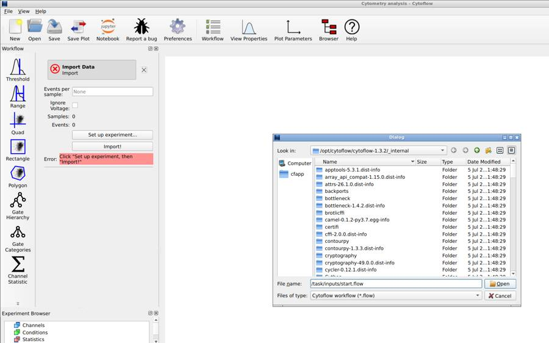
text(await tools.exec_command({cmd:"cu key Return\ncu screenshot /tmp/screen.png","max_output_tokens":1000}));
image((await tools.view_image({path:"/tmp/screen.png"})).image_url);
Script completed Wall time 0.1 seconds Output:
{"chunk_id":"a06b2b","wall_time_seconds":0.00000392,"exit_code":0,"original_token_count":4,"output":"/tmp/screen.png\n"}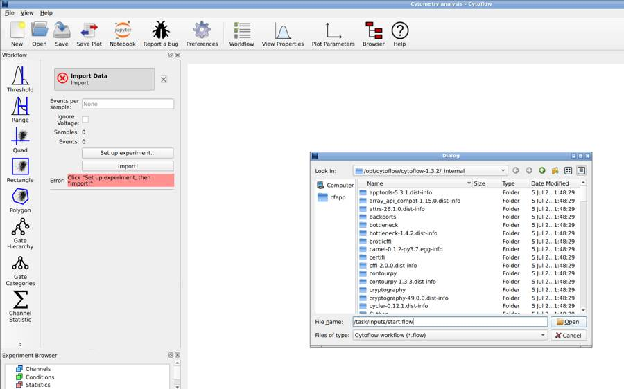
text(await tools.exec_command({cmd:"sleep 2\ncu screenshot /tmp/screen.png","max_output_tokens":1000}));
image((await tools.view_image({path:"/tmp/screen.png"})).image_url);
Script completed Wall time 2.1 seconds Output:
{"chunk_id":"db3ee0","wall_time_seconds":1.902404158,"exit_code":0,"original_token_count":4,"output":"/tmp/screen.png\n"}
text(await tools.exec_command({cmd:"cu click 747 449\nsleep 40\ncu screenshot /tmp/screen.png","yield_time_ms":1000,"max_output_tokens":1000}));
Script completed
Wall time 1.2 seconds
Output:
{"chunk_id":"7da0f5","wall_time_seconds":1.001240623,"session_id":84504,"original_token_count":0,"output":""}text(await tools.write_stdin({session_id:84504,chars:"","yield_time_ms":1000,"max_output_tokens":1000}));
image((await tools.view_image({path:"/tmp/screen.png"})).image_url);
Script completed Wall time 5.0 seconds Output:
{"chunk_id":"afd843","wall_time_seconds":5.000398286,"session_id":84504,"original_token_count":0,"output":""}text(await tools.exec_command({cmd:"file /task/inputs/start.flow\ncu --help","max_output_tokens":2000}));
Script completed
Wall time 0.0 seconds
Output:
{"chunk_id":"59135d","wall_time_seconds":0.00000385,"exit_code":1,"original_token_count":126,"output":"/bin/bash: line 1: file: command not found\n# Computer-use helper: the agent's only way to act on the screen.\n# cu screenshot [path] -> PNG of the screen (default /tmp/screen.png); prints path\n# cu click X Y [left|right|double]\n# cu move X Y | cu drag X1 Y1 X2 Y2 | cu scroll X Y up|down [N]\n# cu type \"text\" (keystrokes) | cu paste \"text\" (clipboard) | cu key KEYS (e.g. ctrl+s, Return)\n# cu cursor -> current mouse position\nexport DISPLAY=${DISPLAY:-:1}\ncmd=$1; shift\n"}text(await tools.write_stdin({session_id:84504,chars:"","yield_time_ms":1000,"max_output_tokens":1000}));
text(await tools.exec_command({cmd:"cu screenshot /tmp/screen.png","max_output_tokens":1000}));
image((await tools.view_image({path:"/tmp/screen.png"})).image_url);
Script completed Wall time 5.1 seconds Output:
{"chunk_id":"f79f0a","wall_time_seconds":5.001037557,"session_id":84504,"original_token_count":0,"output":""}{"chunk_id":"92e36d","wall_time_seconds":0.00000374,"exit_code":0,"original_token_count":4,"output":"/tmp/screen.png\n"}
text(await tools.exec_command({cmd:"cu key ctrl+shift+s\nsleep 1\ncu screenshot /tmp/screen.png","max_output_tokens":1000}));
image((await tools.view_image({path:"/tmp/screen.png"})).image_url);
Script completed Wall time 1.1 seconds Output:
{"chunk_id":"3b909b","wall_time_seconds":0.942273367,"exit_code":0,"original_token_count":4,"output":"/tmp/screen.png\n"}text(await tools.exec_command({cmd:"cu click 19 30\nsleep 1\ncu screenshot /tmp/screen.png","max_output_tokens":1000}));
image((await tools.view_image({path:"/tmp/screen.png"})).image_url);
Script completed Wall time 1.2 seconds Output:
{"chunk_id":"6c4e36","wall_time_seconds":1.006247211,"exit_code":0,"original_token_count":4,"output":"/tmp/screen.png\n"}
text(await tools.exec_command({cmd:"cu click 67 102\nsleep 1\ncu screenshot /tmp/screen.png","max_output_tokens":1000}));
image((await tools.view_image({path:"/tmp/screen.png"})).image_url);
Script completed Wall time 1.2 seconds Output:
{"chunk_id":"77279b","wall_time_seconds":1.014367008,"exit_code":0,"original_token_count":4,"output":"/tmp/screen.png\n"}
text(await tools.exec_command({cmd:"cu paste '/task/outputs/workflow.flow'\ncu key Return\nsleep 1\ncu click 215 181\nsleep 1\ncu screenshot /tmp/screen.png","max_output_tokens":1000}));
image((await tools.view_image({path:"/tmp/screen.png"})).image_url);
Script completed Wall time 3.5 seconds Output:
{"chunk_id":"04fc15","wall_time_seconds":3.355732342,"exit_code":0,"original_token_count":4,"output":"/tmp/screen.png\n"}
text(await tools.exec_command({cmd:"cu click 44 454\nsleep 1\ncu screenshot /tmp/screen.png","max_output_tokens":1000}));
image((await tools.view_image({path:"/tmp/screen.png"})).image_url);
Script completed Wall time 1.2 seconds Output:
{"chunk_id":"6d2c1a","wall_time_seconds":1.00733977,"exit_code":0,"original_token_count":4,"output":"/tmp/screen.png\n"}
text(await tools.exec_command({cmd:"cu click 272 324\ncu type 'Cells'\ncu click 355 354\nsleep 1\ncu screenshot /tmp/screen.png","max_output_tokens":1000}));
image((await tools.view_image({path:"/tmp/screen.png"})).image_url);
Script completed Wall time 1.4 seconds Output:
{"chunk_id":"3894aa","wall_time_seconds":1.245502121,"exit_code":0,"original_token_count":4,"output":"/tmp/screen.png\n"}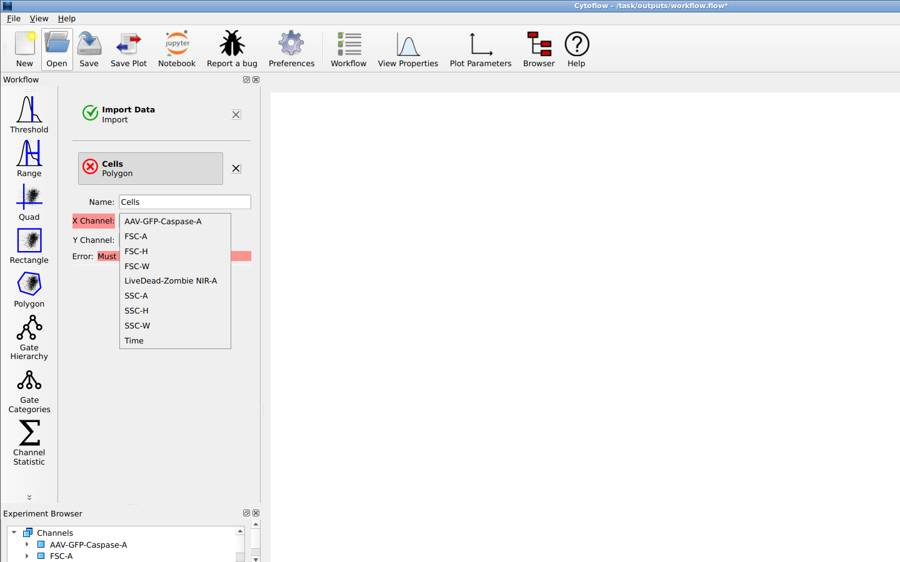
text(await tools.exec_command({cmd:"cu click 221 377\ncu click 354 385\nsleep 0.5\ncu screenshot /tmp/screen.png","max_output_tokens":1000}));
image((await tools.view_image({path:"/tmp/screen.png"})).image_url);
Script completed Wall time 0.8 seconds Output:
{"chunk_id":"6a33bf","wall_time_seconds":0.612620295,"exit_code":0,"original_token_count":4,"output":"/tmp/screen.png\n"}
text(await tools.exec_command({cmd:"cu click 222 504\ncu click 654 73\nsleep 2\ncu screenshot /tmp/screen.png","max_output_tokens":1000}));
image((await tools.view_image({path:"/tmp/screen.png"})).image_url);
Script completed Wall time 2.4 seconds Output:
{"chunk_id":"7de290","wall_time_seconds":2.142828967,"exit_code":0,"original_token_count":4,"output":"/tmp/screen.png\n"}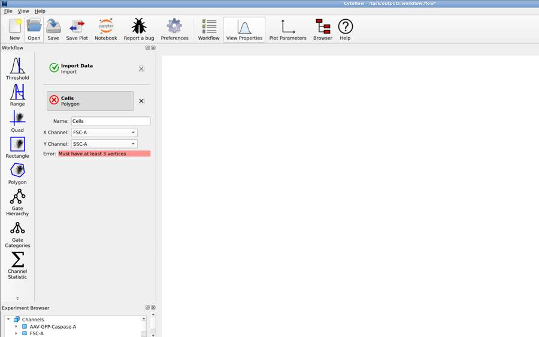
text(await tools.exec_command({cmd:"sleep 4\ncu screenshot /tmp/screen.png","max_output_tokens":1000}));
image((await tools.view_image({path:"/tmp/screen.png"})).image_url);
Script completed Wall time 4.1 seconds Output:
{"chunk_id":"6e82f0","wall_time_seconds":3.915431809,"exit_code":0,"original_token_count":4,"output":"/tmp/screen.png\n"}
const results = await Promise.allSettled([
tools.exec_command({cmd:"free -h\nps -eo pid,ppid,rss,args --sort=-rss | head -18\ncat /sys/fs/cgroup/memory.max\ncat /sys/fs/cgroup/memory.events","max_output_tokens":3000}),
tools.exec_command({cmd:"cu click 922 483\ncu key ctrl+s\ncu screenshot /tmp/screen.png","max_output_tokens":1000})
]);for(let i=0;i<results.length;i++)text({i,result:results[i]});
image((await tools.view_image({path:"/tmp/screen.png"})).image_url);
Script completed Wall time 0.2 seconds Output:
{"i":0,"result":{"status":"fulfilled","value":{"chunk_id":"c1bfda","wall_time_seconds":0.00000499,"exit_code":1,"original_token_count":14236,"output":"Warning: truncated output (original token count: 14236)\nTotal output lines: 23\n\n total used free shared buff/cache available\nMem: 7.8Gi 872Mi 6.6Gi 16Mi 512Mi 6.9Gi\nSwap: 0B 0B 0B\n PID PPID RSS COMMAND\n 842 836 415144 /opt/cytoflow/cytoflow-1.3.2/cytoflow\n 7363 7142 125528 /root/.nvm/versions/node/v22.23.4/lib/node_modules/@openai/codex/node_modules/@openai/codex-linux-x64/vendor/x86_64-unknown-linux-musl/bin/codex exec --dangerously-bypass-approvals-and-sandbox --skip-git-repo-check --model gpt-6-astra --json --enable unified_exec -c model_reasoning_effort=xhigh -- # Gate one plate: caspase-3/7 + Zombie NIR in GRN-KO iPSC neurons (36 wells) **Goal:** in Cytoflow, gate all 36 wells with one gate set, report counts for five fixed populations per well, and flag every well whose data should not be used. ## Start 1. Cytoflow 1.3.2 (on screen) is the analysis tool. All gating, counting and per-well inspection of event data happens in Cytoflow. 2. File → Open → `/task/inputs/start.flow` (enter the path with `cu paste`) → answer **Yes** to run it. Loading takes about 40 s. 3. The Import step is already configured. - One tube per FCS file. - Conditions `well`, `construct`, `stain`, `replicate`, `is_control`, `control_type`, taken from `plate_layout.csv`. - Do not rebuild it. - Leave `Events per sample` empty (full data). 4. Terminal (bash; Python 3 with numpy/pandas/matplotlib/openpyxl; no flow-cytometry libraries). - Use it to read inputs, tabulate tables exported from Cytoflow, and write deliverables. - Do not parse FCS event data in the terminal. ## Experiment | Item | Value | |---|---| | Cells | PGP1 GRN-knockout iPSC-derived neurons | | Treatment | AAV1 transduction at 1e4 vg/cell: 9 GRN RNAswap v2.0 constructs, AAV1-GFP, or no virus; triplicate wells | | Readout | 14 days after transduction; acquired 17-Apr-2023, unfixed, Attune NxT | | Staining | Zombie NIR 1:500, 10 min on adherent cells → Accutase detachment → CellEvent Caspase-3/7 detection reagent 1:1000 in flow staining buffer, 30 min, 37 °C | ## Inputs | Path | Content | |---|---| | `/task/inputs/raw/` | 36 FCS 3.1 files `Caspase_KO_RNAswap-rep2_caspase_Group_<well>.fcs`, wells A1–C12 | | `/task/inputs/plate_layout.csv` | `file, well, construct, stain, replicate, is_control, control_type` | | `/task/inputs/gating_strategy.md` | The scientist's gating strategy (description, no coordinates) | | `/task/inputs/start.flow` | Cytoflow workflow with the Import step configured | ## Channels | Detector | Name shown in Cytoflow | Dye / signal | Marks | |---|---|---|---| | FSC-A, FSC-H, FSC-W | FSC-A, FSC-H, FSC-W | forward scatter | cell size | | SSC-A, SSC-H, SSC-W | SSC-A, SSC-H, SSC-W | side scatter | granularity; SSC-H vs SSC-A for singlets | | BL1-A | `AAV-GFP-Caspase-A` | CellEvent Caspase-3/7 Green | caspase-3/7-active (apoptotic) cells | | RL3-A | `LiveDead-Zombie NIR-A` | Zombie NIR | dead / membrane-compromised cells (bright) | | Time | `Time` | acquisition clock | — | - **BL1-A name is misleading.** `AAV-GFP-Caspase-A` is a reused instrument-template name. In this assay BL1-A is the CellEvent caspase-3/7 detector. - **GFP wells.** In the AAV1-GFP wells (C4–C6), GFP fluorescence is collected in the same detector, BL1-A. - **Punctuation.** If Cytoflow shows a name with punctuation replaced (e.g. underscores), it is the same channel. - No other fluorescence parameters were recorded. ## Plate layout Samples. All are stained with Zombie NIR + CellEvent (`stain` = zombie_caspase). `replicate` is 1/2/3 from left to right. | Wells | construct | |---|---| | A1–A3 | RSV | | A4–A6 | hSyn | | A7–A9 | 9523 | | A10–A12 | 3945 | | B1–B3 | 9421 | | B4–B6 | 3503 | | B7–B9 | 8820 | | B10–B12 | 8790 | | C1–C3 | 3945_3503 (3945 + 3503 combination) | Controls (`is_control` = yes): | Wells | Content | control_type | Use | |---|---|---|---| | C4–C6 | AAV1-GFP, both dyes | transduction_gfp | transduction reference; BL1-A carries GFP + caspase signal | | C7–C9 | no virus, both dyes | untreated_no_virus | untransduced, fully stained reference | | C10 | no virus, no dyes | unstained | unstained position on BL1-A and RL3-A | | C11 | no virus, Zombie NIR only | viability_dye_only | Zombie NIR negative vs bright on RL3-A | | C12 | no virus, CellEvent only | caspase_dye_only | caspase-negative vs positive on BL1-A | ## Populations (report exactly these, in this order) | # | population | parent_population | Definition | |---|---|---|---| | 1 | `Cells` | `All_events` | cells on FSC-A × SSC-A, debris excluded | | 2 | `Single_Cells` | `Cells` | singlets on SSC-H × SSC-A | | 3 | `Live` | `Single_Cells` | Zombie NIR-negative (RL3-A low) | | 4 | `Caspase_pos` | `Live` | CellEvent-positive live cells (early apoptotic) | | 5 | `Late_apoptosis` | `Single_Cells` | CellEvent-positive and Zombie NIR-bright | Gate shapes and channels are given in `gating_strategy.md`. ## Gating rules - **One operation per population.** Each population is one Cytoflow gate operation (Polygon, Rectangle, Range or Threshold). Its name must be exactly the population name above. - **Hierarchy.** - Cytoflow evaluates every gate on all events. - A population's membership is its own gate AND all its ancestors' gates. - Draw each gate with the view subset set to its parent chain. - Compute counts with the full ancestor chain. - **One gate set for all 36 wells.** No per-well gates. - **Raw (uncompensated) data only.** Do not add Bleedthrough, Autofluorescence or any other operation that changes channel values. - **FlowClean.** It may be used for inspection only. Do not use its output to define or filter any reported population. - **Getting counts per well.** - Use Channel Statistic (function C
… [6,330 more characters not shown]{"i":1,"result":{"status":"fulfilled","value":{"chunk_id":"b34da0","wall_time_seconds":0.038683584,"exit_code":0,"original_token_count":4,"output":"/tmp/screen.png\n"}}}
text(await tools.exec_command({cmd:"cu click 466 72\nsleep 1\ncu screenshot /tmp/screen.png","max_output_tokens":1000}));
image((await tools.view_image({path:"/tmp/screen.png"})).image_url);
text(await tools.exec_command({cmd:"df -h /task\nls /sys/fs/cgroup\nps -eo pid,ppid,rss,comm --sort=-rss | head -10\nls /opt/cytoflow","max_output_tokens":2000}));
Script completed Wall time 1.2 seconds Output:
{"chunk_id":"08010b","wall_time_seconds":1.011246949,"exit_code":0,"original_token_count":4,"output":"/tmp/screen.png\n"}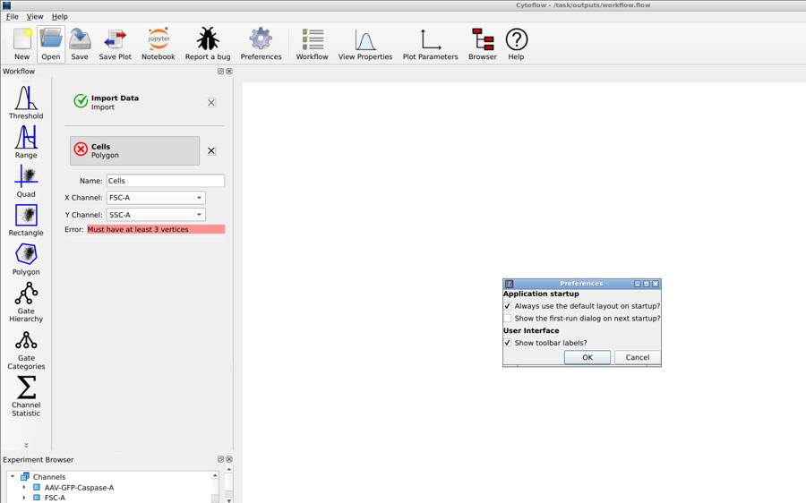
{"chunk_id":"570c09","wall_time_seconds":0.0000044,"exit_code":0,"original_token_count":191,"output":"Filesystem Size Used Avail Use% Mounted on\n/dev/root 504G 3.6G 501G 1% /\ncgroup.controllers\ncgroup.max.depth\ncgroup.max.descendants\ncgroup.pressure\ncgroup.procs\ncgroup.stat\ncgroup.subtree_control\ncgroup.threads\ncpu.pressure\ncpu.stat\ncpu.stat.local\ncpuset.cpus.effective\ncpuset.cpus.isolated\ncpuset.mems.effective\nio.pressure\nio.stat\nmemory.numa_stat\nmemory.pressure\nmemory.reclaim\nmemory.stat\nmemory.zswap.writeback\nmisc.capacity\nmisc.current\nmisc.peak\n PID PPID RSS COMMAND\n 842 836 418960 cytoflow\n 7363 7142 131768 codex\n 928 912 40224 QtWebEngineProc\n 816 812 39292 Xvfb\n 828 812 23188 websockify\n 860 842 22088 cytoflow\n 7449 7363 19400 codex-code-mode\n 835 829 11980 openbox\n 827 812 9516 x11vnc\ncytoflow-1.3.2\n"}text(await tools.exec_command({cmd:"cu click 1046 640\ncu key ctrl+q\nsleep 1\ncu screenshot /tmp/screen.png","max_output_tokens":1000}));
image((await tools.view_image({path:"/tmp/screen.png"})).image_url);
Script completed Wall time 1.2 seconds Output:
{"chunk_id":"ca42d9","wall_time_seconds":1.037114848,"exit_code":0,"original_token_count":4,"output":"/tmp/screen.png\n"}text(await tools.exec_command({cmd:"cu click 20 29\ncu click 51 198\nsleep 1\ncu screenshot /tmp/screen.png","max_output_tokens":1000}));
image((await tools.view_image({path:"/tmp/screen.png"})).image_url);
Script completed Wall time 1.3 seconds Output:
{"chunk_id":"693f8b","wall_time_seconds":1.116363964,"exit_code":0,"original_token_count":4,"output":"/tmp/screen.png\n"}
text(await tools.exec_command({cmd:"DISPLAY=:1 /opt/cytoflow/cytoflow-1.3.2/cytoflow > /task/outputs/work/cytoflow.log 2>&1","yield_time_ms":1000,"max_output_tokens":1000}));
text(await tools.exec_command({cmd:"sleep 3\ncu screenshot /tmp/screen.png","max_output_tokens":1000}));
image((await tools.view_image({path:"/tmp/screen.png"})).image_url);
Script completed Wall time 4.2 seconds Output:
{"chunk_id":"b5270d","wall_time_seconds":1.001642843,"session_id":26595,"original_token_count":0,"output":""}{"chunk_id":"420793","wall_time_seconds":2.902653081,"exit_code":0,"original_token_count":4,"output":"/tmp/screen.png\n"}
text(await tools.exec_command({cmd:"cu click 61 30\nsleep 0.5\ncu screenshot /tmp/screen.png","max_output_tokens":1000}));
image((await tools.view_image({path:"/tmp/screen.png"})).image_url);
Script completed Wall time 0.7 seconds Output:
{"chunk_id":"2b4f54","wall_time_seconds":0.509007668,"exit_code":0,"original_token_count":4,"output":"/tmp/screen.png\n"}
text(await tools.exec_command({cmd:"cu key Escape\ncu click 677 9 double\nsleep 1\ncu screenshot /tmp/screen.png","max_output_tokens":1000}));
image((await tools.view_image({path:"/tmp/screen.png"})).image_url);
Script completed Wall time 1.3 seconds Output:
{"chunk_id":"c42366","wall_time_seconds":1.130841079,"exit_code":0,"original_token_count":4,"output":"/tmp/screen.png\n"}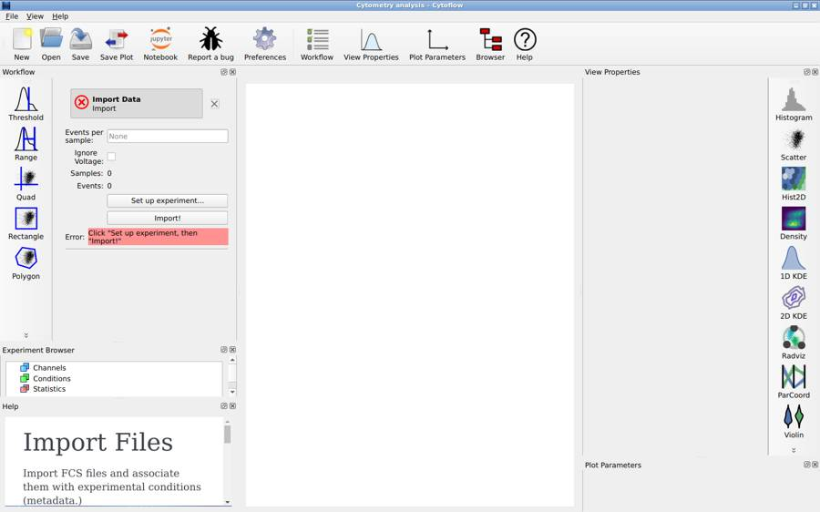
text(await tools.exec_command({cmd:"cu key ctrl+o\nsleep 0.5\ncu paste '/task/outputs/workflow.flow'\ncu key Return\nsleep 1\ncu screenshot /tmp/screen.png","max_output_tokens":1000}));
image((await tools.view_image({path:"/tmp/screen.png"})).image_url);
Script completed Wall time 3.0 seconds Output:
{"chunk_id":"9e1cfc","wall_time_seconds":2.78336181,"exit_code":0,"original_token_count":4,"output":"/tmp/screen.png\n"}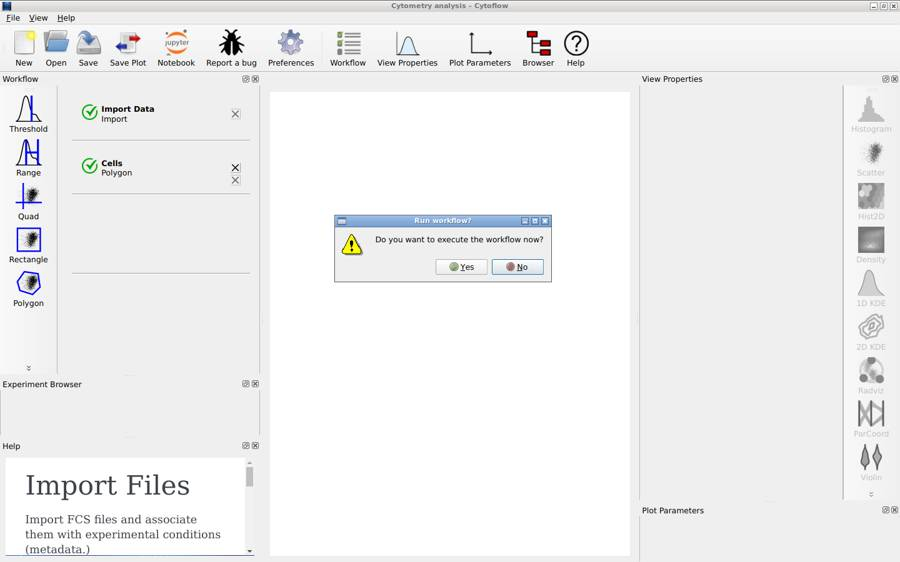
text(await tools.exec_command({cmd:"cu click 738 426\nsleep 35\ncu screenshot /tmp/screen.png","yield_time_ms":1000,"max_output_tokens":1000}));
Script completed
Wall time 1.2 seconds
Output:
{"chunk_id":"75f23e","wall_time_seconds":1.000223593,"session_id":63365,"original_token_count":0,"output":""}text(await tools.exec_command({cmd:"tail -8 /task/outputs/work/cytoflow.log\nps -eo pid,rss,comm --sort=-rss | head -8","max_output_tokens":1500}));
text(await tools.clock__curr_time({}));
Script completed
Wall time 0.0 seconds
Output:
{"chunk_id":"fac29d","wall_time_seconds":0.00000343,"exit_code":0,"original_token_count":156,"output":"QStandardPaths: XDG_RUNTIME_DIR not set, defaulting to '/tmp/runtime-root'\nQXcbIntegration: Cannot create platform OpenGL context, neither GLX nor EGL are enabled\ntraits/etsconfig/etsconfig.py:425: UserWarning: Environment variable \"HOME\" not set, setting home directory to /tmp\n[7677:7677:1105/001029.187522:ERROR:zygote_host_impl_linux.cc(90)] Running as root without --no-sandbox is not supported. See https://crbug.com/638180.\n PID RSS COMMAND\n 7686 2243220 cytoflow\n 7664 535076 cytoflow\n 7707 294136 cytoflow\n 7363 137576 codex\n 7772 71816 QtWebEngineProc\n 7754 47884 QtWebEngineProc\n 7733 47808 QtWebEngineProc\n"}
{"current_time":"2026-11-05 00:10:58 UTC"}text(await tools.write_stdin({session_id:63365,chars:"","yield_time_ms":1000,"max_output_tokens":1000}));
text(await tools.exec_command({cmd:"cu click 210 262\nsleep 1\ncu screenshot /tmp/screen.png","max_output_tokens":1000}));
image((await tools.view_image({path:"/tmp/screen.png"})).image_url);
Script completed Wall time 6.2 seconds Output:
{"chunk_id":"2d8f09","wall_time_seconds":5.001190627,"session_id":63365,"original_token_count":0,"output":""}{"chunk_id":"832005","wall_time_seconds":1.019440165,"exit_code":0,"original_token_count":4,"output":"/tmp/screen.png\n"}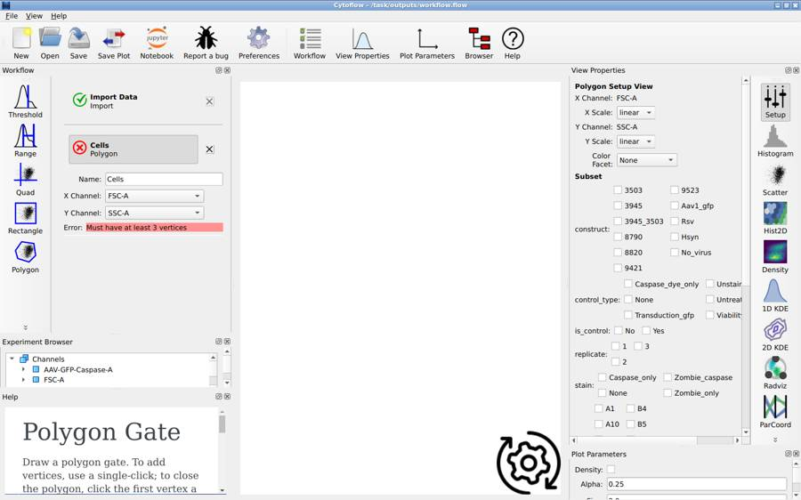
text(await tools.exec_command({cmd:"cu click 1275 538\nsleep 3\ncu screenshot /tmp/screen.png","max_output_tokens":1000}));
image((await tools.view_image({path:"/tmp/screen.png"})).image_url);
Script completed Wall time 3.2 seconds Output:
{"chunk_id":"2fd106","wall_time_seconds":3.032313836,"exit_code":0,"original_token_count":4,"output":"/tmp/screen.png\n"}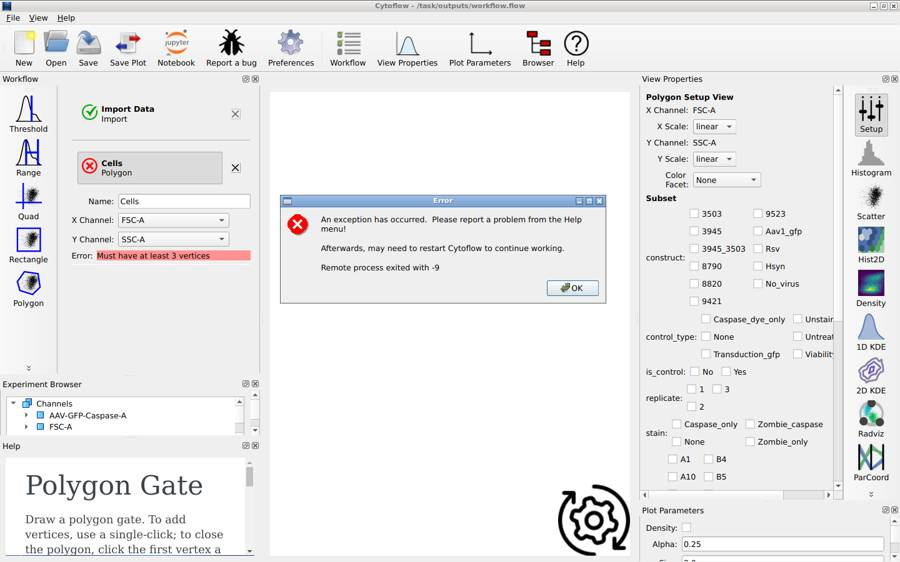
text(await tools.exec_command({cmd:"cu click 914 462\ncu click 1275 538\ncu key ctrl+s\nsleep 0.5\ncu screenshot /tmp/screen.png","max_output_tokens":1000}));
image((await tools.view_image({path:"/tmp/screen.png"})).image_url);
text(await tools.exec_command({cmd:"dmesg | tail -8","max_output_tokens":1500}));
Script completed Wall time 0.9 seconds Output:
{"chunk_id":"0ae3e4","wall_time_seconds":0.654653697,"exit_code":0,"original_token_count":4,"output":"/tmp/screen.png\n"}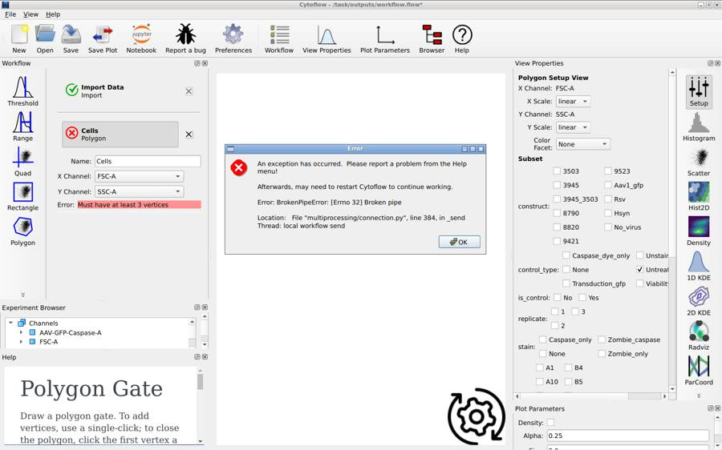
{"chunk_id":"5d73f9","wall_time_seconds":0.00000462,"exit_code":0,"original_token_count":272,"output":"[ 222.381184] [ 7733] 1002 7733 52306 1872 1870 2 0 294912 0 0 QtWebEngineProc\n[ 222.381234] [ 7754] 1002 7754 52306 1875 1873 2 0 294912 0 0 QtWebEngineProc\n[ 222.381307] [ 7756] 1002 7756 52306 1876 1874 2 0 172032 0 0 QtWebEngineProc\n[ 222.381357] [ 7772] 1002 7772 1291135 3896 3506 2 388 622592 0 300 QtWebEngineProc\n[ 222.381415] [ 7843] 0 7843 1191 70 68 2 0 45056 0 0 bash\n[ 222.381461] [ 7847] 0 7847 784 29 28 1 0 45056 0 0 sleep\n[ 222.381506] oom-kill:constraint=CONSTRAINT_NONE,nodemask=(null),cpuset=/,mems_allowed=0,global_oom,task_memcg=/,task=cytoflow,pid=7686,uid=1002\n[ 222.381605] Out of memory: Killed process 7686 (cytoflow) total-vm:8677532kB, anon-rss:7148392kB, file-rss:12kB, shmem-rss:28kB, UID:1002 pgtables:14644kB oom_score_adj:0\n"}text(await tools.exec_command({cmd:"fallocate -l 12G /tmp/cytoflow.swap\nchmod 600 /tmp/cytoflow.swap\nmkswap /tmp/cytoflow.swap\nswapon /tmp/cytoflow.swap\nfree -h","max_output_tokens":1000}));
text(await tools.exec_command({cmd:"cu click 920 485\ncu key ctrl+s\nsleep 1\ncu click 20 29\ncu click 48 198\nsleep 1\ncu screenshot /tmp/screen.png","max_output_tokens":1000}));
image((await tools.view_image({path:"/tmp/screen.png"})).image_url);
Script completed Wall time 2.5 seconds Output:
{"chunk_id":"57d87b","wall_time_seconds":0.00000478,"exit_code":0,"original_token_count":82,"output":"Setting up swapspace version 1, size = 12 GiB (12884897792 bytes)\nno label, UUID=48820b38-4f4f-40ba-98d4-5668f64489aa\n total used free shared buff/cache available\nMem: 7.8Gi 1.1Gi 6.4Gi 15Mi 531Mi 6.7Gi\nSwap: 11Gi 0B 11Gi\n"}{"chunk_id":"aeec92","wall_time_seconds":2.249546773,"exit_code":0,"original_token_count":4,"output":"/tmp/screen.png\n"}text(await tools.exec_command({cmd:"DISPLAY=:1 /opt/cytoflow/cytoflow-1.3.2/cytoflow >> /task/outputs/work/cytoflow.log 2>&1","yield_time_ms":1000,"max_output_tokens":1000}));
text(await tools.exec_command({cmd:"sleep 3\ncu click 677 9 double\ncu key ctrl+o\nsleep 1\ncu paste '/task/outputs/workflow.flow'\ncu key Return\nsleep 1\ncu screenshot /tmp/screen.png","max_output_tokens":1000}));
image((await tools.view_image({path:"/tmp/screen.png"})).image_url);
Script completed Wall time 7.8 seconds Output:
{"chunk_id":"eeb6d7","wall_time_seconds":1.001005033,"session_id":66719,"original_token_count":0,"output":""}{"chunk_id":"569f8b","wall_time_seconds":6.490341176,"exit_code":0,"original_token_count":4,"output":"/tmp/screen.png\n"}
text(await tools.exec_command({cmd:"cu click 740 428\nsleep 35\ncu click 218 267\nsleep 2\ncu screenshot /tmp/screen.png","yield_time_ms":1000,"max_output_tokens":1000}));
Script completed
Wall time 1.2 seconds
Output:
{"chunk_id":"ad57fc","wall_time_seconds":1.000534723,"session_id":87967,"original_token_count":0,"output":""}text(await tools.write_stdin({session_id:87967,chars:"","yield_time_ms":1000,"max_output_tokens":1000}));
text(await tools.exec_command({cmd:"cu screenshot /tmp/screen.png\nfree -h","max_output_tokens":1000}));
image((await tools.view_image({path:"/tmp/screen.png"})).image_url);
Script completed Wall time 5.1 seconds Output:
{"chunk_id":"2a9d2e","wall_time_seconds":5.000816967,"session_id":87967,"original_token_count":0,"output":""}{"chunk_id":"02f664","wall_time_seconds":0.00000451,"exit_code":0,"original_token_count":56,"output":"/tmp/screen.png\n total used free shared buff/cache available\nMem: 7.8Gi 3.3Gi 3.4Gi 15Mi 1.3Gi 4.4Gi\nSwap: 11Gi 0B 11Gi\n"}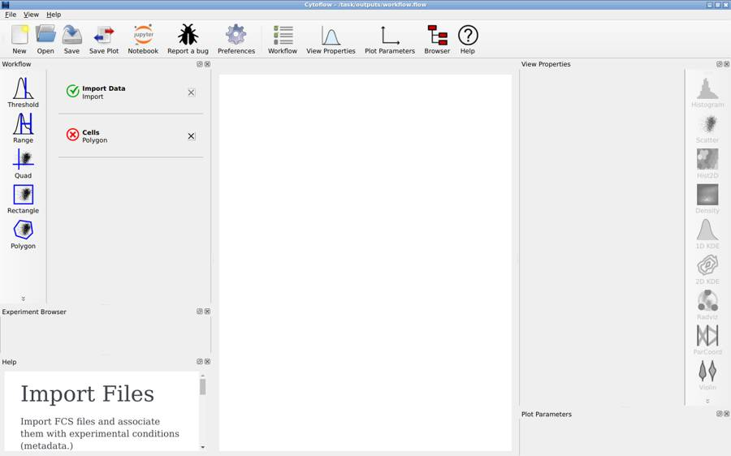
text(await tools.write_stdin({session_id:87967,chars:"","yield_time_ms":1000,"max_output_tokens":1000}));
text(await tools.exec_command({cmd:"cu screenshot /tmp/screen.png","max_output_tokens":1000}));
image((await tools.view_image({path:"/tmp/screen.png"})).image_url);
Script completed Wall time 1.2 seconds Output:
{"chunk_id":"24115b","wall_time_seconds":1.038668128,"exit_code":0,"original_token_count":4,"output":"/tmp/screen.png\n"}{"chunk_id":"52f04c","wall_time_seconds":0.00000483,"exit_code":0,"original_token_count":4,"output":"/tmp/screen.png\n"}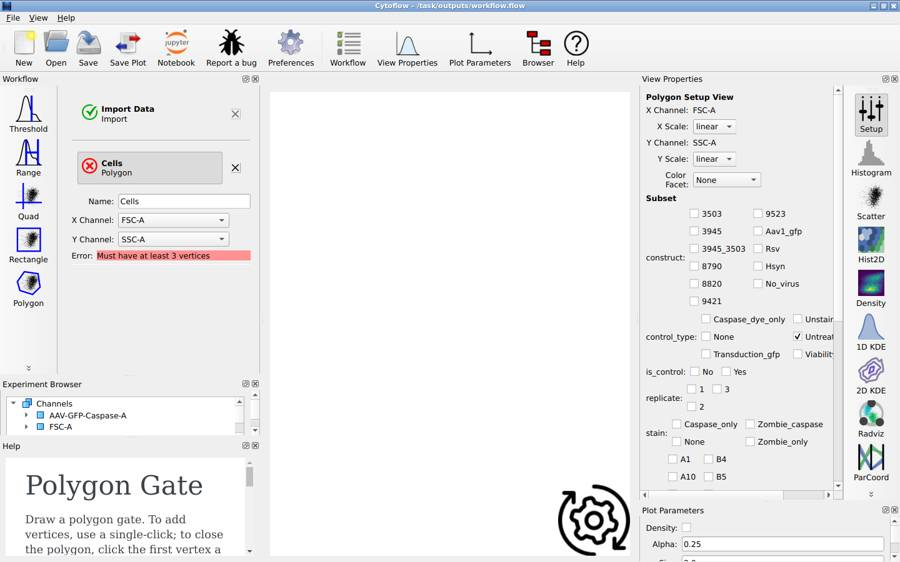
text(await tools.exec_command({cmd:"sleep 8\ncu screenshot /tmp/screen.png\nfree -h","max_output_tokens":1000}));
image((await tools.view_image({path:"/tmp/screen.png"})).image_url);
Script completed Wall time 8.1 seconds Output:
{"chunk_id":"eaebeb","wall_time_seconds":7.930047506,"exit_code":0,"original_token_count":56,"output":"/tmp/screen.png\n total used free shared buff/cache available\nMem: 7.8Gi 3.5Gi 3.3Gi 15Mi 1.3Gi 4.3Gi\nSwap: 11Gi 0B 11Gi\n"}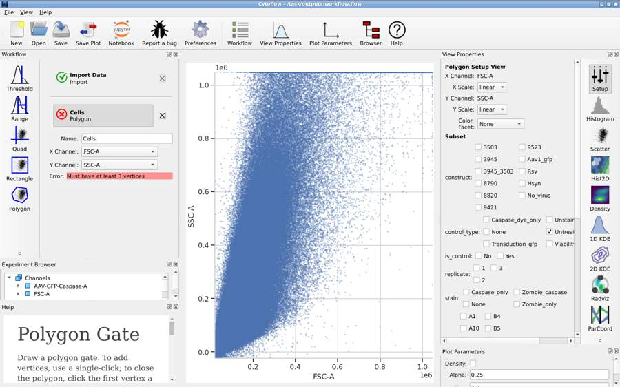
text(await tools.exec_command({cmd:"cu click 1165 202\nsleep 0.4\ncu screenshot /tmp/screen.png","max_output_tokens":1000}));
image((await tools.view_image({path:"/tmp/screen.png"})).image_url);
Script completed Wall time 0.6 seconds Output:
{"chunk_id":"db7d76","wall_time_seconds":0.435347389,"exit_code":0,"original_token_count":4,"output":"/tmp/screen.png\n"}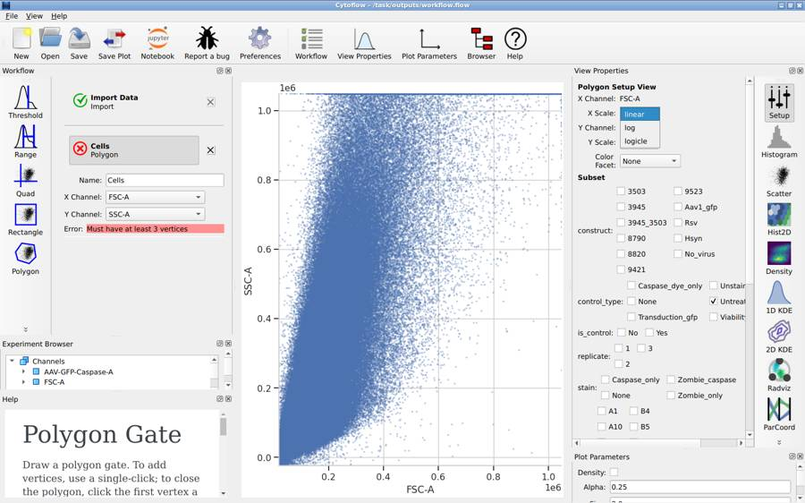
text(await tools.exec_command({cmd:"cu click 1128 229\ncu click 1165 254\ncu click 1128 281\ncu click 1098 844\nsleep 3\ncu screenshot /tmp/screen.png","max_output_tokens":1000}));
image((await tools.view_image({path:"/tmp/screen.png"})).image_url);
Script completed Wall time 3.5 seconds Output:
{"chunk_id":"999e57","wall_time_seconds":3.351651033,"exit_code":0,"original_token_count":4,"output":"/tmp/screen.png\n"}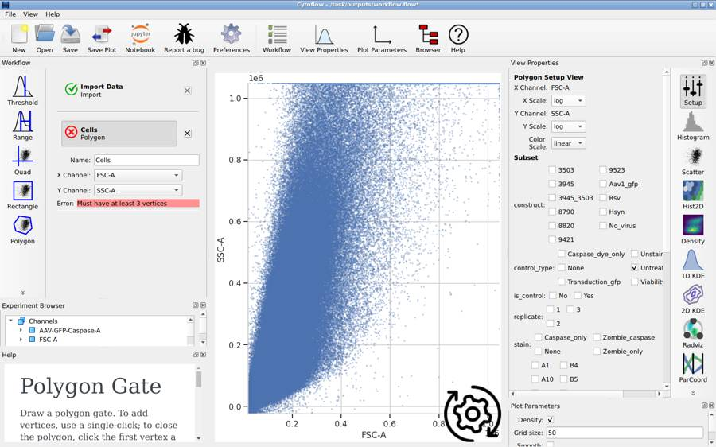
text(await tools.exec_command({cmd:"sleep 5\ncu screenshot /tmp/screen.png","max_output_tokens":1000}));
image((await tools.view_image({path:"/tmp/screen.png"})).image_url);
Script completed Wall time 5.1 seconds Output:
{"chunk_id":"ef1450","wall_time_seconds":4.926143778,"exit_code":0,"original_token_count":4,"output":"/tmp/screen.png\n"}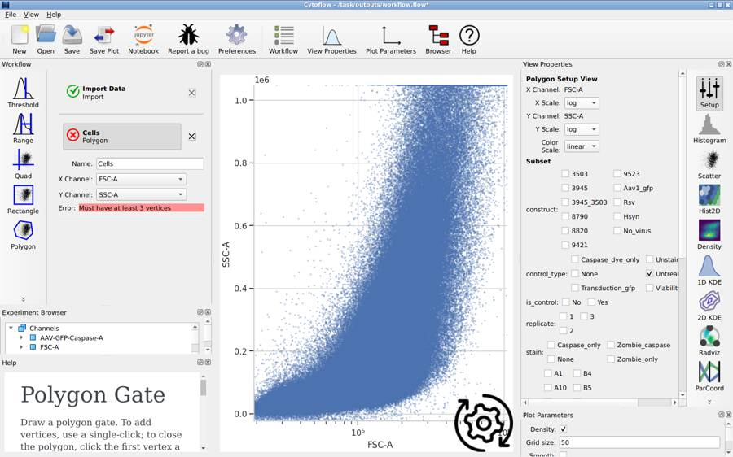
text(await tools.exec_command({cmd:"sleep 5\ncu screenshot /tmp/screen.png","max_output_tokens":1000}));
image((await tools.view_image({path:"/tmp/screen.png"})).image_url);
Script completed Wall time 5.1 seconds Output:
{"chunk_id":"4f59a6","wall_time_seconds":4.915644122,"exit_code":0,"original_token_count":4,"output":"/tmp/screen.png\n"}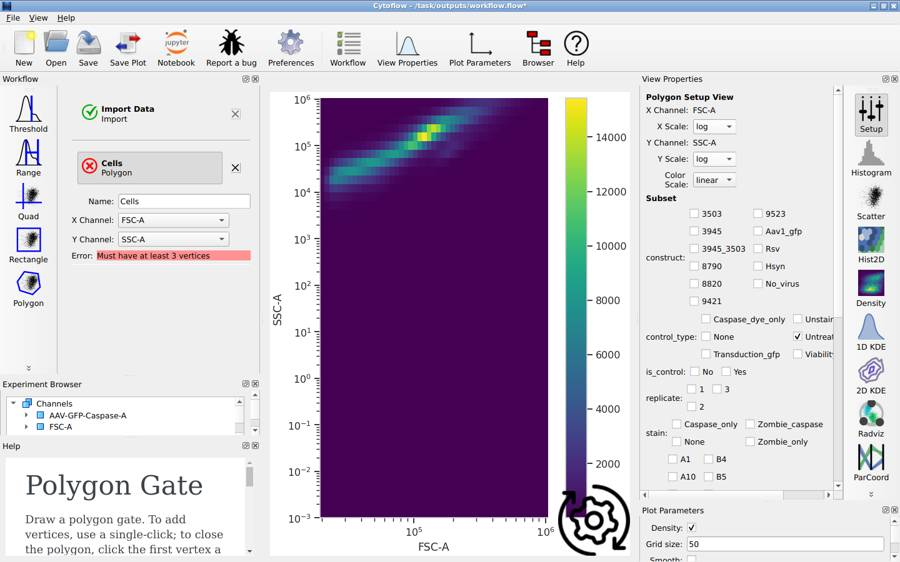
text(await tools.exec_command({cmd:"cu drag 1220 804 1220 528\ncu click 408 714\ncu click 408 615\nsleep 1\ncu screenshot /tmp/screen.png","max_output_tokens":1000}));
image((await tools.view_image({path:"/tmp/screen.png"})).image_url);
Script completed Wall time 1.3 seconds Output:
{"chunk_id":"a7a6bb","wall_time_seconds":1.158834717,"exit_code":0,"original_token_count":4,"output":"/tmp/screen.png\n"}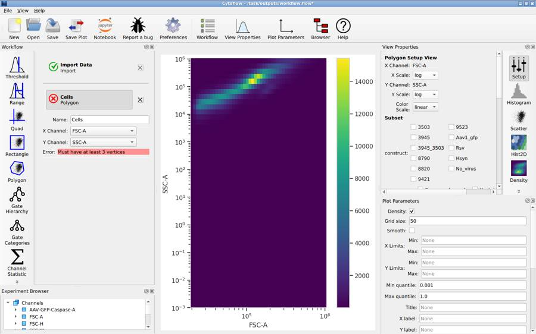
text(await tools.exec_command({cmd:"cu click 1249 647\ncu key ctrl+a\ncu type '10000'\ncu key Tab\ncu click 1250 677\ncu key ctrl+a\ncu type '1100000'\ncu key Tab\ncu click 1249 707\ncu key ctrl+a\ncu type '1000'\ncu key Tab\ncu click 1249 737\ncu key ctrl+a\ncu type '1100000'\ncu key Tab\nsleep 4\ncu screenshot /tmp/screen.png","max_output_tokens":1000}));
image((await tools.view_image({path:"/tmp/screen.png"})).image_url);
Script completed Wall time 5.3 seconds Output:
{"chunk_id":"e5557e","wall_time_seconds":5.11205411,"exit_code":0,"original_token_count":4,"output":"/tmp/screen.png\n"}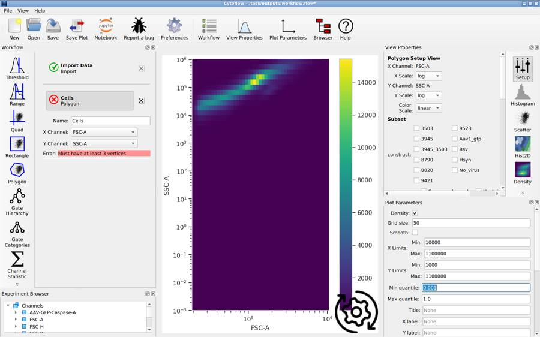
text(await tools.exec_command({cmd:"sleep 12\ncu screenshot /tmp/screen.png","max_output_tokens":1000}));
image((await tools.view_image({path:"/tmp/screen.png"})).image_url);
Script completed Wall time 10.2 seconds Output:
{"chunk_id":"f601a4","wall_time_seconds":10.001320463,"session_id":32441,"original_token_count":0,"output":""}text(await tools.write_stdin({session_id:32441,chars:"","yield_time_ms":1000,"max_output_tokens":1000}));
image((await tools.view_image({path:"/tmp/screen.png"})).image_url);
Script completed Wall time 0.0 seconds Output:
{"chunk_id":"aab025","wall_time_seconds":0.00000302,"exit_code":0,"original_token_count":4,"output":"/tmp/screen.png\n"}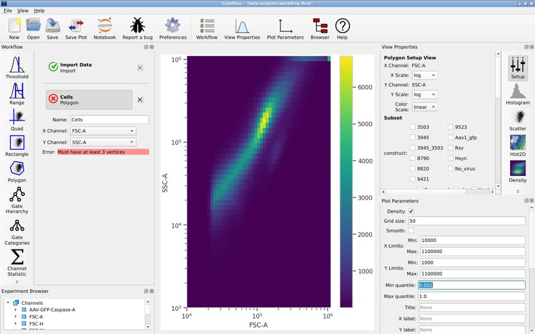
text(await tools.exec_command({cmd:"cu click 654 515\ncu click 654 390\ncu click 685 263\ncu click 743 153\ncu click 886 153\ncu click 886 470\ncu click 753 538\ncu click 683 538\ncu click 654 515\nsleep 8\ncu key ctrl+s\ncu screenshot /tmp/screen.png","yield_time_ms":15000,"max_output_tokens":1000}));
image((await tools.view_image({path:"/tmp/screen.png"})).image_url);
Script completed Wall time 9.1 seconds Output:
{"chunk_id":"cf35c6","wall_time_seconds":8.896823023,"exit_code":0,"original_token_count":4,"output":"/tmp/screen.png\n"}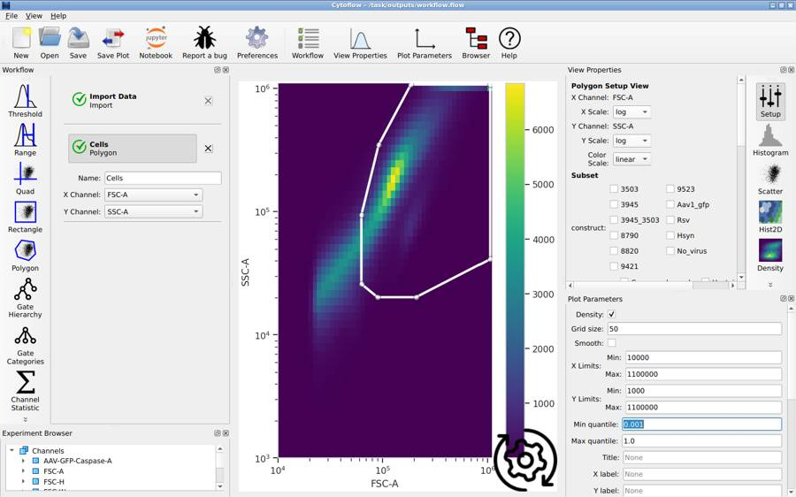
text(await tools.exec_command({cmd:"cu click 47 455\ncu click 275 408\nsleep 0.6\ncu screenshot /tmp/screen.png","max_output_tokens":1000}));
image((await tools.view_image({path:"/tmp/screen.png"})).image_url);
Script completed Wall time 0.9 seconds Output:
{"chunk_id":"d0e624","wall_time_seconds":0.722387079,"exit_code":0,"original_token_count":4,"output":"/tmp/screen.png\n"}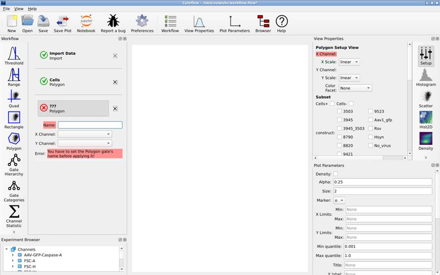
text(await tools.exec_command({cmd:"cu type 'Single_Cells'\ncu click 1088 339\ncu click 1213 477\ncu click 354 439\ncu key Home\ncu key Down\ncu key Down\ncu key Down\ncu key Down\ncu key Down\ncu key Down\ncu key Return\ncu click 354 469\ncu key Home\ncu key Down\ncu key Down\ncu key Down\ncu key Down\ncu key Down\ncu key Return\ncu click 1100 570\nsleep 2\ncu screenshot /tmp/screen.png","max_output_tokens":1000}));
image((await tools.view_image({path:"/tmp/screen.png"})).image_url);
Script completed Wall time 3.2 seconds Output:
{"chunk_id":"b87169","wall_time_seconds":2.9805633780000003,"exit_code":0,"original_token_count":4,"output":"/tmp/screen.png\n"}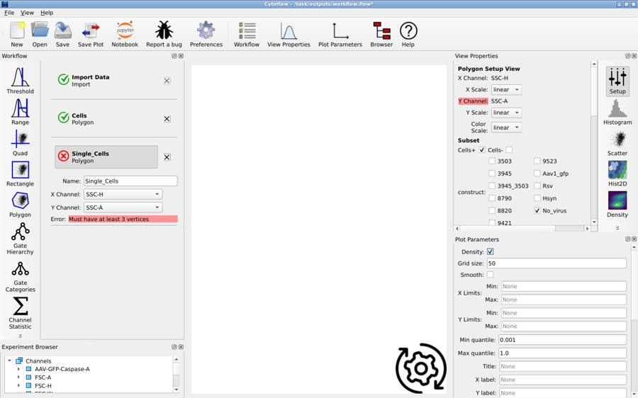
text(await tools.exec_command({cmd:"sleep 10\ncu screenshot /tmp/screen.png","yield_time_ms":15000,"max_output_tokens":1000}));
image((await tools.view_image({path:"/tmp/screen.png"})).image_url);
Script completed Wall time 10.1 seconds Output:
{"chunk_id":"8f7c18","wall_time_seconds":9.914066889,"exit_code":0,"original_token_count":4,"output":"/tmp/screen.png\n"}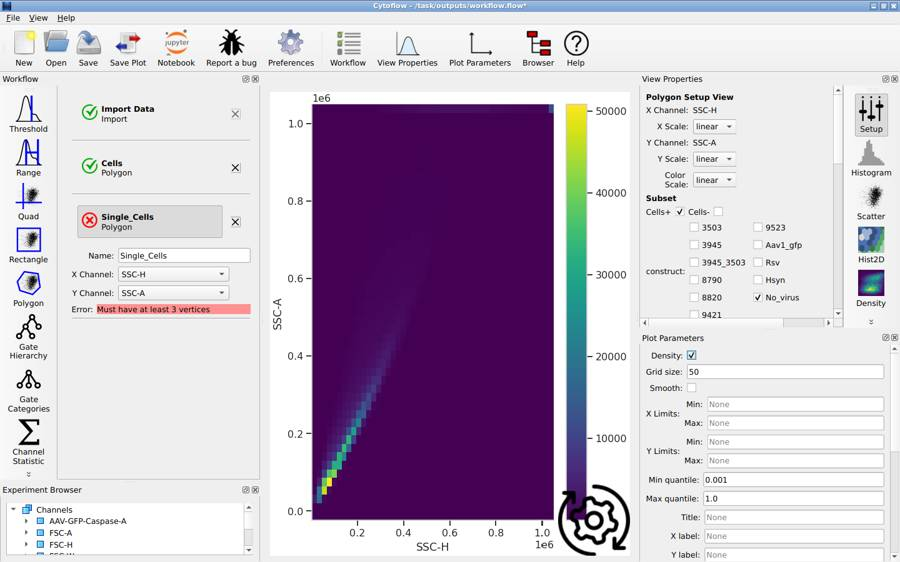
text(await tools.exec_command({cmd:"cu click 1166 202\ncu key Home\ncu key Down\ncu key Return\ncu click 1166 254\ncu key Home\ncu key Down\ncu key Return\ncu click 1166 287\ncu key Home\ncu key Down\ncu key Return\ncu click 1221 646\ncu key ctrl+a\ncu type '10000'\ncu key Tab\ncu click 1220 677\ncu key ctrl+a\ncu type '1100000'\ncu key Tab\ncu click 1220 706\ncu key ctrl+a\ncu type '10000'\ncu key Tab\ncu click 1220 736\ncu key ctrl+a\ncu type '1100000'\ncu key Tab\nsleep 12\ncu screenshot /tmp/screen.png","yield_time_ms":20000,"max_output_tokens":1000}));
image((await tools.view_image({path:"/tmp/screen.png"})).image_url);
Script completed Wall time 13.8 seconds Output:
{"chunk_id":"a28682","wall_time_seconds":13.604193182,"exit_code":0,"original_token_count":4,"output":"/tmp/screen.png\n"}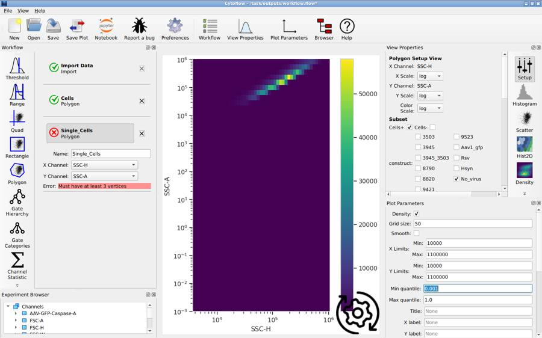
text(await tools.exec_command({cmd:"sleep 10\ncu screenshot /tmp/screen.png","yield_time_ms":15000,"max_output_tokens":1000}));
image((await tools.view_image({path:"/tmp/screen.png"})).image_url);
Script completed Wall time 10.1 seconds Output:
{"chunk_id":"6146e7","wall_time_seconds":9.91312044,"exit_code":0,"original_token_count":4,"output":"/tmp/screen.png\n"}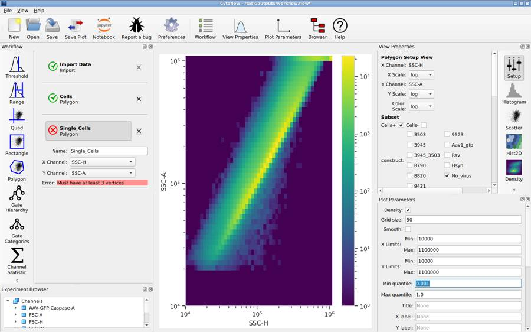
text(await tools.exec_command({cmd:"cu click 532 728\ncu click 532 680\ncu click 839 172\ncu click 897 172\ncu click 897 206\ncu click 596 721\ncu click 532 728\nsleep 5\ncu key ctrl+s\ncu screenshot /tmp/screen.png","max_output_tokens":1000}));
image((await tools.view_image({path:"/tmp/screen.png"})).image_url);
Script completed Wall time 5.9 seconds Output:
{"chunk_id":"20edb1","wall_time_seconds":5.68838916,"exit_code":0,"original_token_count":4,"output":"/tmp/screen.png\n"}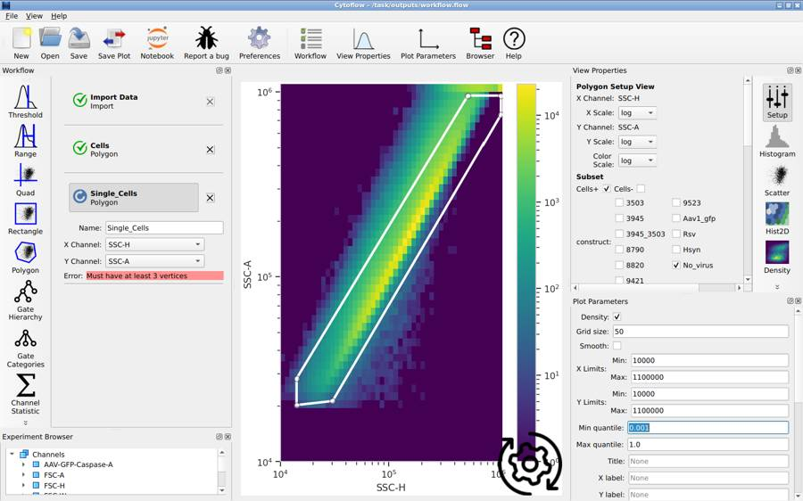
text(await tools.exec_command({cmd:"cu click 47 244\nsleep 0.5\ncu screenshot /tmp/screen.png","max_output_tokens":1000}));
image((await tools.view_image({path:"/tmp/screen.png"})).image_url);
Script completed Wall time 0.7 seconds Output:
{"chunk_id":"cb2e01","wall_time_seconds":0.517010825,"exit_code":0,"original_token_count":4,"output":"/tmp/screen.png\n"}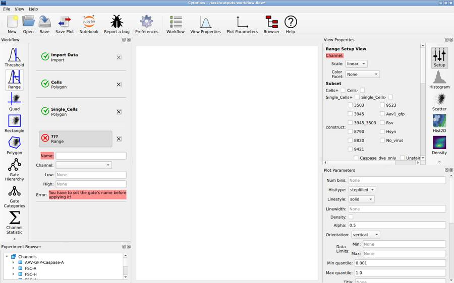
text(await tools.exec_command({cmd:"cu click 260 494\ncu type 'Live'\ncu click 1088 287\ncu click 1131 309\ncu click 1276 502\ncu click 342 525\ncu key Home\ncu key Down\ncu key Down\ncu key Down\ncu key Down\ncu key Return\ncu click 1154 202\ncu key End\ncu key Return\ncu drag 1220 527 1220 744\nsleep 1\ncu screenshot /tmp/screen.png","max_output_tokens":1000}));
image((await tools.view_image({path:"/tmp/screen.png"})).image_url);
Script completed Wall time 2.0 seconds Output:
{"chunk_id":"9ceb15","wall_time_seconds":1.816201173,"exit_code":0,"original_token_count":4,"output":"/tmp/screen.png\n"}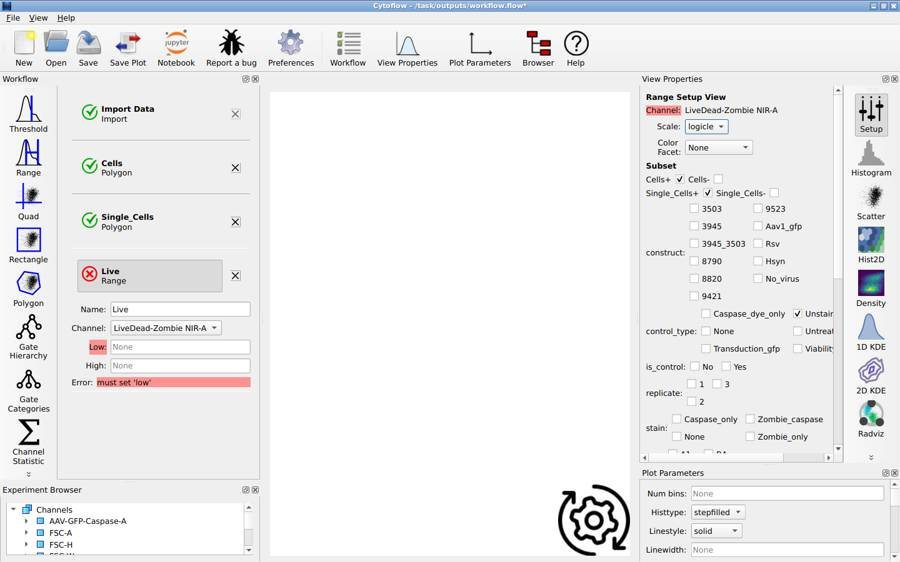
text(await tools.exec_command({cmd:"cu click 1276 558\ncu click 1192 235\nsleep 0.5\ncu screenshot /tmp/screen.png","max_output_tokens":1000}));
image((await tools.view_image({path:"/tmp/screen.png"})).image_url);
Script completed Wall time 0.8 seconds Output:
{"chunk_id":"4e3470","wall_time_seconds":0.62551605,"exit_code":0,"original_token_count":4,"output":"/tmp/screen.png\n"}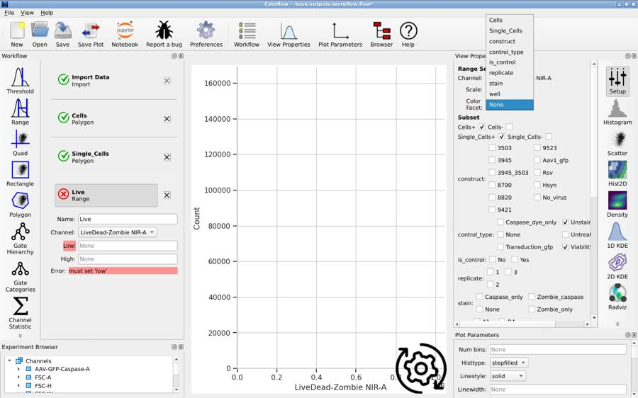
text(await tools.exec_command({cmd:"cu click 1145 117\nsleep 10\ncu screenshot /tmp/screen.png","yield_time_ms":15000,"max_output_tokens":1000}));
image((await tools.view_image({path:"/tmp/screen.png"})).image_url);
Script completed Wall time 10.2 seconds Output:
{"chunk_id":"4a7f75","wall_time_seconds":10.019154395,"exit_code":0,"original_token_count":4,"output":"/tmp/screen.png\n"}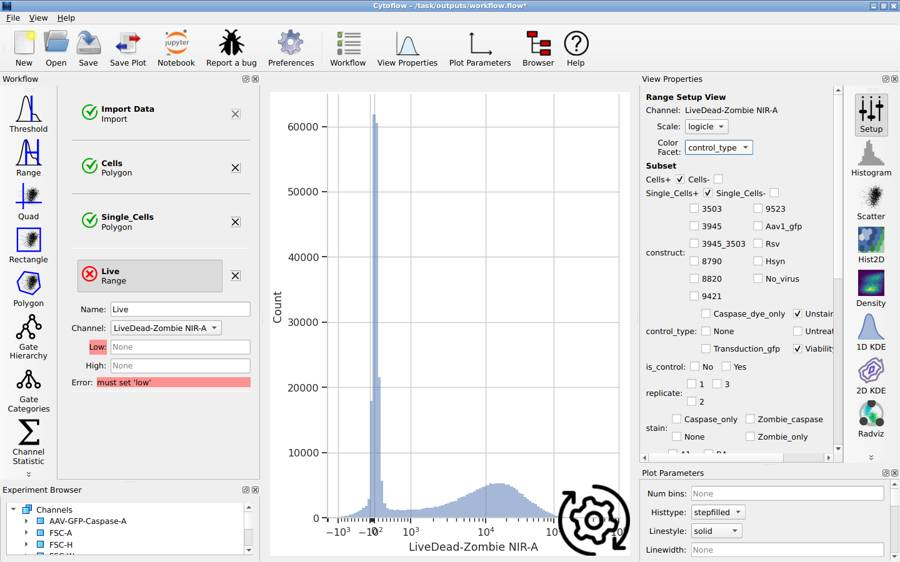
text(await tools.exec_command({cmd:"sleep 6\ncu screenshot /tmp/screen.png","max_output_tokens":1000}));
image((await tools.view_image({path:"/tmp/screen.png"})).image_url);
Script completed Wall time 6.1 seconds Output:
{"chunk_id":"d2d34e","wall_time_seconds":5.913003876,"exit_code":0,"original_token_count":4,"output":"/tmp/screen.png\n"}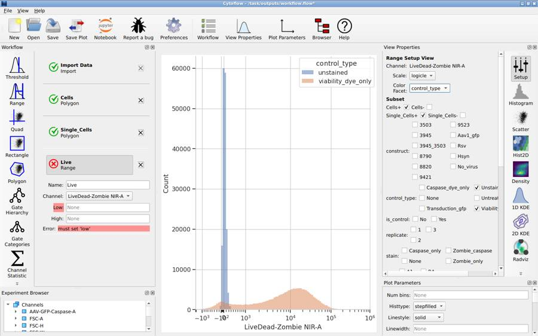
text(await tools.exec_command({cmd:"cu click 270 555\ncu key ctrl+a\ncu type '-1000000'\ncu key Tab\ncu click 274 585\ncu key ctrl+a\ncu type '1000'\ncu key Tab\nsleep 6\ncu key ctrl+s\ncu screenshot /task/outputs/work/live_controls.png","max_output_tokens":1000}));
image((await tools.view_image({path:"/task/outputs/work/live_controls.png"})).image_url);
Script completed Wall time 6.7 seconds Output:
{"chunk_id":"ef1be3","wall_time_seconds":6.548491571,"exit_code":0,"original_token_count":10,"output":"/task/outputs/work/live_controls.png\n"}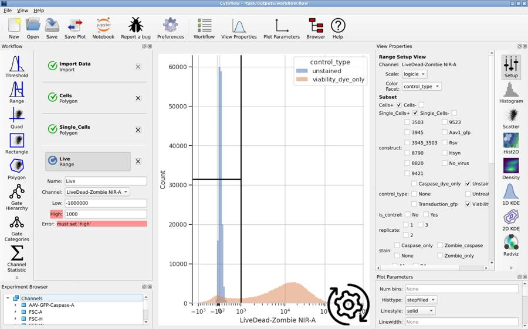
text(await tools.exec_command({cmd:"cu click 46 244\nsleep 0.5\ncu screenshot /tmp/screen.png","max_output_tokens":1000}));
image((await tools.view_image({path:"/tmp/screen.png"})).image_url);
Script completed Wall time 0.7 seconds Output:
{"chunk_id":"d4b5ee","wall_time_seconds":0.519315394,"exit_code":0,"original_token_count":4,"output":"/tmp/screen.png\n"}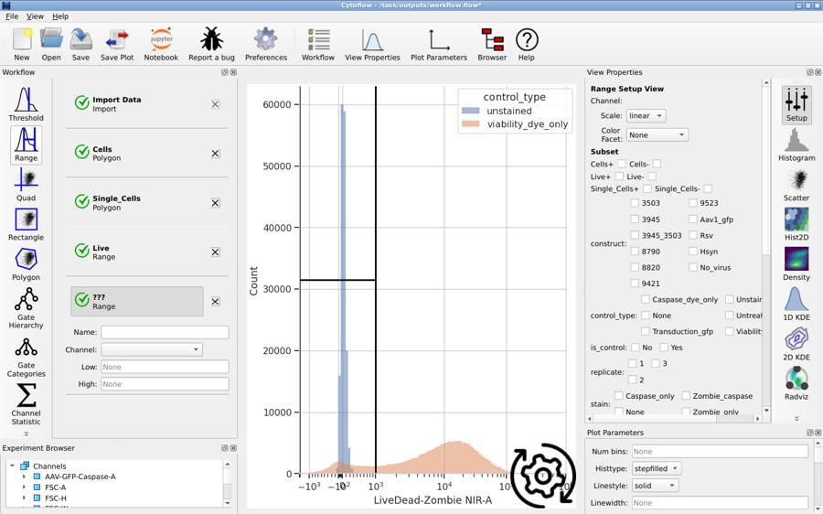
text(await tools.exec_command({cmd:"cu click 274 582\ncu type 'Caspase_pos'\ncu click 1087 286\ncu click 1084 309\ncu click 1133 330\ncu click 1129 523\ncu click 1276 523\ncu click 342 612\ncu key Home\ncu key Return\ncu click 1153 202\ncu key End\ncu key Return\ncu click 1192 235\ncu key Home\ncu key Down\ncu key Down\ncu key Down\ncu key Down\ncu key Return\nsleep 10\ncu screenshot /tmp/screen.png","yield_time_ms":15000,"max_output_tokens":1000}));
image((await tools.view_image({path:"/tmp/screen.png"})).image_url);
Script completed Wall time 11.5 seconds Output:
{"chunk_id":"6e7b56","wall_time_seconds":11.293698024,"exit_code":0,"original_token_count":4,"output":"/tmp/screen.png\n"}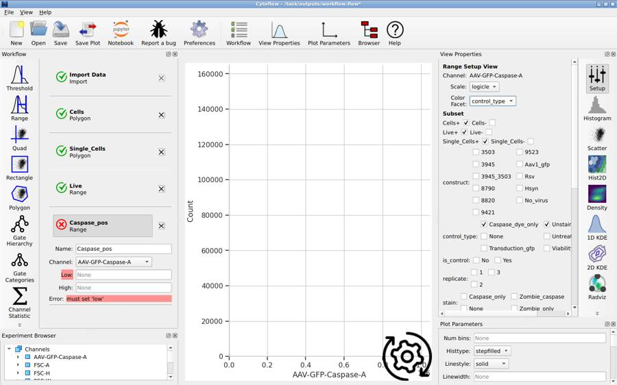
text(await tools.exec_command({cmd:"sleep 8\ncu screenshot /tmp/screen.png","max_output_tokens":1000}));
image((await tools.view_image({path:"/tmp/screen.png"})).image_url);
Script completed Wall time 8.1 seconds Output:
{"chunk_id":"8945cc","wall_time_seconds":7.913869012,"exit_code":0,"original_token_count":4,"output":"/tmp/screen.png\n"}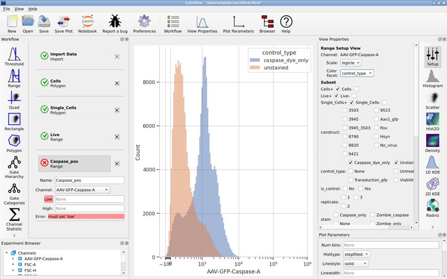
text(await tools.exec_command({cmd:"cu click 278 642\ncu key ctrl+a\ncu type '500'\ncu key Tab\ncu click 278 673\ncu key ctrl+a\ncu type '10000000'\ncu key Tab\nsleep 6\ncu key ctrl+s\ncu screenshot /task/outputs/work/caspase_controls.png","max_output_tokens":1000}));
image((await tools.view_image({path:"/task/outputs/work/caspase_controls.png"})).image_url);
Script completed Wall time 6.7 seconds Output:
{"chunk_id":"29b3ac","wall_time_seconds":6.530622289,"exit_code":0,"original_token_count":10,"output":"/task/outputs/work/caspase_controls.png\n"}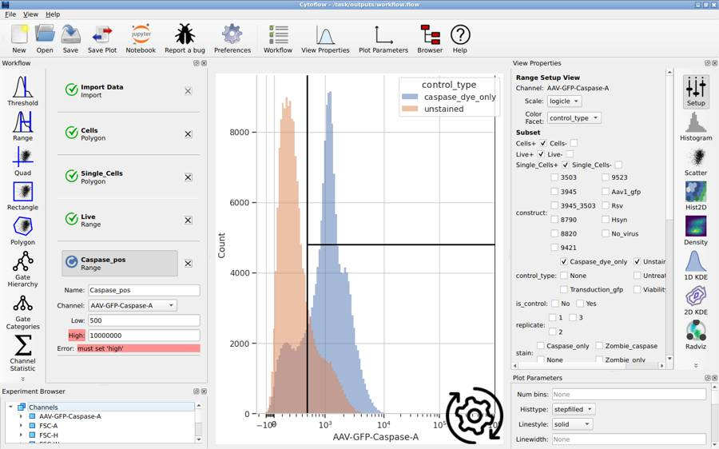
text(await tools.exec_command({cmd:"cu click 46 455\nsleep 0.5\ncu screenshot /tmp/screen.png","max_output_tokens":1000}));
image((await tools.view_image({path:"/tmp/screen.png"})).image_url);
Script completed Wall time 0.7 seconds Output:
{"chunk_id":"f733cd","wall_time_seconds":0.517989365,"exit_code":0,"original_token_count":4,"output":"/tmp/screen.png\n"}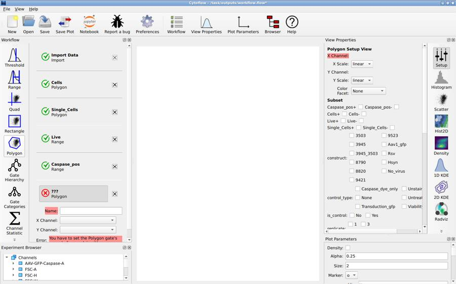
text(await tools.exec_command({cmd:"cu click 273 668\ncu type 'Late_apoptosis'\ncu click 1088 360\ncu click 1132 405\ncu click 1276 626\ncu click 354 698\ncu key Home\ncu key Return\ncu click 354 729\ncu key Home\ncu key Down\ncu key Down\ncu key Down\ncu key Down\ncu key Return\ncu click 1167 202\ncu key End\ncu key Return\ncu click 1167 254\ncu key End\ncu key Return\ncu click 1098 785\ncu click 1167 288\ncu key Home\ncu key Down\ncu key Return\nsleep 12\ncu screenshot /tmp/screen.png","yield_time_ms":20000,"max_output_tokens":1000}));
image((await tools.view_image({path:"/tmp/screen.png"})).image_url);
Script completed Wall time 13.8 seconds Output:
{"chunk_id":"2fdbc4","wall_time_seconds":13.578713262,"exit_code":0,"original_token_count":4,"output":"/tmp/screen.png\n"}text(await tools.exec_command({cmd:"cu drag 1218 745 1218 528\nsleep 6\ncu screenshot /tmp/screen.png","max_output_tokens":1000}));
image((await tools.view_image({path:"/tmp/screen.png"})).image_url);
Script completed Wall time 6.1 seconds Output:
{"chunk_id":"835b24","wall_time_seconds":5.949687391,"exit_code":0,"original_token_count":4,"output":"/tmp/screen.png\n"}text(await tools.exec_command({cmd:"cu click 1250 676\ncu key ctrl+a\ncu type '2000000'\ncu key Tab\ncu click 1250 736\ncu key ctrl+a\ncu type '2000000'\ncu key Tab\nsleep 10\ncu screenshot /tmp/screen.png","yield_time_ms":15000,"max_output_tokens":1000}));
image((await tools.view_image({path:"/tmp/screen.png"})).image_url);
Script completed Wall time 10.8 seconds Output:
{"chunk_id":"d996be","wall_time_seconds":10.579774911,"exit_code":0,"original_token_count":4,"output":"/tmp/screen.png\n"}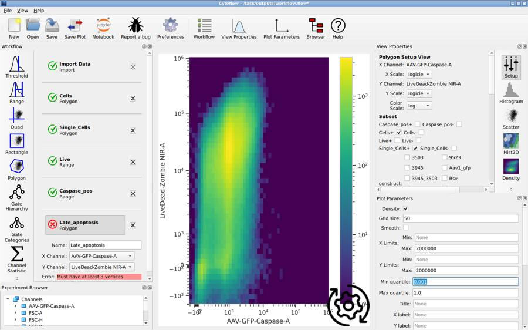
text(await tools.exec_command({cmd:"sleep 8\ncu screenshot /tmp/screen.png","max_output_tokens":1000}));
image((await tools.view_image({path:"/tmp/screen.png"})).image_url);
Script completed Wall time 8.1 seconds Output:
{"chunk_id":"4c9275","wall_time_seconds":7.914143633,"exit_code":0,"original_token_count":4,"output":"/tmp/screen.png\n"}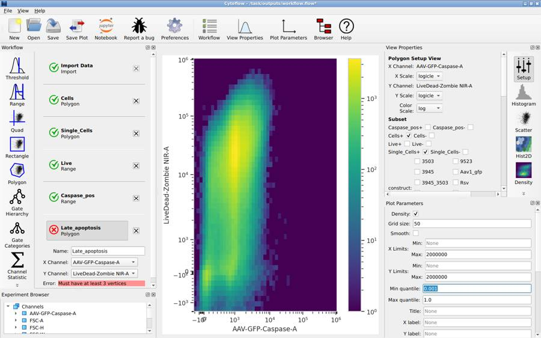
text(await tools.exec_command({cmd:"cu click 1255 677\ncu key Return\ncu click 1255 737\ncu key Return\nsleep 5\ncu screenshot /tmp/screen.png","max_output_tokens":1000}));
image((await tools.view_image({path:"/tmp/screen.png"})).image_url);
Script completed Wall time 5.3 seconds Output:
{"chunk_id":"c98887","wall_time_seconds":5.157234902,"exit_code":0,"original_token_count":4,"output":"/tmp/screen.png\n"}text(await tools.exec_command({cmd:"cu click 1106 569\nsleep 8\ncu screenshot /tmp/screen.png","max_output_tokens":1000}));
image((await tools.view_image({path:"/tmp/screen.png"})).image_url);
Script completed Wall time 8.2 seconds Output:
{"chunk_id":"c18988","wall_time_seconds":8.023837617,"exit_code":0,"original_token_count":4,"output":"/tmp/screen.png\n"}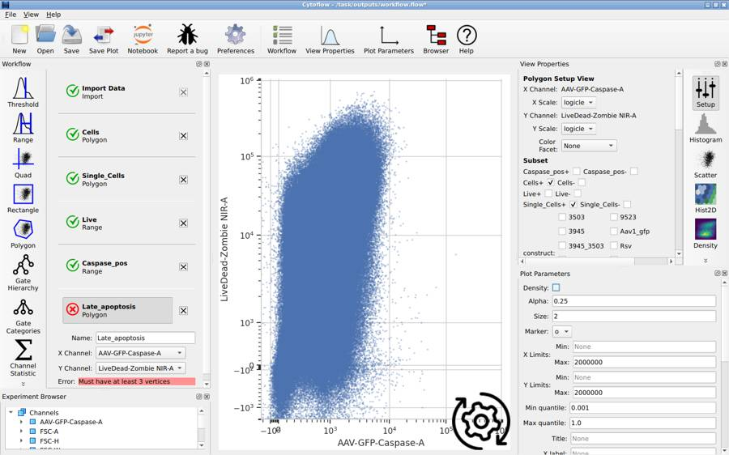
text(await tools.exec_command({cmd:"sleep 6\ncu screenshot /tmp/screen.png","max_output_tokens":1000}));
image((await tools.view_image({path:"/tmp/screen.png"})).image_url);
Script completed Wall time 6.1 seconds Output:
{"chunk_id":"c535c8","wall_time_seconds":5.919673734,"exit_code":0,"original_token_count":4,"output":"/tmp/screen.png\n"}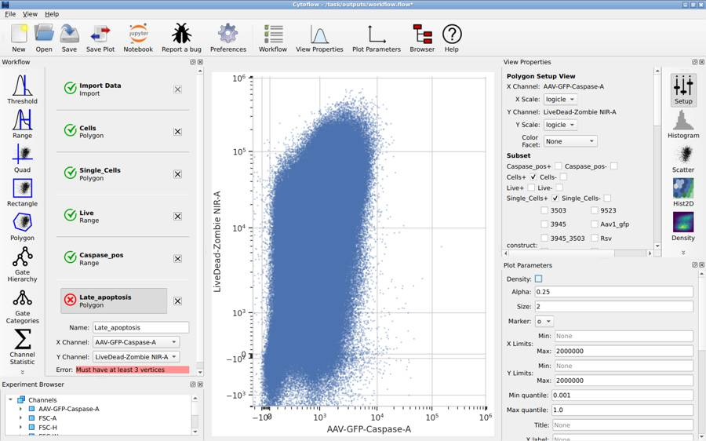
text(await tools.exec_command({cmd:"cu click 615 557\ncu click 615 158\ncu click 990 158\ncu click 990 557\ncu click 615 557\nsleep 6\ncu key ctrl+s\ncu screenshot /task/outputs/work/late_reference.png\nsed -n '1,45p' /task/outputs/workflow.flow","max_output_tokens":2500}));
image((await tools.view_image({path:"/task/outputs/work/late_reference.png"})).image_url);
Script completed Wall time 6.7 seconds Output:
{"chunk_id":"1f95b8","wall_time_seconds":6.48032694,"exit_code":0,"original_token_count":184,"output":"/task/outputs/work/late_reference.png\n- !workflow-item;5\n channels:\n - AAV-GFP-Caspase-A\n - FSC-A\n - FSC-H\n - FSC-W\n - LiveDead-Zombie NIR-A\n - SSC-A\n - SSC-H\n - SSC-W\n - Time\n conditions:\n construct: !pandas-series;3\n data:\n - '3503'\n - '3945'\n - '3945_3503'\n - '8790'\n - '8820'\n - '9421'\n - '9523'\n - AAV1_GFP\n - RSV\n - hSyn\n - no_virus\n dtype: object\n index: !pandas-index;1\n dtype: int64\n name: null\n values:\n - 5\n - 3\n - 8\n - 7\n - 6\n - 4\n - 2\n - 9\n - 0\n - 1\n - 10\n control_type: !pandas-series;3\n data:\n - caspase_dye_only\n - none\n"}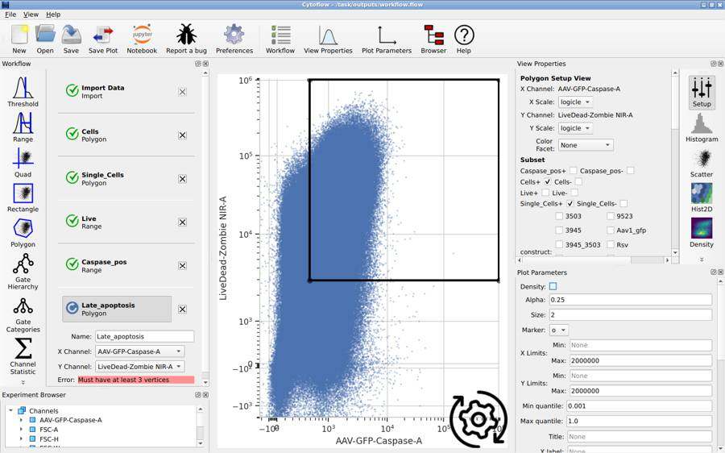
text(await tools.exec_command({cmd:"rg -n -A25 'operation: !|name: Late_apoptosis|vertices:' /task/outputs/workflow.flow","max_output_tokens":3000}));
text(await tools.clock__curr_time({}));
Script completed
Wall time 0.0 seconds
Output:
{"chunk_id":"e52aef","wall_time_seconds":0.00000464,"exit_code":0,"original_token_count":782,"output":"323: operation: !import;4\n324- channels_list: []\n325- conditions:\n326- construct: category\n327- control_type: category\n328- is_control: category\n329- replicate: category\n330- stain: category\n331- well: category\n332- events: null\n333- ignore_v_bool: false\n334- name_metadata: null\n335- tubes:\n336- - !tube;1\n337- conditions:\n338- construct: RSV\n339- control_type: none\n340- is_control: 'no'\n341- replicate: '1'\n342- stain: zombie_caspase\n343- well: A1\n344- file: /task/inputs/raw/Caspase_KO_RNAswap-rep2_caspase_Group_A1.fcs\n345- - !tube;1\n346- conditions:\n347- construct: RSV\n348- control_type: none\n--\n1169: vertices:\n1170- - !!python/tuple\n1171- - 62957.478344668205\n1172- - 25902.340666638043\n1173- - !!python/tuple\n1174- - 62957.478344668205\n1175- - 94058.10676630038\n1176- - !!python/tuple\n1177- - 92070.29393203108\n1178- - 348969.71749411867\n1179- - !!python/tuple\n1180- - 187177.78860234417\n1181- - 1078543.8607490277\n1182- - !!python/tuple\n1183- - 1061901.0434650257\n1184- - 1078543.8607490277\n1185- - !!python/tuple\n1186- - 1061901.0434650257\n1187- - 41117.45086420892\n1188- - !!python/tuple\n1189- - 209785.74454627524\n1190- - 20229.945372076203\n1191- - !!python/tuple\n1192- - 89766.58755992416\n1193- - 20229.945372076203\n1194- xchannel: FSC-A\n--\n1988: vertices:\n1989- - !!python/tuple\n1990- - 14151.38994695787\n1991- - 20251.367426211014\n1992- - !!python/tuple\n1993- - 14151.38994695787\n1994- - 28219.80722237037\n1995- - !!python/tuple\n1996- - 533719.6610108132\n1997- - 953375.0689869898\n1998- - !!python/tuple\n1999- - 1063123.3951108425\n2000- - 953375.0689869898\n2001- - !!python/tuple\n2002- - 1063123.3951108425\n2003- - 751428.956515407\n2004- - !!python/tuple\n2005- - 30348.292818096652\n2006- - 21300.14534171226\n2007- xchannel: SSC-H\n2008- xscale: log\n2009- ychannel: SSC-A\n2010- yscale: log\n2011- plot_params: !polygon-params;1\n2012- alpha: 0.25\n2013- col_wrap: null\n--\n4314: name: Late_apoptosis\n4315: vertices:\n4316- - !!python/tuple\n4317- - 486.8675765903256\n4318- - 2911.0856357102807\n4319- - !!python/tuple\n4320- - 486.8675765903256\n4321- - 1011387.450222352\n4322- - !!python/tuple\n4323- - 1020835.8548010138\n4324- - 1011387.450222352\n4325- - !!python/tuple\n4326- - 1020835.8548010138\n4327- - 2911.0856357102807\n4328- xchannel: AAV-GFP-Caspase-A\n4329- xscale: logicle\n4330- ychannel: LiveDead-Zombie NIR-A\n4331- yscale: logicle\n4332- plot_params: !polygon-params;1\n4333- alpha: 0.25\n4334- col_wrap: null\n4335- density: false\n4336- despine: true\n4337- gridsize: 50\n4338- huelabel: ''\n4339- legend: true\n4340- marker: o\n"}
{"current_time":"2026-11-05 00:20:40 UTC"}text(await tools.exec_command({cmd:"cu click 232 525\nsleep 0.5\ncu screenshot /tmp/screen.png","max_output_tokens":1000}));
image((await tools.view_image({path:"/tmp/screen.png"})).image_url);
Script completed Wall time 0.7 seconds Output:
{"chunk_id":"132af2","wall_time_seconds":0.519242434,"exit_code":0,"original_token_count":4,"output":"/tmp/screen.png\n"}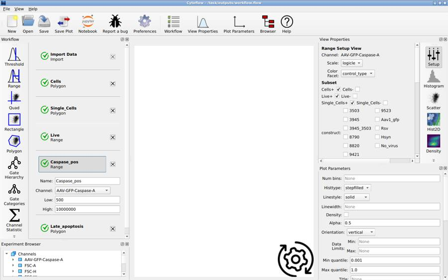
text(await tools.exec_command({cmd:"cu click 262 642\ncu key ctrl+a\ncu type '486.8675765903256'\ncu key Tab\ncu key ctrl+s\ncu click 237 732\ncu click 48 691\nsleep 1\ncu screenshot /tmp/screen.png","max_output_tokens":1000}));
image((await tools.view_image({path:"/tmp/screen.png"})).image_url);
Script completed Wall time 1.9 seconds Output:
{"chunk_id":"dcbbf7","wall_time_seconds":1.733900868,"exit_code":0,"original_token_count":4,"output":"/tmp/screen.png\n"}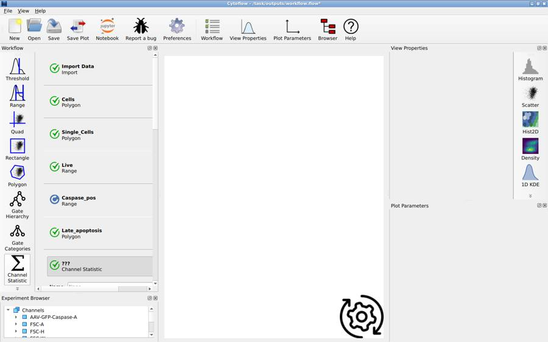
text(await tools.exec_command({cmd:"cu scroll 310 700 down 6\nsleep 0.6\ncu screenshot /tmp/screen.png","max_output_tokens":1000}));
image((await tools.view_image({path:"/tmp/screen.png"})).image_url);
Script completed Wall time 1.3 seconds Output:
{"chunk_id":"bd89e8","wall_time_seconds":1.114308216,"exit_code":0,"original_token_count":4,"output":"/tmp/screen.png\n"}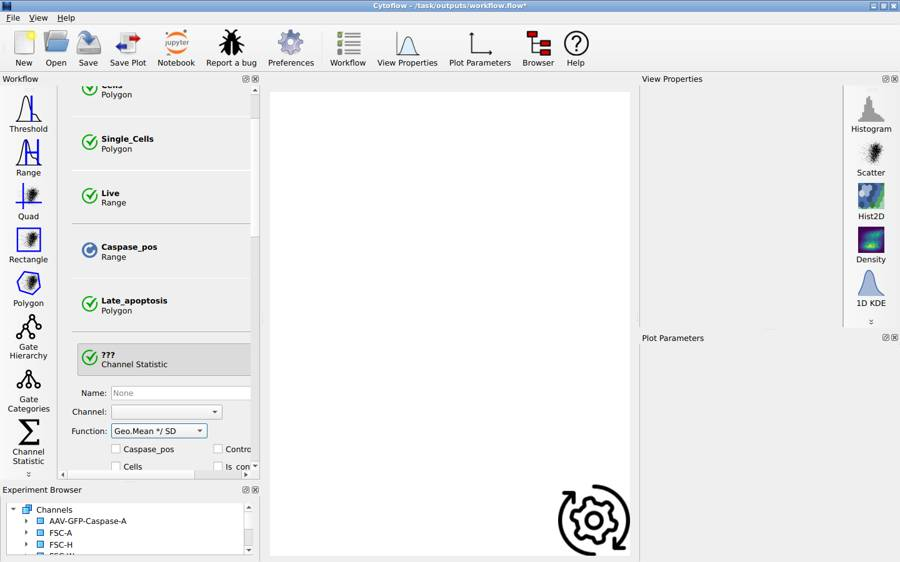
text(await tools.exec_command({cmd:"cu click 408 783\ncu drag 420 450 495 450\ncu scroll 330 701 down 5\nsleep 0.5\ncu screenshot /tmp/screen.png","max_output_tokens":1000}));
image((await tools.view_image({path:"/tmp/screen.png"})).image_url);
Script completed Wall time 1.2 seconds Output:
{"chunk_id":"c93525","wall_time_seconds":1.053685191,"exit_code":0,"original_token_count":4,"output":"/tmp/screen.png\n"}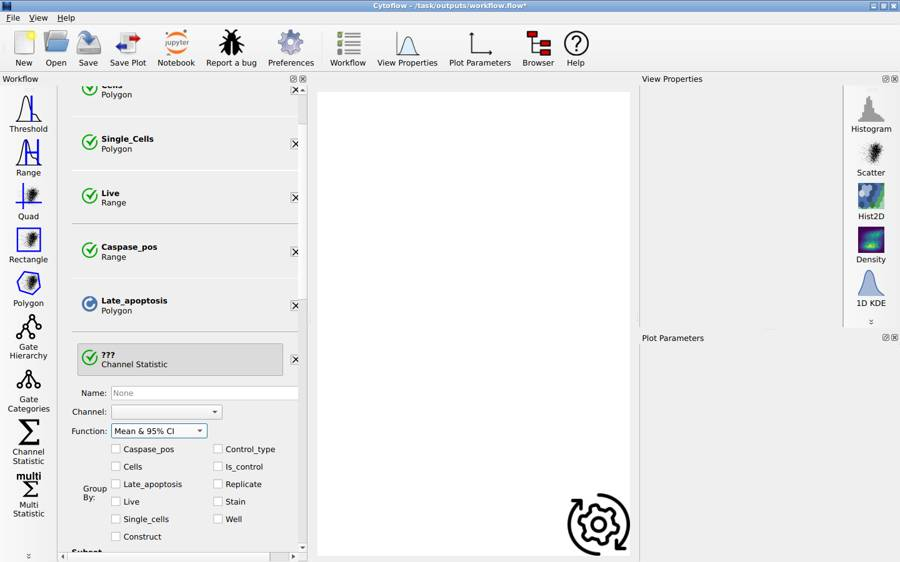
text(await tools.exec_command({cmd:"cu click 277 630\ncu key ctrl+a\ncu type 'N_All_events'\ncu click 343 660\ncu key Home\ncu key Down\ncu key Return\ncu click 320 689\nsleep 0.5\ncu screenshot /tmp/screen.png","max_output_tokens":1000}));
image((await tools.view_image({path:"/tmp/screen.png"})).image_url);
Script completed Wall time 1.3 seconds Output:
{"chunk_id":"047931","wall_time_seconds":1.115588725,"exit_code":0,"original_token_count":4,"output":"/tmp/screen.png\n"}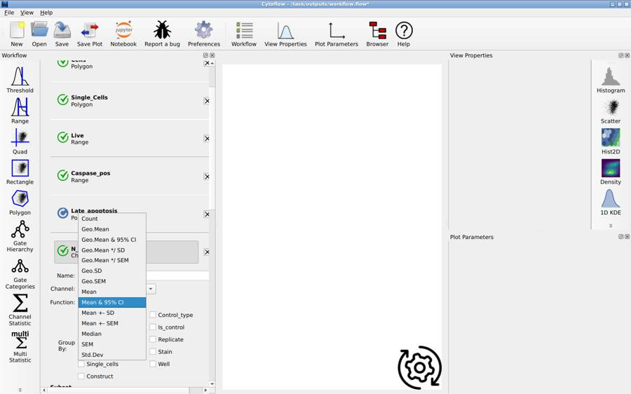
text(await tools.exec_command({cmd:"cu key Home\ncu key Return\ncu click 348 830\ncu scroll 1395 468 down 7\nsleep 1\ncu screenshot /tmp/screen.png","max_output_tokens":1000}));
image((await tools.view_image({path:"/tmp/screen.png"})).image_url);
Script completed Wall time 1.9 seconds Output:
{"chunk_id":"495ecd","wall_time_seconds":1.75061237,"exit_code":0,"original_token_count":4,"output":"/tmp/screen.png\n"}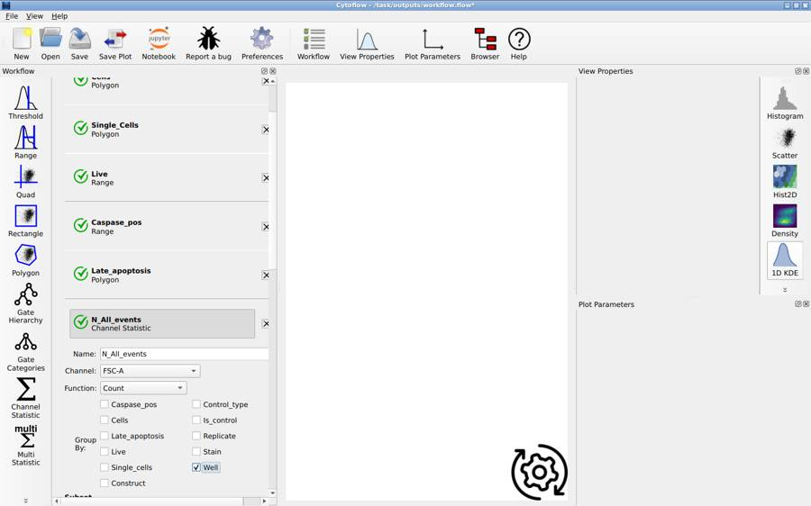
text(await tools.exec_command({cmd:"cu click 1394 514\ncu click 1394 514\ncu click 1394 514\ncu click 1394 514\ncu click 1394 514\ncu click 1394 514\nsleep 1\ncu screenshot /tmp/screen.png","max_output_tokens":1000}));
image((await tools.view_image({path:"/tmp/screen.png"})).image_url);
Script completed Wall time 1.7 seconds Output:
{"chunk_id":"ceb347","wall_time_seconds":1.551694124,"exit_code":0,"original_token_count":4,"output":"/tmp/screen.png\n"}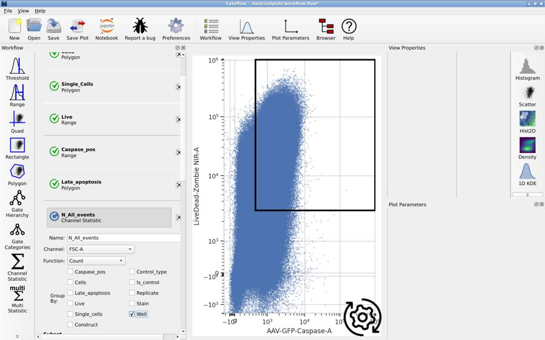
text(await tools.exec_command({cmd:"cu move 1393 515\nsleep 2\ncu screenshot /tmp/screen.png","max_output_tokens":1000}));
image((await tools.view_image({path:"/tmp/screen.png"})).image_url);
Script completed Wall time 2.1 seconds Output:
{"chunk_id":"f9cfd1","wall_time_seconds":1.92000477,"exit_code":0,"original_token_count":4,"output":"/tmp/screen.png\n"}text(await tools.exec_command({cmd:"cu click 1430 540\nsleep 0.5\ncu screenshot /tmp/screen.png","max_output_tokens":1000}));
image((await tools.view_image({path:"/tmp/screen.png"})).image_url);
Script completed Wall time 0.7 seconds Output:
{"chunk_id":"bf0ee5","wall_time_seconds":0.520825453,"exit_code":0,"original_token_count":4,"output":"/tmp/screen.png\n"}text(await tools.exec_command({cmd:"cu click 1393 890\nsleep 0.5\ncu screenshot /tmp/screen.png","max_output_tokens":1000}));
image((await tools.view_image({path:"/tmp/screen.png"})).image_url);
Script completed Wall time 0.7 seconds Output:
{"chunk_id":"2e1163","wall_time_seconds":0.521564772,"exit_code":0,"original_token_count":4,"output":"/tmp/screen.png\n"}text(await tools.exec_command({cmd:"cu click 1401 454\nsleep 1\ncu screenshot /tmp/screen.png","max_output_tokens":1000}));
image((await tools.view_image({path:"/tmp/screen.png"})).image_url);
Script completed Wall time 1.2 seconds Output:
{"chunk_id":"8b5e06","wall_time_seconds":1.017311186,"exit_code":0,"original_token_count":4,"output":"/tmp/screen.png\n"}text(await tools.exec_command({cmd:"cu click 1208 182\ncu key Home\ncu key Return\ncu click 1185 212\ncu key Home\ncu key Return\ncu click 1166 241\ncu key Home\ncu key Return\nsleep 2\ncu screenshot /tmp/screen.png","max_output_tokens":1000}));
image((await tools.view_image({path:"/tmp/screen.png"})).image_url);
Script completed Wall time 2.5 seconds Output:
{"chunk_id":"194bda","wall_time_seconds":2.3233132420000002,"exit_code":0,"original_token_count":4,"output":"/tmp/screen.png\n"}text(await tools.exec_command({cmd:"cu click 1209 181\nsleep 0.5\ncu screenshot /tmp/screen.png","max_output_tokens":1000}));
image((await tools.view_image({path:"/tmp/screen.png"})).image_url);
Script completed Wall time 0.7 seconds Output:
{"chunk_id":"cd6f48","wall_time_seconds":0.518598983,"exit_code":0,"original_token_count":4,"output":"/tmp/screen.png\n"}text(await tools.exec_command({cmd:"cu click 1170 205\ncu click 1184 211\ncu key Home\ncu key Return\ncu click 1210 241\ncu key Home\ncu key Return\nsleep 1\ncu screenshot /tmp/screen.png","max_output_tokens":1000}));
image((await tools.view_image({path:"/tmp/screen.png"})).image_url);
Script completed Wall time 1.5 seconds Output:
{"chunk_id":"8de246","wall_time_seconds":1.293251361,"exit_code":0,"original_token_count":4,"output":"/tmp/screen.png\n"}text(await tools.exec_command({cmd:"cu click 1164 241\ncu key Home\ncu key Return\nsleep 1\ncu click 1224 392\nsleep 0.5\ncu screenshot /tmp/screen.png","max_output_tokens":1000}));
image((await tools.view_image({path:"/tmp/screen.png"})).image_url);
Script completed Wall time 1.8 seconds Output:
{"chunk_id":"5bea3b","wall_time_seconds":1.662009838,"exit_code":0,"original_token_count":4,"output":"/tmp/screen.png\n"}text(await tools.exec_command({cmd:"cu paste '/task/outputs/work/All_events.csv'\ncu key Return\nsleep 1\ncu key ctrl+s\ncu screenshot /tmp/screen.png\ncat /task/outputs/work/All_events.csv","max_output_tokens":2500}));
image((await tools.view_image({path:"/tmp/screen.png"})).image_url);
Script completed Wall time 2.5 seconds Output:
{"chunk_id":"b922ac","wall_time_seconds":2.293289164,"exit_code":1,"original_token_count":21,"output":"/tmp/screen.png\ncat: /task/outputs/work/All_events.csv: No such file or directory\n"}text(await tools.exec_command({cmd:"tail -60 /task/outputs/work/cytoflow.log","max_output_tokens":4000}));
text(await tools.exec_command({cmd:"cu click 918 476\ncu key ctrl+s\nsleep 1\ncu screenshot /tmp/screen.png","max_output_tokens":1000}));
image((await tools.view_image({path:"/tmp/screen.png"})).image_url);
Script completed Wall time 1.3 seconds Output:
{"chunk_id":"89fe1e","wall_time_seconds":0.00000406,"exit_code":0,"original_token_count":216,"output":"QStandardPaths: XDG_RUNTIME_DIR not set, defaulting to '/tmp/runtime-root'\nQXcbIntegration: Cannot create platform OpenGL context, neither GLX nor EGL are enabled\ntraits/etsconfig/etsconfig.py:425: UserWarning: Environment variable \"HOME\" not set, setting home directory to /tmp\n[7677:7677:1105/001029.187522:ERROR:zygote_host_impl_linux.cc(90)] Running as root without --no-sandbox is not supported. See https://crbug.com/638180.\nQStandardPaths: XDG_RUNTIME_DIR not set, defaulting to '/tmp/runtime-root'\nQXcbIntegration: Cannot create platform OpenGL context, neither GLX nor EGL are enabled\ntraits/etsconfig/etsconfig.py:425: UserWarning: Environment variable \"HOME\" not set, setting home directory to /tmp\n[7939:7939:1105/001139.332925:ERROR:zygote_host_impl_linux.cc(90)] Running as root without --no-sandbox is not supported. See https://crbug.com/638180.\n"}{"chunk_id":"da8857","wall_time_seconds":1.047715593,"exit_code":0,"original_token_count":4,"output":"/tmp/screen.png\n"}text(await tools.exec_command({cmd:"ls -ld /task/outputs /task/outputs/work\nls -l /task/outputs/workflow.flow\nps -eo pid,uid,comm | rg cytoflow\nchmod 777 /task/outputs/work","max_output_tokens":1000}));
text(await tools.exec_command({cmd:"cu click 1212 391\nsleep 0.5\ncu paste '/task/outputs/work/All_events.csv'\ncu key Return\nsleep 1\ncu screenshot /tmp/screen.png","max_output_tokens":1000}));
image((await tools.view_image({path:"/tmp/screen.png"})).image_url);
Script completed Wall time 3.1 seconds Output:
{"chunk_id":"f8cd06","wall_time_seconds":0.00000481,"exit_code":0,"original_token_count":102,"output":"drwxrwsrwx 3 agent task 4096 Nov 5 00:09 /task/outputs\ndrwxr-sr-x 2 root task 4096 Nov 5 00:20 /task/outputs/work\n-rw-rw-r-- 1 cfapp task 106597 Nov 5 00:23 /task/outputs/workflow.flow\n 836 1002 start-cytoflow\n 860 1002 cytoflow\n 7684 1002 cytoflow\n 7705 0 cytoflow\n 7707 0 cytoflow\n 7916 1002 cytoflow\n 7927 1002 cytoflow\n 7929 1002 cytoflow\n 7964 0 cytoflow\n 7966 0 cytoflow\n"}{"chunk_id":"4545ed","wall_time_seconds":2.8680706049999998,"exit_code":0,"original_token_count":4,"output":"/tmp/screen.png\n"}text(await tools.exec_command({cmd:"cat /task/outputs/work/All_events.csv","max_output_tokens":2000}));
Script completed
Wall time 0.0 seconds
Output:
{"chunk_id":"9477cf","wall_time_seconds":0.00000425,"exit_code":0,"original_token_count":174,"output":"well = A1,183353.0\nwell = A10,335810.0\nwell = A11,228556.0\nwell = A12,330844.0\nwell = A2,221770.0\nwell = A3,222545.0\nwell = A4,160440.0\nwell = A5,169911.0\nwell = A6,230857.0\nwell = A7,282723.0\nwell = A8,236938.0\nwell = A9,241833.0\nwell = B1,254845.0\nwell = B10,187472.0\nwell = B11,271438.0\nwell = B12,286933.0\nwell = B2,319449.0\nwell = B3,275473.0\nwell = B4,219859.0\nwell = B5,225148.0\nwell = B6,369018.0\nwell = B7,186946.0\nwell = B8,412353.0\nwell = B9,219409.0\nwell = C1,250794.0\nwell = C10,276619.0\nwell = C11,364071.0\nwell = C12,307442.0\nwell = C2,305451.0\nwell = C3,418796.0\nwell = C4,230134.0\nwell = C5,206789.0\nwell = C6,189779.0\nwell = C7,317865.0\nwell = C8,214991.0\nwell = C9,222410.0\n"}text(await tools.exec_command({cmd:"cu click 48 691\ncu scroll 483 840 down 14\nsleep 1\ncu screenshot /tmp/screen.png","max_output_tokens":1000}));
image((await tools.view_image({path:"/tmp/screen.png"})).image_url);
Script completed Wall time 2.6 seconds Output:
{"chunk_id":"c1c38f","wall_time_seconds":2.426906609,"exit_code":0,"original_token_count":4,"output":"/tmp/screen.png\n"}text(await tools.exec_command({cmd:"cu scroll 483 400 up 9\nsleep 0.5\ncu screenshot /tmp/screen.png","max_output_tokens":1000}));
image((await tools.view_image({path:"/tmp/screen.png"})).image_url);
Script completed Wall time 1.5 seconds Output:
{"chunk_id":"3b2332","wall_time_seconds":1.32033939,"exit_code":0,"original_token_count":4,"output":"/tmp/screen.png\n"}text(await tools.exec_command({cmd:"cu click 284 403\ncu key ctrl+a\ncu type 'N_Cells'\ncu click 342 433\ncu key Home\ncu key Down\ncu key Return\ncu click 319 464\ncu key Home\ncu key Return\ncu click 348 605\ncu scroll 483 800 down 15\nsleep 1\ncu screenshot /tmp/screen.png","max_output_tokens":1000}));
image((await tools.view_image({path:"/tmp/screen.png"})).image_url);
Script completed Wall time 3.3 seconds Output:
{"chunk_id":"a5b7ef","wall_time_seconds":3.131905805,"exit_code":0,"original_token_count":4,"output":"/tmp/screen.png\n"}text(await tools.exec_command({cmd:"cu click 167 835\ncu click 1394 890\ncu click 1400 453\ncu click 1208 182\ncu key End\ncu key Return\ncu click 1185 211\ncu key Home\ncu key Return\ncu click 1165 241\ncu key Home\ncu key Return\nsleep 3\ncu screenshot /tmp/screen.png","max_output_tokens":1000}));
image((await tools.view_image({path:"/tmp/screen.png"})).image_url);
Script completed Wall time 3.8 seconds Output:
{"chunk_id":"669385","wall_time_seconds":3.636996214,"exit_code":0,"original_token_count":4,"output":"/tmp/screen.png\n"}text(await tools.exec_command({cmd:"cu scroll 483 300 up 18\nsleep 1\ncu screenshot /tmp/screen.png","max_output_tokens":1000}));
image((await tools.view_image({path:"/tmp/screen.png"})).image_url);
Script completed Wall time 2.9 seconds Output:
{"chunk_id":"bb0614","wall_time_seconds":2.721648246,"exit_code":0,"original_token_count":4,"output":"/tmp/screen.png\n"}text(await tools.exec_command({cmd:"cu scroll 483 800 down 6\nsleep 0.5\ncu screenshot /tmp/screen.png","max_output_tokens":1000}));
image((await tools.view_image({path:"/tmp/screen.png"})).image_url);
Script completed Wall time 1.2 seconds Output:
{"chunk_id":"35a8ff","wall_time_seconds":1.0190171160000001,"exit_code":0,"original_token_count":4,"output":"/tmp/screen.png\n"}text(await tools.exec_command({cmd:"cu scroll 483 840 down 22\nsleep 0.5\ncu screenshot /tmp/screen.png","max_output_tokens":1000}));
image((await tools.view_image({path:"/tmp/screen.png"})).image_url);
Script completed Wall time 2.8 seconds Output:
{"chunk_id":"b24391","wall_time_seconds":2.6201237280000003,"exit_code":0,"original_token_count":4,"output":"/tmp/screen.png\n"}text(await tools.exec_command({cmd:"cu click 168 858\ncu click 1394 890\nsleep 1\ncu screenshot /tmp/screen.png","max_output_tokens":1000}));
image((await tools.view_image({path:"/tmp/screen.png"})).image_url);
Script completed Wall time 1.3 seconds Output:
{"chunk_id":"e8618c","wall_time_seconds":1.12824526,"exit_code":0,"original_token_count":4,"output":"/tmp/screen.png\n"}text(await tools.exec_command({cmd:"cu click 1402 455\nsleep 0.5\ncu click 1208 181\ncu key End\ncu key Return\nsleep 0.5\ncu click 1185 211\ncu key Home\ncu key Return\ncu click 1164 241\ncu key Home\ncu key Return\nsleep 5\ncu screenshot /tmp/screen.png","max_output_tokens":1000}));
image((await tools.view_image({path:"/tmp/screen.png"})).image_url);
Script completed Wall time 6.6 seconds Output:
{"chunk_id":"59af0d","wall_time_seconds":6.436411298,"exit_code":0,"original_token_count":4,"output":"/tmp/screen.png\n"}text(await tools.exec_command({cmd:"cu click 1219 391\nsleep 0.4\ncu paste '/task/outputs/work/Cells.csv'\ncu key Return\nsleep 0.5\ncu key ctrl+s\ncu click 47 692\ncu scroll 483 800 down 30\nsleep 0.5\ncu screenshot /tmp/screen.png","max_output_tokens":1000}));
image((await tools.view_image({path:"/tmp/screen.png"})).image_url);
Script completed Wall time 6.1 seconds Output:
{"chunk_id":"d64f96","wall_time_seconds":5.911279747,"exit_code":0,"original_token_count":4,"output":"/tmp/screen.png\n"}text(await tools.exec_command({cmd:"cu click 213 539\ncu click 168 835\ncu scroll 483 300 up 13\nsleep 0.5\ncu screenshot /tmp/screen.png","max_output_tokens":1000}));
image((await tools.view_image({path:"/tmp/screen.png"})).image_url);
Script completed Wall time 2.1 seconds Output:
{"chunk_id":"206e66","wall_time_seconds":1.932792825,"exit_code":0,"original_token_count":4,"output":"/tmp/screen.png\n"}text(await tools.exec_command({cmd:"cu click 275 383\ncu key ctrl+a\ncu type 'N_Single_Cells'\ncu click 348 585\ncu click 343 413\ncu key Home\ncu key Down\ncu key Return\ncu click 319 444\ncu key Home\ncu key Return\ncu click 1394 890\nsleep 1\ncu click 1400 455\nsleep 1\ncu click 1208 181\ncu key End\ncu key Return\nsleep 0.5\ncu click 1185 211\ncu key Home\ncu key Return\ncu click 1164 241\ncu key Home\ncu key Return\nsleep 6\ncu screenshot /tmp/screen.png","yield_time_ms":15000,"max_output_tokens":1000}));
image((await tools.view_image({path:"/tmp/screen.png"})).image_url);
Script completed Wall time 10.1 seconds Output:
{"chunk_id":"4d8270","wall_time_seconds":9.934668551,"exit_code":0,"original_token_count":4,"output":"/tmp/screen.png\n"}text(await tools.exec_command({cmd:"sleep 5\ncu click 1208 181\ncu key End\ncu key Return\nsleep 2\ncu screenshot /tmp/screen.png","max_output_tokens":1000}));
image((await tools.view_image({path:"/tmp/screen.png"})).image_url);
Script completed Wall time 7.2 seconds Output:
{"chunk_id":"0fa6cf","wall_time_seconds":7.05472467,"exit_code":0,"original_token_count":4,"output":"/tmp/screen.png\n"}text(await tools.exec_command({cmd:"cu click 1219 391\nsleep 0.4\ncu paste '/task/outputs/work/Single_Cells.csv'\ncu key Return\nsleep 0.5\ncu click 47 692\ncu scroll 483 800 down 35\nsleep 0.5\ncu click 213 539\ncu click 168 835\ncu scroll 483 300 up 13\nsleep 0.5\ncu screenshot /tmp/screen.png","max_output_tokens":1000}));
image((await tools.view_image({path:"/tmp/screen.png"})).image_url);
Script completed Wall time 8.6 seconds Output:
{"chunk_id":"6a178f","wall_time_seconds":8.409235517,"exit_code":0,"original_token_count":4,"output":"/tmp/screen.png\n"}text(await tools.exec_command({cmd:"cu click 164 716\ncu click 275 383\ncu key ctrl+a\ncu type 'N_Live'\ncu click 348 585\ncu click 343 413\ncu key Home\ncu key Down\ncu key Return\ncu click 319 444\ncu key Home\ncu key Return\ncu click 1394 890\nsleep 1\ncu click 1400 455\nsleep 12\ncu click 1208 181\ncu key End\ncu key Return\nsleep 0.5\ncu click 1185 211\ncu key Home\ncu key Return\ncu click 1164 241\ncu key Home\ncu key Return\nsleep 2\ncu screenshot /tmp/screen.png","yield_time_ms":20000,"max_output_tokens":1000}));
image((await tools.view_image({path:"/tmp/screen.png"})).image_url);
Script completed Wall time 17.0 seconds Output:
{"chunk_id":"065786","wall_time_seconds":16.8476728,"exit_code":0,"original_token_count":4,"output":"/tmp/screen.png\n"}text(await tools.exec_command({cmd:"cu click 1220 181\ncu key Home\ncu key Down\ncu key Down\ncu key Down\ncu key Return\nsleep 1\ncu screenshot /tmp/screen.png","max_output_tokens":1000}));
image((await tools.view_image({path:"/tmp/screen.png"})).image_url);
Script completed Wall time 1.3 seconds Output:
{"chunk_id":"362f30","wall_time_seconds":1.098899742,"exit_code":0,"original_token_count":4,"output":"/tmp/screen.png\n"}text(await tools.exec_command({cmd:"cu click 1219 391\nsleep 0.4\ncu paste '/task/outputs/work/Live.csv'\ncu key Return\nsleep 0.5\ncu click 47 692\ncu scroll 483 800 down 35\nsleep 0.5\ncu click 213 539\ncu click 168 835\ncu click 220 813\ncu scroll 483 300 up 13\nsleep 0.5\ncu click 164 716\ncu click 275 383\ncu key ctrl+a\ncu type 'N_Caspase_pos'\ncu click 348 585\ncu click 343 413\ncu key Home\ncu key Down\ncu key Return\ncu click 319 444\ncu key Home\ncu key Return\ncu click 1394 890\nsleep 1\ncu click 1400 455\nsleep 12\ncu screenshot /tmp/screen.png","yield_time_ms":30000,"max_output_tokens":1000}));
image((await tools.view_image({path:"/tmp/screen.png"})).image_url);
Script completed Wall time 22.9 seconds Output:
{"chunk_id":"392652","wall_time_seconds":22.712824316,"exit_code":0,"original_token_count":4,"output":"/tmp/screen.png\n"}text(await tools.exec_command({cmd:"cu click 1226 181\ncu key Home\ncu key Down\ncu key Down\ncu key Return\nsleep 0.5\ncu click 1185 211\ncu key Home\ncu key Return\ncu click 1164 241\ncu key Home\ncu key Return\nsleep 2\ncu screenshot /tmp/screen.png","max_output_tokens":1000}));
image((await tools.view_image({path:"/tmp/screen.png"})).image_url);
Script completed Wall time 3.0 seconds Output:
{"chunk_id":"710e5b","wall_time_seconds":2.867143065,"exit_code":0,"original_token_count":4,"output":"/tmp/screen.png\n"}text(await tools.exec_command({cmd:"cu click 1219 391\nsleep 0.4\ncu paste '/task/outputs/work/Caspase_pos.csv'\ncu key Return\nsleep 0.5\ncu click 47 692\ncu scroll 483 800 down 35\nsleep 0.5\ncu click 213 539\ncu click 168 835\ncu scroll 483 300 up 13\nsleep 0.5\ncu click 232 823\ncu click 275 383\ncu key ctrl+a\ncu type 'N_Late_apoptosis'\ncu click 348 585\ncu click 343 413\ncu key Home\ncu key Down\ncu key Return\ncu click 319 444\ncu key Home\ncu key Return\ncu click 1394 890\nsleep 1\ncu click 1400 455\nsleep 12\ncu screenshot /tmp/screen.png","yield_time_ms":30000,"max_output_tokens":1000}));
image((await tools.view_image({path:"/tmp/screen.png"})).image_url);
Script completed Wall time 22.8 seconds Output:
{"chunk_id":"80cd87","wall_time_seconds":22.667826985,"exit_code":0,"original_token_count":4,"output":"/tmp/screen.png\n"}text(await tools.exec_command({cmd:"cu click 1241 181\ncu key Home\ncu key Down\ncu key Down\ncu key Down\ncu key Down\ncu key Return\nsleep 0.5\ncu click 1185 211\ncu key Home\ncu key Return\ncu click 1164 241\ncu key Home\ncu key Return\nsleep 2\ncu screenshot /tmp/screen.png","max_output_tokens":1000}));
image((await tools.view_image({path:"/tmp/screen.png"})).image_url);
Script completed Wall time 3.1 seconds Output:
{"chunk_id":"b80905","wall_time_seconds":2.887305827,"exit_code":0,"original_token_count":4,"output":"/tmp/screen.png\n"}text(await tools.exec_command({cmd:"cu click 1219 391\nsleep 0.4\ncu paste '/task/outputs/work/Late_apoptosis.csv'\ncu key Return\nsleep 0.5\ncu key ctrl+s\nsleep 0.5\npython - <<'PY'\nimport pandas as pd\nfrom pathlib import Path\np=Path('/task/outputs')\nlayout=pd.read_csv('/task/inputs/plate_layout.csv')\npops=['Cells','Single_Cells','Live','Caspase_pos','Late_apoptosis']\nparents=['All_events','Cells','Single_Cells','Live','Single_Cells']\ntables={}\nfor pop in ['All_events']+pops:\n df=pd.read_csv(p/'work'/f'{pop}.csv',header=None,names=['well','count'])\n df['well']=df.well.str.replace('well = ','',regex=False)\n assert len(df)==36 and df.well.nunique()==36\n assert (df['count']%1==0).all()\n tables[pop]=df.set_index('well')['count'].astype(int)\nrows=[]\nfor sample in layout.itertuples(index=False):\n for pop,parent in zip(pops,parents):\n n=int(tables[pop][sample.well]); d=int(tables[parent][sample.well])\n assert 0<=n<=d\n rows.append([sample.file,sample.well,pop,n,parent,100*n/d if d else 0.0])\nout=pd.DataFrame(rows,columns=['file','well','population','count','parent_population','pct_of_parent'])\nout.to_csv(p/'counts.csv',index=False,float_format='%.8f')\nwide=pd.DataFrame(tables).reindex(layout.well)\nwide.to_csv(p/'work'/'counts_wide.csv')\nprint(wide.to_string())\nprint('All-events sum:',tables['All_events'].sum(),'Rows:',len(out))\nPY","max_output_tokens":4000}));
Script completed
Wall time 2.9 seconds
Output:
{"chunk_id":"cd2add","wall_time_seconds":2.73616745,"exit_code":127,"original_token_count":12,"output":"/bin/bash: line 8: python: command not found\n"}text(await tools.exec_command({cmd:"python3 - <<'PY'\nimport pandas as pd\nfrom pathlib import Path\np=Path('/task/outputs'); layout=pd.read_csv('/task/inputs/plate_layout.csv')\npops=['Cells','Single_Cells','Live','Caspase_pos','Late_apoptosis']; parents=['All_events','Cells','Single_Cells','Live','Single_Cells']; tables={}\nfor pop in ['All_events']+pops:\n df=pd.read_csv(p/'work'/f'{pop}.csv',header=None,names=['well','count'])\n df['well']=df.well.str.replace('well = ','',regex=False)\n assert len(df)==36 and df.well.nunique()==36 and (df['count']%1==0).all()\n tables[pop]=df.set_index('well')['count'].astype(int)\nrows=[]\nfor sample in layout.itertuples(index=False):\n for pop,parent in zip(pops,parents):\n n=int(tables[pop][sample.well]); d=int(tables[parent][sample.well]); assert 0<=n<=d\n rows.append([sample.file,sample.well,pop,n,parent,100*n/d if d else 0.0])\nout=pd.DataFrame(rows,columns=['file','well','population','count','parent_population','pct_of_parent'])\nout.to_csv(p/'counts.csv',index=False,float_format='%.8f')\nwide=pd.DataFrame(tables).reindex(layout.well); wide.to_csv(p/'work'/'counts_wide.csv')\nprint(wide.to_string()); print('All-events sum:',tables['All_events'].sum(),'Rows:',len(out))\nPY","max_output_tokens":4000}));
text(await tools.exec_command({cmd:"cu click 1394 245\nsleep 1\ncu screenshot /tmp/screen.png","max_output_tokens":1000}));
image((await tools.view_image({path:"/tmp/screen.png"})).image_url);
Script completed Wall time 1.8 seconds Output:
{"chunk_id":"41b4ac","wall_time_seconds":0.394676986,"exit_code":0,"original_token_count":731,"output":" All_events Cells Single_Cells Live Caspase_pos Late_apoptosis\nwell \nA1 183353 123482 113585 2292 839 89214\nA2 221770 150078 133800 7583 2207 101016\nA3 222545 154040 143039 8115 3993 108365\nA4 160440 114253 104415 4485 1476 81728\nA5 169911 116963 107286 8015 3266 80020\nA6 230857 161272 147542 12157 3539 111707\nA7 282723 193061 168176 13581 3463 124932\nA8 236938 166501 146246 17952 6160 104346\nA9 241833 171010 152730 10196 2932 118106\nA10 335810 229315 204400 8842 2426 160202\nA11 228556 150707 136180 11070 4092 103177\nA12 330844 220060 196244 12197 4112 151060\nB1 254845 171353 151325 15350 4636 107835\nB2 319449 213032 185072 28534 12339 124425\nB3 275473 189709 166732 21455 8124 118641\nB4 219859 145345 131453 6430 2236 99579\nB5 225148 148864 134424 9885 3497 99771\nB6 369018 243778 215984 19121 8840 159129\nB7 186946 125480 116875 6043 2348 90730\nB8 412353 276851 245770 15698 7530 183857\nB9 219409 147813 134538 7041 2666 103724\nB10 187472 123856 114957 5107 1792 87991\nB11 271438 185118 168675 10758 4862 130017\nB12 286933 194386 177798 11119 5407 135087\nC1 250794 173420 149531 3568 783 109641\nC2 305451 215069 186969 9347 3393 145251\nC3 418796 289139 248272 21243 10322 179708\nC4 230134 158435 145652 2945 1416 116318\nC5 206789 143336 131842 3520 1806 105472\nC6 189779 129434 120243 1898 1088 99973\nC7 317865 207985 178702 32130 20108 112539\nC8 214991 136659 120206 9143 3510 88376\nC9 222410 144760 124817 18617 8580 83077\nC10 276619 187378 161157 161108 35676 10\nC11 364071 240131 197790 33186 1050 36265\nC12 307442 205978 176903 176816 141900 50\nAll-events sum: 9379064 Rows: 180\n"}{"chunk_id":"615038","wall_time_seconds":1.017184866,"exit_code":0,"original_token_count":4,"output":"/tmp/screen.png\n"}text(await tools.exec_command({cmd:"cu click 1245 371\ncu key End\ncu key Up\ncu key Return\ncu click 1244 481\ncu key Home\ncu key Down\ncu key Down\ncu key Down\ncu key Down\ncu key Down\ncu key Return\ncu click 1298 181\ncu key End\ncu key Return\ncu click 1298 241\ncu key Home\ncu key Down\ncu key Return\ncu click 1190 271\ncu key Home\ncu key Down\ncu key Return\ncu click 558 71\nsleep 12\ncu screenshot /tmp/screen.png","yield_time_ms":20000,"max_output_tokens":1000}));
image((await tools.view_image({path:"/tmp/screen.png"})).image_url);
Script completed Wall time 13.0 seconds Output:
{"chunk_id":"99c8f7","wall_time_seconds":12.830276924,"exit_code":0,"original_token_count":4,"output":"/tmp/screen.png\n"}text(await tools.exec_command({cmd:"sleep 12\ncu screenshot /tmp/screen.png","yield_time_ms":15000,"max_output_tokens":1000}));
image((await tools.view_image({path:"/tmp/screen.png"})).image_url);
Script completed Wall time 12.1 seconds Output:
{"chunk_id":"478d4e","wall_time_seconds":11.941699104,"exit_code":0,"original_token_count":4,"output":"/tmp/screen.png\n"}text(await tools.exec_command({cmd:"cu click 767 69\nsleep 0.5\ncu screenshot /tmp/screen.png","max_output_tokens":1000}));
image((await tools.view_image({path:"/tmp/screen.png"})).image_url);
Script completed Wall time 0.7 seconds Output:
{"chunk_id":"49de34","wall_time_seconds":0.543439664,"exit_code":0,"original_token_count":4,"output":"/tmp/screen.png\n"}text(await tools.exec_command({cmd:"cu click 1230 573\ncu key ctrl+a\ncu type '0.03'\ncu key Tab\ncu click 1230 603\ncu key ctrl+a\ncu type '0.5'\ncu key Tab\ncu click 1230 664\ncu key ctrl+a\ncu type '0'\ncu key Tab\ncu click 1230 694\ncu key ctrl+a\ncu type '45000'\ncu key Tab\ncu scroll 1430 820 down 7\nsleep 0.5\ncu screenshot /tmp/screen.png","max_output_tokens":1000}));
image((await tools.view_image({path:"/tmp/screen.png"})).image_url);
Script completed Wall time 2.3 seconds Output:
{"chunk_id":"ad95a5","wall_time_seconds":2.08749985,"exit_code":0,"original_token_count":4,"output":"/tmp/screen.png\n"}text(await tools.exec_command({cmd:"cu click 1250 597\ncu key ctrl+a\ncu type '3'\ncu key Tab\nsleep 12\ncu screenshot /task/outputs/work/qc_time_3503.png","yield_time_ms":20000,"max_output_tokens":1000}));
image((await tools.view_image({path:"/task/outputs/work/qc_time_3503.png"})).image_url);
Script completed Wall time 12.4 seconds Output:
{"chunk_id":"4dcfdf","wall_time_seconds":12.164902711,"exit_code":0,"original_token_count":9,"output":"/task/outputs/work/qc_time_3503.png\n"}text(await tools.exec_command({cmd:"cu click 161 140\nsleep 10\ncu screenshot /task/outputs/work/qc_time_3945.png","yield_time_ms":15000,"max_output_tokens":1000}));
image((await tools.view_image({path:"/task/outputs/work/qc_time_3945.png"})).image_url);
text(await tools.exec_command({cmd:"cu click 235 140\nsleep 10\ncu screenshot /task/outputs/work/qc_time_3945_3503.png","yield_time_ms":15000,"max_output_tokens":1000}));
image((await tools.view_image({path:"/task/outputs/work/qc_time_3945_3503.png"})).image_url);
Script completed Wall time 20.5 seconds Output:
{"chunk_id":"1aa59e","wall_time_seconds":10.084168208,"exit_code":0,"original_token_count":9,"output":"/task/outputs/work/qc_time_3945.png\n"}{"chunk_id":"7db95d","wall_time_seconds":10.061173248,"exit_code":0,"original_token_count":11,"output":"/task/outputs/work/qc_time_3945_3503.png\n"}text(await tools.exec_command({cmd:"cu click 312 140\nsleep 9\ncu screenshot /task/outputs/work/qc_time_8790.png","yield_time_ms":15000,"max_output_tokens":1000}));
image((await tools.view_image({path:"/task/outputs/work/qc_time_8790.png"})).image_url);
text(await tools.exec_command({cmd:"cu click 370 140\nsleep 9\ncu screenshot /task/outputs/work/qc_time_8820.png","yield_time_ms":15000,"max_output_tokens":1000}));
image((await tools.view_image({path:"/task/outputs/work/qc_time_8820.png"})).image_url);
Script completed Wall time 18.5 seconds Output:
{"chunk_id":"64d71f","wall_time_seconds":9.082744586,"exit_code":0,"original_token_count":9,"output":"/task/outputs/work/qc_time_8790.png\n"}{"chunk_id":"9c23f2","wall_time_seconds":9.086957164,"exit_code":0,"original_token_count":9,"output":"/task/outputs/work/qc_time_8820.png\n"}text(await tools.exec_command({cmd:"cu click 427 140\nsleep 9\ncu screenshot /task/outputs/work/qc_time_9421.png","yield_time_ms":15000,"max_output_tokens":1000}));
image((await tools.view_image({path:"/task/outputs/work/qc_time_9421.png"})).image_url);
text(await tools.exec_command({cmd:"cu click 485 140\nsleep 9\ncu screenshot /task/outputs/work/qc_time_9523.png","yield_time_ms":15000,"max_output_tokens":1000}));
image((await tools.view_image({path:"/task/outputs/work/qc_time_9523.png"})).image_url);
Script completed Wall time 18.5 seconds Output:
{"chunk_id":"d5c068","wall_time_seconds":9.090542183,"exit_code":0,"original_token_count":9,"output":"/task/outputs/work/qc_time_9421.png\n"}{"chunk_id":"650df7","wall_time_seconds":9.089992252,"exit_code":0,"original_token_count":9,"output":"/task/outputs/work/qc_time_9523.png\n"}text(await tools.exec_command({cmd:"cu click 558 140\nsleep 9\ncu screenshot /task/outputs/work/qc_time_GFP.png","yield_time_ms":15000,"max_output_tokens":1000}));
image((await tools.view_image({path:"/task/outputs/work/qc_time_GFP.png"})).image_url);
text(await tools.exec_command({cmd:"cu click 630 140\nsleep 9\ncu screenshot /task/outputs/work/qc_time_RSV.png","yield_time_ms":15000,"max_output_tokens":1000}));
image((await tools.view_image({path:"/task/outputs/work/qc_time_RSV.png"})).image_url);
Script completed Wall time 18.5 seconds Output:
{"chunk_id":"0f3a48","wall_time_seconds":9.084804515,"exit_code":0,"original_token_count":9,"output":"/task/outputs/work/qc_time_GFP.png\n"}{"chunk_id":"b15f89","wall_time_seconds":9.089246563,"exit_code":0,"original_token_count":9,"output":"/task/outputs/work/qc_time_RSV.png\n"}text(await tools.exec_command({cmd:"cu click 682 140\nsleep 9\ncu screenshot /task/outputs/work/qc_time_hSyn.png","yield_time_ms":15000,"max_output_tokens":1000}));
image((await tools.view_image({path:"/task/outputs/work/qc_time_hSyn.png"})).image_url);
text(await tools.exec_command({cmd:"cu click 751 140\nsleep 11\ncu screenshot /task/outputs/work/qc_time_no_virus.png","yield_time_ms":15000,"max_output_tokens":1000}));
image((await tools.view_image({path:"/task/outputs/work/qc_time_no_virus.png"})).image_url);
Script completed Wall time 20.5 seconds Output:
{"chunk_id":"104501","wall_time_seconds":9.088870853,"exit_code":0,"original_token_count":9,"output":"/task/outputs/work/qc_time_hSyn.png\n"}{"chunk_id":"cdc074","wall_time_seconds":11.080477253,"exit_code":0,"original_token_count":10,"output":"/task/outputs/work/qc_time_no_virus.png\n"}text(await tools.exec_command({cmd:"cu click 558 70\ncu click 46 890\nsleep 0.5\ncu screenshot /tmp/screen.png","max_output_tokens":1000}));
image((await tools.view_image({path:"/tmp/screen.png"})).image_url);
Script completed Wall time 0.8 seconds Output:
{"chunk_id":"bcaca2","wall_time_seconds":0.655169957,"exit_code":0,"original_token_count":4,"output":"/tmp/screen.png\n"}text(await tools.exec_command({cmd:"cu click 129 482\ncu scroll 483 840 down 35\nsleep 0.5\ncu screenshot /tmp/screen.png","max_output_tokens":1000}));
image((await tools.view_image({path:"/tmp/screen.png"})).image_url);
Script completed Wall time 4.2 seconds Output:
{"chunk_id":"8ce0ee","wall_time_seconds":4.028166161,"exit_code":0,"original_token_count":4,"output":"/tmp/screen.png\n"}text(await tools.exec_command({cmd:"cu click 310 755\ncu type 'QC_Time_bin'\ncu click 1212 416\ncu click 351 786\ncu key End\ncu key Return\ncu click 310 845\ncu key ctrl+a\ncu type '500'\ncu key Tab\nsleep 10\ncu screenshot /tmp/screen.png","yield_time_ms":15000,"max_output_tokens":1000}));
image((await tools.view_image({path:"/tmp/screen.png"})).image_url);
Script completed Wall time 11.0 seconds Output:
{"chunk_id":"8dcea1","wall_time_seconds":10.77516429,"exit_code":0,"original_token_count":4,"output":"/tmp/screen.png\n"}text(await tools.exec_command({cmd:"cu click 47 692\ncu scroll 483 800 down 35\ncu scroll 483 300 up 14\nsleep 0.5\ncu screenshot /tmp/screen.png","max_output_tokens":1000}));
image((await tools.view_image({path:"/tmp/screen.png"})).image_url);
Script completed Wall time 5.6 seconds Output:
{"chunk_id":"821817","wall_time_seconds":5.435187565,"exit_code":0,"original_token_count":4,"output":"/tmp/screen.png\n"}text(await tools.exec_command({cmd:"cu click 283 416\ncu key ctrl+a\ncu type 'QC_Count_by_time'\ncu click 185 618\ncu click 348 645\ncu click 343 446\ncu key Home\ncu key Down\ncu key Return\ncu click 320 477\ncu key Home\ncu key Return\ncu click 1430 540\ncu click 1394 890\nsleep 1\ncu click 1400 455\nsleep 12\ncu click 1238 181\ncu key End\ncu key Return\nsleep 0.5\ncu click 1185 211\ncu key Home\ncu key Return\ncu click 1164 241\ncu key End\ncu key Up\ncu key Return\nsleep 1\ncu screenshot /tmp/screen.png","yield_time_ms":20000,"max_output_tokens":1000}));
image((await tools.view_image({path:"/tmp/screen.png"})).image_url);
Script completed Wall time 16.4 seconds Output:
{"chunk_id":"929be0","wall_time_seconds":16.201878999,"exit_code":0,"original_token_count":4,"output":"/tmp/screen.png\n"}text(await tools.exec_command({cmd:"cu click 1212 301\ncu key Home\ncu key Return\nsleep 2\ncu click 1218 391\nsleep 0.4\ncu paste '/task/outputs/work/QC_time_bins.csv'\ncu key Return\nsleep 1\ncu key ctrl+s\ncu screenshot /tmp/screen.png","max_output_tokens":1000}));
image((await tools.view_image({path:"/tmp/screen.png"})).image_url);
text(await tools.exec_command({cmd:"head -3 /task/outputs/work/QC_time_bins.csv","max_output_tokens":2000}));
Script completed Wall time 5.1 seconds Output:
{"chunk_id":"7cc138","wall_time_seconds":4.932003435,"exit_code":0,"original_token_count":4,"output":"/tmp/screen.png\n"}{"chunk_id":"7ed495","wall_time_seconds":0.00000358,"exit_code":0,"original_token_count":747,"output":"None,QC_Time_bin = 0.0,QC_Time_bin = 500.0,QC_Time_bin = 1000.0,QC_Time_bin = 1500.0,QC_Time_bin = 2000.0,QC_Time_bin = 2500.0,QC_Time_bin = 3000.0,QC_Time_bin = 3500.0,QC_Time_bin = 4000.0,QC_Time_bin = 4500.0,QC_Time_bin = 5000.0,QC_Time_bin = 5500.0,QC_Time_bin = 6000.0,QC_Time_bin = 6500.0,QC_Time_bin = 7000.0,QC_Time_bin = 7500.0,QC_Time_bin = 8000.0,QC_Time_bin = 8500.0,QC_Time_bin = 9000.0,QC_Time_bin = 9500.0,QC_Time_bin = 10000.0,QC_Time_bin = 10500.0,QC_Time_bin = 11000.0,QC_Time_bin = 11500.0,QC_Time_bin = 12000.0,QC_Time_bin = 12500.0,QC_Time_bin = 13000.0,QC_Time_bin = 13500.0,QC_Time_bin = 14000.0,QC_Time_bin = 14500.0,QC_Time_bin = 15000.0,QC_Time_bin = 15500.0,QC_Time_bin = 16000.0,QC_Time_bin = 16500.0,QC_Time_bin = 17000.0,QC_Time_bin = 17500.0,QC_Time_bin = 18000.0,QC_Time_bin = 18500.0,QC_Time_bin = 19000.0,QC_Time_bin = 19500.0,QC_Time_bin = 20000.0,QC_Time_bin = 20500.0,QC_Time_bin = 21000.0,QC_Time_bin = 21500.0,QC_Time_bin = 22000.0,QC_Time_bin = 22500.0,QC_Time_bin = 23000.0,QC_Time_bin = 23500.0,QC_Time_bin = 24000.0,QC_Time_bin = 24500.0,QC_Time_bin = 25000.0,QC_Time_bin = 25500.0,QC_Time_bin = 26000.0,QC_Time_bin = 26500.0,QC_Time_bin = 27000.0,QC_Time_bin = 27500.0,QC_Time_bin = 28000.0,QC_Time_bin = 28500.0,QC_Time_bin = 29000.0,QC_Time_bin = 29500.0,QC_Time_bin = 30000.0,QC_Time_bin = 30500.0,QC_Time_bin = 31000.0,QC_Time_bin = 31500.0,QC_Time_bin = 32000.0,QC_Time_bin = 32500.0,QC_Time_bin = 33000.0,QC_Time_bin = 33500.0,QC_Time_bin = 34000.0,QC_Time_bin = 34500.0,QC_Time_bin = 35000.0,QC_Time_bin = 35500.0,QC_Time_bin = 36000.0,QC_Time_bin = 36500.0,QC_Time_bin = 37000.0,QC_Time_bin = 37500.0,QC_Time_bin = 38000.0,QC_Time_bin = 38500.0,QC_Time_bin = 39000.0,QC_Time_bin = 39500.0,QC_Time_bin = 40000.0,QC_Time_bin = 40500.0,QC_Time_bin = 41000.0\nwell = A1,2107.0,2265.0,2275.0,2311.0,2326.0,2317.0,2328.0,2335.0,2352.0,2266.0,2278.0,2351.0,2251.0,2291.0,2302.0,2342.0,2284.0,2332.0,2331.0,2419.0,2324.0,2244.0,2292.0,2367.0,2281.0,2392.0,2205.0,2247.0,2319.0,2246.0,2307.0,2250.0,2228.0,2339.0,2268.0,2247.0,2360.0,2369.0,2346.0,2341.0,2329.0,2433.0,2358.0,2412.0,2350.0,2361.0,2364.0,2350.0,2330.0,2367.0,2306.0,2372.0,2243.0,2221.0,2264.0,2242.0,2237.0,2168.0,2191.0,2151.0,2223.0,2223.0,2234.0,2159.0,2127.0,2090.0,2045.0,2026.0,1980.0,2114.0,2012.0,2146.0,1980.0,2044.0,1901.0,1881.0,1795.0,1936.0,2081.0,1988.0,2342.0,1942.0,None\nwell = A10,4235.0,4373.0,4472.0,4575.0,4473.0,4455.0,4335.0,4393.0,4252.0,4309.0,4336.0,4255.0,4270.0,4292.0,4286.0,4345.0,4381.0,4277.0,4506.0,3875.0,4976.0,4224.0,4373.0,4318.0,4174.0,4182.0,4154.0,4361.0,4443.0,4193.0,4351.0,4333.0,4326.0,4639.0,4283.0,4709.0,4428.0,4400.0,4367.0,4406.0,4469.0,4492.0,4616.0,4462.0,4371.0,4322.0,4205.0,4193.0,4244.0,4312.0,4042.0,3996.0,4179.0,4097.0,4125.0,3972.0,4017.0,4225.0,4146.0,4016.0,3760.0,3815.0,3824.0,4021.0,3907.0,3964.0,3947.0,3972.0,3693.0,3405.0,3788.0,3498.0,3445.0,3117.0,4078.0,3523.0,3986.0,4237.0,3180.0,2653.0,2665.0,496.0,None\n"}text(await tools.exec_command({cmd:"python3 - <<'PY'\nimport pandas as pd, numpy as np\np='/task/outputs/work/'\nd=pd.read_csv(p+'QC_time_bins.csv',index_col=0,na_values=['None']).fillna(0)\nd.index=d.index.str.replace('well = ','',regex=False)\nd.columns=d.columns.str.replace('QC_Time_bin = ','',regex=False).astype(float)\nw=pd.read_csv(p+'counts_wide.csv',index_col=0)\nassert (d.sum(axis=1).astype(int)==w.All_events.reindex(d.index)).all()\nrows=[]\nfor well,s in d.iterrows():\n mid=s.loc[1000:39000]; m=mid.median(); low20=mid[mid<.2*m]; low50=mid[mid<.5*m]\n rows.append(dict(well=well,median500=m,min_internal=int(mid.min()),min_ratio=mid.min()/m,low20=len(low20),low50=len(low50),cv=mid.std()/mid.mean(),end_ratio=s.loc[37000:39500].mean()/m,low20_bins=';'.join(str(int(x)) for x in low20.index),low50_bins=';'.join(str(int(x)) for x in low50.index)))\nr=pd.DataFrame(rows).set_index('well').reindex(w.index); r.to_csv(p+'qc_time_summary.csv')\nprint(r.to_string(float_format=lambda x:f'{x:.3f}'))\nPY","max_output_tokens":5000}));
Script completed
Wall time 0.3 seconds
Output:
{"chunk_id":"12fcc8","wall_time_seconds":0.109712594,"exit_code":0,"original_token_count":2708,"output":" median500 min_internal min_ratio low20 low50 cv end_ratio low20_bins low50_bins\nwell \nA1 2278.000 1795 0.788 0 0 0.060 0.847 \nA2 2722.000 2135 0.784 0 0 0.072 0.869 \nA3 2764.000 2337 0.846 0 0 0.051 0.915 \nA4 2014.000 1540 0.765 0 0 0.080 0.904 \nA5 2129.000 1467 0.689 0 0 0.071 0.844 \nA6 2919.000 2128 0.729 0 0 0.076 0.908 \nA7 3520.000 2614 0.743 0 0 0.137 0.825 \nA8 2976.000 2007 0.674 0 0 0.091 0.777 \nA9 3067.000 2048 0.668 0 0 0.084 0.881 \nA10 4252.000 3117 0.733 0 0 0.080 0.849 \nA11 2854.000 1883 0.660 0 0 0.086 0.848 \nA12 4212.000 3339 0.793 0 0 0.075 0.885 \nB1 3252.000 2517 0.774 0 0 0.078 0.862 \nB2 4051.000 364 0.090 1 2 0.169 0.827 30000 16000;30000\nB3 3468.000 2050 0.591 0 0 0.091 0.863 \nB4 2717.000 1974 0.727 0 0 0.079 0.860 \nB5 2826.000 2119 0.750 0 0 0.071 0.946 \nB6 4586.000 3669 0.800 0 0 0.061 0.893 \nB7 2348.000 1774 0.756 0 0 0.064 0.833
… [5,023 more characters not shown]text(await tools.exec_command({cmd:"python3 - <<'PY'\nimport pandas as pd\np='/task/outputs/work/'\nd=pd.read_csv(p+'QC_time_bins.csv',index_col=0,na_values=['None']).fillna(0);d.index=d.index.str.replace('well = ','',regex=False);d.columns=d.columns.str.replace('QC_Time_bin = ','',regex=False).astype(float)\nfor w in ['B2','B8','C1','C2','C7','C8','C9','C10','C11']:\n s=d.loc[w];mid=s.loc[1000:39000]; m=mid.median()\n print(w,'median',m,'max',mid.max(),'at',mid.idxmax(),'maxratio',round(mid.max()/m,2))\n print('LOW:',', '.join(f'{int(t)}-{int(t+500)}:{int(n)} ({100*n/m:.1f}%)' for t,n in mid[mid<.5*m].items()))\n if w=='C8': print('C8 END:',s.loc[33000:].to_dict())\nPY","max_output_tokens":2500}));
text(await tools.clock__curr_time({}));
Script completed
Wall time 0.3 seconds
Output:
{"chunk_id":"15f145","wall_time_seconds":0.093763771,"exit_code":0,"original_token_count":522,"output":"B2 median 4051.0 max 5744.0 at 31000.0 maxratio 1.42\nLOW: 16000-16500:1866 (46.1%), 30000-30500:364 (9.0%)\nB8 median 4997.0 max 11501.0 at 3500.0 maxratio 2.3\nLOW: \nC1 median 2903.0 max 9914.0 at 32000.0 maxratio 3.42\nLOW: 1000-1500:36 (1.2%), 1500-2000:55 (1.9%), 2000-2500:39 (1.3%), 2500-3000:29 (1.0%), 3000-3500:21 (0.7%), 3500-4000:5 (0.2%), 4000-4500:0 (0.0%), 4500-5000:0 (0.0%), 5000-5500:206 (7.1%), 5500-6000:865 (29.8%), 6000-6500:238 (8.2%), 6500-7000:46 (1.6%), 7500-8000:264 (9.1%), 8000-8500:20 (0.7%), 8500-9000:1228 (42.3%), 9500-10000:1191 (41.0%), 10000-10500:597 (20.6%), 10500-11000:302 (10.4%), 11500-12000:1251 (43.1%), 14000-14500:1232 (42.4%), 20000-20500:532 (18.3%), 38000-38500:1313 (45.2%), 38500-39000:967 (33.3%), 39000-39500:98 (3.4%)\nC2 median 4279.0 max 8065.0 at 22000.0 maxratio 1.88\nLOW: 1000-1500:87 (2.0%), 1500-2000:53 (1.2%), 2000-2500:48 (1.1%), 2500-3000:30 (0.7%), 3000-3500:5 (0.1%), 3500-4000:15 (0.4%), 4000-4500:7 (0.2%), 4500-5000:92 (2.2%), 5000-5500:185 (4.3%), 5500-6000:1988 (46.5%), 6000-6500:1256 (29.4%), 6500-7000:1357 (31.7%), 7000-7500:1298 (30.3%), 8000-8500:1663 (38.9%), 11000-11500:934 (21.8%), 13000-13500:1008 (23.6%)\nC7 median 4005.0 max 5920.0 at 27000.0 maxratio 1.48\nLOW: 18000-18500:1462 (36.5%), 26500-27000:12 (0.3%), 29000-29500:564 (14.1%)\nC8 median 2819.0 max 4701.0 at 23500.0 maxratio 1.67\nLOW: 22500-23000:1248 (44.3%), 38500-39000:953 (33.8%), 39000-39500:636 (22.6%)\nC8 END: {33000.0: 2180.0, 33500.0: 2709.0, 34000.0: 2482.0, 34500.0: 2335.0, 35000.0: 2642.0, 35500.0: 2736.0, 36000.0: 2756.0, 36500.0: 3183.0, 37000.0: 2557.0, 37500.0: 1932.0, 38000.0: 1930.0, 38500.0: 953.0, 39000.0: 636.0, 39500.0: 247.0, 40000.0: 10.0, 40500.0: 16.0, 41000.0: 0.0}\nC9 median 2749.0 max 4607.0 at 29000.0 maxratio 1.68\nLOW: 30500-31000:773 (28.1%)\nC10 median 3488.0 max 4875.0 at 26000.0 maxratio 1.4\nLOW: 16000-16500:1603 (46.0%), 26500-27000:546 (15.7%)\nC11 median 4589.0 max 6876.0 at 31500.0 maxratio 1.5\nLOW: 28000-28500:2183 (47.6%), 29000-29500:1987 (43.3%), 30500-31000:138 (3.0%), 36500-37000:1921 (41.9%)\n"}
{"current_time":"2026-11-05 00:36:33 UTC"}text(await tools.exec_command({cmd:"cu click 1394 245\ncu click 557 69\nsleep 0.5\ncu screenshot /tmp/screen.png","max_output_tokens":1000}));
image((await tools.view_image({path:"/tmp/screen.png"})).image_url);
Script completed Wall time 0.8 seconds Output:
{"chunk_id":"f36805","wall_time_seconds":0.619654012,"exit_code":0,"original_token_count":4,"output":"/tmp/screen.png\n"}text(await tools.exec_command({cmd:"cu click 1088 553\ncu click 1133 649\ncu click 1245 371\ncu key End\ncu key Up\ncu key Return\ncu click 1245 481\ncu key Home\ncu key Down\ncu key Down\ncu key Down\ncu key Down\ncu key Down\ncu key Down\ncu key Return\ncu click 1298 181\ncu key Home\ncu key Return\ncu click 1190 211\ncu key End\ncu key Return\ncu click 1298 241\ncu key Home\ncu key Down\ncu key Down\ncu key Down\ncu key Down\ncu key Return\ncu click 1190 271\ncu key End\ncu key Return\ncu click 767 69\nsleep 0.5\ncu screenshot /tmp/screen.png","max_output_tokens":1000}));
image((await tools.view_image({path:"/tmp/screen.png"})).image_url);
Script completed Wall time 1.9 seconds Output:
{"chunk_id":"a33e14","wall_time_seconds":1.7256059609999999,"exit_code":0,"original_token_count":4,"output":"/tmp/screen.png\n"}text(await tools.exec_command({cmd:"cu click 1240 573\ncu key ctrl+a\ncu type '0.05'\ncu key Tab\ncu click 1240 603\ncu key ctrl+a\ncu type '0.5'\ncu key Tab\ncu scroll 1430 820 down 7\nsleep 0.5\ncu click 1250 597\ncu key ctrl+a\ncu type '3'\ncu key Tab\nsleep 12\ncu screenshot /task/outputs/work/qc_fluor_3503.png","yield_time_ms":20000,"max_output_tokens":1000}));
image((await tools.view_image({path:"/task/outputs/work/qc_fluor_3503.png"})).image_url);
Script completed Wall time 14.0 seconds Output:
{"chunk_id":"8ec963","wall_time_seconds":13.788701765,"exit_code":0,"original_token_count":10,"output":"/task/outputs/work/qc_fluor_3503.png\n"}text(await tools.exec_command({cmd:"sleep 10\ncu screenshot /task/outputs/work/qc_fluor_3503.png","yield_time_ms":15000,"max_output_tokens":1000}));
image((await tools.view_image({path:"/task/outputs/work/qc_fluor_3503.png"})).image_url);
Script completed Wall time 10.1 seconds Output:
{"chunk_id":"cccfff","wall_time_seconds":9.932365652,"exit_code":0,"original_token_count":10,"output":"/task/outputs/work/qc_fluor_3503.png\n"}text(await tools.exec_command({cmd:"cu click 161 140\nsleep 9\ncu screenshot /task/outputs/work/qc_fluor_3945.png","yield_time_ms":15000,"max_output_tokens":1000}));
image((await tools.view_image({path:"/task/outputs/work/qc_fluor_3945.png"})).image_url);
text(await tools.exec_command({cmd:"cu click 235 140\nsleep 9\ncu screenshot /task/outputs/work/qc_fluor_3945_3503.png","yield_time_ms":15000,"max_output_tokens":1000}));
image((await tools.view_image({path:"/task/outputs/work/qc_fluor_3945_3503.png"})).image_url);
Script completed Wall time 18.4 seconds Output:
{"chunk_id":"8ce5ad","wall_time_seconds":9.040594913,"exit_code":0,"original_token_count":10,"output":"/task/outputs/work/qc_fluor_3945.png\n"}{"chunk_id":"f0f465","wall_time_seconds":9.034766806,"exit_code":0,"original_token_count":11,"output":"/task/outputs/work/qc_fluor_3945_3503.png\n"}text(await tools.exec_command({cmd:"cu click 312 140\nsleep 9\ncu screenshot /task/outputs/work/qc_fluor_8790.png","yield_time_ms":15000,"max_output_tokens":1000}));
image((await tools.view_image({path:"/task/outputs/work/qc_fluor_8790.png"})).image_url);
text(await tools.exec_command({cmd:"cu click 370 140\nsleep 9\ncu screenshot /task/outputs/work/qc_fluor_8820.png","yield_time_ms":15000,"max_output_tokens":1000}));
image((await tools.view_image({path:"/task/outputs/work/qc_fluor_8820.png"})).image_url);
Script completed Wall time 18.4 seconds Output:
{"chunk_id":"4d43f0","wall_time_seconds":9.040880873,"exit_code":0,"original_token_count":10,"output":"/task/outputs/work/qc_fluor_8790.png\n"}{"chunk_id":"fbc13c","wall_time_seconds":9.037302194,"exit_code":0,"original_token_count":10,"output":"/task/outputs/work/qc_fluor_8820.png\n"}text(await tools.exec_command({cmd:"cu click 427 140\nsleep 9\ncu screenshot /task/outputs/work/qc_fluor_9421.png","yield_time_ms":15000,"max_output_tokens":1000}));
image((await tools.view_image({path:"/task/outputs/work/qc_fluor_9421.png"})).image_url);
text(await tools.exec_command({cmd:"cu click 485 140\nsleep 9\ncu screenshot /task/outputs/work/qc_fluor_9523.png","yield_time_ms":15000,"max_output_tokens":1000}));
image((await tools.view_image({path:"/task/outputs/work/qc_fluor_9523.png"})).image_url);
Script completed Wall time 18.4 seconds Output:
{"chunk_id":"135c24","wall_time_seconds":9.039679933,"exit_code":0,"original_token_count":10,"output":"/task/outputs/work/qc_fluor_9421.png\n"}{"chunk_id":"791e83","wall_time_seconds":9.040641213,"exit_code":0,"original_token_count":10,"output":"/task/outputs/work/qc_fluor_9523.png\n"}text(await tools.exec_command({cmd:"cu click 558 140\nsleep 9\ncu screenshot /task/outputs/work/qc_fluor_GFP.png","yield_time_ms":15000,"max_output_tokens":1000}));
image((await tools.view_image({path:"/task/outputs/work/qc_fluor_GFP.png"})).image_url);
text(await tools.exec_command({cmd:"cu click 630 140\nsleep 9\ncu screenshot /task/outputs/work/qc_fluor_RSV.png","yield_time_ms":15000,"max_output_tokens":1000}));
image((await tools.view_image({path:"/task/outputs/work/qc_fluor_RSV.png"})).image_url);
Script completed Wall time 18.4 seconds Output:
{"chunk_id":"c36aaf","wall_time_seconds":9.032500846,"exit_code":0,"original_token_count":9,"output":"/task/outputs/work/qc_fluor_GFP.png\n"}{"chunk_id":"500df1","wall_time_seconds":9.039536104,"exit_code":0,"original_token_count":9,"output":"/task/outputs/work/qc_fluor_RSV.png\n"}text(await tools.exec_command({cmd:"cu click 682 140\nsleep 9\ncu screenshot /task/outputs/work/qc_fluor_hSyn.png","yield_time_ms":15000,"max_output_tokens":1000}));
image((await tools.view_image({path:"/task/outputs/work/qc_fluor_hSyn.png"})).image_url);
text(await tools.exec_command({cmd:"cu click 751 140\nsleep 11\ncu screenshot /task/outputs/work/qc_fluor_no_virus.png","yield_time_ms":15000,"max_output_tokens":1000}));
image((await tools.view_image({path:"/task/outputs/work/qc_fluor_no_virus.png"})).image_url);
Script completed Wall time 20.4 seconds Output:
{"chunk_id":"b8d411","wall_time_seconds":9.035996205,"exit_code":0,"original_token_count":10,"output":"/task/outputs/work/qc_fluor_hSyn.png\n"}{"chunk_id":"9b405c","wall_time_seconds":11.028036545,"exit_code":0,"original_token_count":11,"output":"/task/outputs/work/qc_fluor_no_virus.png\n"}text(await tools.exec_command({cmd:"cu key ctrl+s\ncu click 558 70\ncu scroll 483 300 up 5\nsleep 0.5\ncu screenshot /tmp/screen.png","max_output_tokens":1000}));
image((await tools.view_image({path:"/tmp/screen.png"})).image_url);
Script completed Wall time 1.2 seconds Output:
{"chunk_id":"fd5d30","wall_time_seconds":1.056758729,"exit_code":0,"original_token_count":4,"output":"/tmp/screen.png\n"}text(await tools.exec_command({cmd:"cu click 269 585\nsleep 0.5\ncu screenshot /tmp/screen.png","max_output_tokens":1000}));
image((await tools.view_image({path:"/tmp/screen.png"})).image_url);
Script completed Wall time 0.7 seconds Output:
{"chunk_id":"9b9630","wall_time_seconds":0.518907074,"exit_code":0,"original_token_count":4,"output":"/tmp/screen.png\n"}text(await tools.exec_command({cmd:"cu click 285 781\ncu key ctrl+a\ncu type '100'\ncu key Tab\nsleep 10\ncu click 269 840\ncu click 1430 540\ncu click 1394 890\nsleep 1\ncu click 1400 455\nsleep 10\ncu screenshot /tmp/screen.png","yield_time_ms":30000,"max_output_tokens":1000}));
image((await tools.view_image({path:"/tmp/screen.png"})).image_url);
Script completed Wall time 21.7 seconds Output:
{"chunk_id":"b2560b","wall_time_seconds":21.566221554,"exit_code":0,"original_token_count":4,"output":"/tmp/screen.png\n"}text(await tools.exec_command({cmd:"cu click 283 781\ncu key ctrl+a\ncu type '500'\ncu key Tab\ncu click 1322 175\nsleep 10\ncu click 274 840\nsleep 1\ncu screenshot /tmp/screen.png","yield_time_ms":15000,"max_output_tokens":1000}));
image((await tools.view_image({path:"/tmp/screen.png"})).image_url);
Script completed Wall time 11.5 seconds Output:
{"chunk_id":"1577d1","wall_time_seconds":11.356852718,"exit_code":0,"original_token_count":4,"output":"/tmp/screen.png\n"}text(await tools.exec_command({cmd:"cu click 268 548\ncu click 558 70\nsleep 8\ncu scroll 1341 805 down 22\nsleep 0.5\ncu screenshot /tmp/screen.png","yield_time_ms":15000,"max_output_tokens":1000}));
image((await tools.view_image({path:"/tmp/screen.png"})).image_url);
Script completed Wall time 11.1 seconds Output:
{"chunk_id":"d314f7","wall_time_seconds":10.89538896,"exit_code":0,"original_token_count":4,"output":"/tmp/screen.png\n"}text(await tools.exec_command({cmd:"cu click 1134 858\nsleep 9\ncu screenshot /task/outputs/work/qc_time_C9_detail.png","yield_time_ms":15000,"max_output_tokens":1000}));
image((await tools.view_image({path:"/task/outputs/work/qc_time_C9_detail.png"})).image_url);
Script completed Wall time 9.2 seconds Output:
{"chunk_id":"faa823","wall_time_seconds":9.033102676,"exit_code":0,"original_token_count":11,"output":"/task/outputs/work/qc_time_C9_detail.png\n"}text(await tools.exec_command({cmd:"cu click 766 69\nsleep 0.5\ncu screenshot /tmp/screen.png","max_output_tokens":1000}));
image((await tools.view_image({path:"/tmp/screen.png"})).image_url);
Script completed Wall time 0.7 seconds Output:
{"chunk_id":"108ea9","wall_time_seconds":0.533683707,"exit_code":0,"original_token_count":4,"output":"/tmp/screen.png\n"}text(await tools.exec_command({cmd:"cu click 1250 597\ncu key ctrl+a\ncu type '1'\ncu key Tab\nsleep 8\ncu screenshot /task/outputs/work/qc_time_C9_detail.png","max_output_tokens":1000}));
image((await tools.view_image({path:"/task/outputs/work/qc_time_C9_detail.png"})).image_url);
Script completed Wall time 8.3 seconds Output:
{"chunk_id":"d5c3a0","wall_time_seconds":8.08777545,"exit_code":0,"original_token_count":11,"output":"/task/outputs/work/qc_time_C9_detail.png\n"}text(await tools.exec_command({cmd:"sleep 6\ncu screenshot /task/outputs/work/qc_time_C9_detail.png","max_output_tokens":1000}));
image((await tools.view_image({path:"/task/outputs/work/qc_time_C9_detail.png"})).image_url);
Script completed Wall time 6.1 seconds Output:
{"chunk_id":"489755","wall_time_seconds":5.908330078,"exit_code":0,"original_token_count":11,"output":"/task/outputs/work/qc_time_C9_detail.png\n"}text(await tools.exec_command({cmd:"cu click 1250 597\ncu key ctrl+a\ncu type 'None'\ncu key Tab\nsleep 8\ncu screenshot /task/outputs/work/qc_time_C9_detail.png","max_output_tokens":1000}));
image((await tools.view_image({path:"/task/outputs/work/qc_time_C9_detail.png"})).image_url);
Script completed Wall time 8.3 seconds Output:
{"chunk_id":"4fa44a","wall_time_seconds":8.163331798,"exit_code":0,"original_token_count":11,"output":"/task/outputs/work/qc_time_C9_detail.png\n"}text(await tools.exec_command({cmd:"cu click 1250 597\ncu key ctrl+a\ncu type '3'\ncu key Tab\ncu scroll 1341 240 up 30\nsleep 0.5\ncu click 1244 371\ncu key End\ncu key Return\nsleep 9\ncu screenshot /task/outputs/work/qc_time_C9_detail.png","yield_time_ms":15000,"max_output_tokens":1000}));
image((await tools.view_image({path:"/task/outputs/work/qc_time_C9_detail.png"})).image_url);
Script completed Wall time 12.9 seconds Output:
{"chunk_id":"7300d5","wall_time_seconds":12.756345184,"exit_code":0,"original_token_count":11,"output":"/task/outputs/work/qc_time_C9_detail.png\n"}text(await tools.exec_command({cmd:"sleep 10\ncu screenshot /task/outputs/work/qc_time_C9_detail.png\nfree -h","yield_time_ms":15000,"max_output_tokens":1000}));
image((await tools.view_image({path:"/task/outputs/work/qc_time_C9_detail.png"})).image_url);
Script completed Wall time 10.1 seconds Output:
{"chunk_id":"1570c8","wall_time_seconds":9.910332941,"exit_code":0,"original_token_count":62,"output":"/task/outputs/work/qc_time_C9_detail.png\n total used free shared buff/cache available\nMem: 7.8Gi 3.7Gi 2.8Gi 18Mi 1.4Gi 4.0Gi\nSwap: 11Gi 0B 11Gi\n"}text(await tools.exec_command({cmd:"cu click 1244 371\ncu key End\ncu key Up\ncu key Return\ncu click 1430 540\ncu scroll 1341 805 down 25\nsleep 0.5\ncu screenshot /tmp/screen.png","max_output_tokens":1000}));
image((await tools.view_image({path:"/tmp/screen.png"})).image_url);
Script completed Wall time 3.4 seconds Output:
{"chunk_id":"b22efa","wall_time_seconds":3.178534026,"exit_code":0,"original_token_count":4,"output":"/tmp/screen.png\n"}text(await tools.exec_command({cmd:"cu click 1133 835\ncu click 1394 175\nsleep 0.5\ncu screenshot /tmp/screen.png","max_output_tokens":1000}));
image((await tools.view_image({path:"/tmp/screen.png"})).image_url);
Script completed Wall time 0.8 seconds Output:
{"chunk_id":"4ade80","wall_time_seconds":0.639484963,"exit_code":0,"original_token_count":4,"output":"/tmp/screen.png\n"}text(await tools.exec_command({cmd:"cu scroll 1341 300 up 30\nsleep 1\ncu screenshot /tmp/screen.png","max_output_tokens":1000}));
image((await tools.view_image({path:"/tmp/screen.png"})).image_url);
Script completed Wall time 4.1 seconds Output:
{"chunk_id":"6b4787","wall_time_seconds":3.920644206,"exit_code":0,"original_token_count":4,"output":"/tmp/screen.png\n"}text(await tools.exec_command({cmd:"cu scroll 1341 800 down 30\nsleep 0.5\ncu screenshot /tmp/screen.png","max_output_tokens":1000}));
image((await tools.view_image({path:"/tmp/screen.png"})).image_url);
Script completed Wall time 3.6 seconds Output:
{"chunk_id":"a224f1","wall_time_seconds":3.40819394,"exit_code":0,"original_token_count":4,"output":"/tmp/screen.png\n"}text(await tools.exec_command({cmd:"cu click 1134 835\ncu scroll 1341 250 up 30\nsleep 0.5\ncu click 1270 181\ncu key End\ncu key Return\ncu click 767 69\nsleep 0.5\ncu screenshot /tmp/screen.png","max_output_tokens":1000}));
image((await tools.view_image({path:"/tmp/screen.png"})).image_url);
Script completed Wall time 4.4 seconds Output:
{"chunk_id":"25c42c","wall_time_seconds":4.264533093,"exit_code":0,"original_token_count":4,"output":"/tmp/screen.png\n"}text(await tools.exec_command({cmd:"cu scroll 1431 620 up 30\nsleep 0.5\ncu screenshot /tmp/screen.png","max_output_tokens":1000}));
image((await tools.view_image({path:"/tmp/screen.png"})).image_url);
Script completed Wall time 3.6 seconds Output:
{"chunk_id":"2de278","wall_time_seconds":3.417876506,"exit_code":0,"original_token_count":4,"output":"/tmp/screen.png\n"}text(await tools.exec_command({cmd:"cu click 1250 573\ncu key ctrl+a\ncu type '400'\ncu key Tab\nsleep 8\ncu screenshot /task/outputs/work/qc_time_C9_histogram.png","max_output_tokens":1000}));
image((await tools.view_image({path:"/task/outputs/work/qc_time_C9_histogram.png"})).image_url);
Script completed Wall time 8.3 seconds Output:
{"chunk_id":"70818d","wall_time_seconds":8.140727958,"exit_code":0,"original_token_count":11,"output":"/task/outputs/work/qc_time_C9_histogram.png\n"}text(await tools.exec_command({cmd:"cu key ctrl+s\npython3 - <<'PY'\nfrom pathlib import Path\nimport yaml\nn=yaml.compose(Path('/task/outputs/workflow.flow').read_text())\ndef plain(node):\n if isinstance(node,yaml.ScalarNode):return node.value\n if isinstance(node,yaml.SequenceNode):return [plain(v) for v in node.value]\n return {plain(k):plain(v) for k,v in node.value}\nfor item in n.value:\n d={k.value:v for k,v in item.value}; op=d['operation']; o=plain(op)\n print(op.tag, o)\nPY","max_output_tokens":4500}));
Script completed
Wall time 0.1 seconds
Output:
{"chunk_id":"15debc","wall_time_seconds":0.00000463,"exit_code":1,"original_token_count":33,"output":"Traceback (most recent call last):\n File \"<stdin>\", line 8, in <module>\nAttributeError: 'NoneType' object has no attribute 'value'\n"}text(await tools.exec_command({cmd:"sleep 1\npython3 - <<'PY'\nfrom pathlib import Path\nimport yaml\nn=yaml.compose(Path('/task/outputs/workflow.flow').read_text())\ndef plain(node):\n if isinstance(node,yaml.ScalarNode):return node.value\n if isinstance(node,yaml.SequenceNode):return [plain(v) for v in node.value]\n return {plain(k):plain(v) for k,v in node.value}\nfor item in n.value:\n d={k.value:v for k,v in item.value}; op=d['operation']; o=plain(op)\n if 'tubes' in o: o={k:v for k,v in o.items() if k!='tubes'}\n print(op.tag, o)\nPY","max_output_tokens":6000}));
Script completed
Wall time 1.7 seconds
Output:
{"chunk_id":"8b8833","wall_time_seconds":1.564533848,"exit_code":0,"original_token_count":3101,"output":"!import;4 {'channels_list': [], 'conditions': {'construct': 'category', 'control_type': 'category', 'is_control': 'category', 'replicate': 'category', 'stain': 'category', 'well': 'category'}, 'events': 'null', 'ignore_v_bool': 'false', 'name_metadata': 'null'}\n!polygon;1 {'name': 'Cells', 'vertices': [['62957.478344668205', '25902.340666638043'], ['62957.478344668205', '94058.10676630038'], ['92070.29393203108', '348969.71749411867'], ['187177.78860234417', '1078543.8607490277'], ['1061901.0434650257', '1078543.8607490277'], ['1061901.0434650257', '41117.45086420892'], ['209785.74454627524', '20229.945372076203'], ['89766.58755992416', '20229.945372076203']], 'xchannel': 'FSC-A', 'xscale': 'log', 'ychannel': 'SSC-A', 'yscale': 'log'}\n!polygon;1 {'name': 'Single_Cells', 'vertices': [['14151.38994695787', '20251.367426211014'], ['14151.38994695787', '28219.80722237037'], ['533719.6610108132', '953375.0689869898'], ['1063123.3951108425', '953375.0689869898'], ['1063123.3951108425', '751428.956515407'], ['30348.292818096652', '21300.14534171226']], 'xchannel': 'SSC-H', 'xscale': 'log', 'ychannel': 'SSC-A', 'yscale': 'log'}\n!range;1 {'channel': 'LiveDead-Zombie NIR-A', 'high': '1000.0', 'low': '-1000000.0', 'name': 'Live'}\n!range;1 {'channel': 'AAV-GFP-Caspase-A', 'high': '10000000.0', 'low': '486.8675765903256', 'name': 'Caspase_pos'}\n!polygon;1 {'name': 'Late_apoptosis', 'vertices': [['486.8675765903256', '2911.0856357102807'], ['486.8675765903256', '1011387.450222352'], ['1020835.8548010138', '1011387.450222352'], ['1020835.8548010138', '2911.0856357102807']], 'xchannel': 'AAV-GFP-Caspase-A', 'xscale': 'logicle', 'ychannel': 'LiveDead-Zombie NIR-A', 'yscale': 'logicle'}\n!channel-statistic;2 {'by': ['well'], 'channel': 'FSC-A', 'function_name': 'Count', 'name': 'N_All_events', 'subset_list': [{'name': 'Caspase_pos', 'selected_f': 'false', 'selected_t': 'false', 'values': ['false', 'true']}, {'name': 'Cells', 'selected_f': 'false', 'selected_t': 'false', 'values': ['false', 'true']}, {'name': 'Late_apoptosis', 'selected_f': 'false', 'selected_t': 'false', 'values': ['false', 'true']}, {'name': 'Live', 'selected_f': 'false', 'selected_t': 'false', 'values': ['false', 'true']}, {'name': 'Single_Cells', 'selected_f': 'false', 'selected_t': 'false', 'values': ['false', 'true']}, {'name': 'construct', 'selected': [], 'values': ['3503', '3945', '3945_3503', '8790', '8820', '9421', '9523', 'AAV1_GFP', 'RSV', 'hSyn', 'no_virus']}, {'name': 'control_type', 'selected': [], 'values': ['caspase_dye_only', 'none', 'transduction_gfp', 'unstained', 'untreated_no_virus', 'viability_dye_only']}, {'name': 'is_control', 'selected': [], 'values': ['no', 'yes']}, {'name': 'replicate', 'selected': [], 'values': ['1', '2', '3']}, {'name': 'stain', 'selected': [], 'values': ['caspase_only', 'none', 'zombie_caspase', 'zombie_only']}, {'name': 'well', 'selected': [], 'values': ['A1', 'A10', 'A11', 'A12', 'A2', 'A3', 'A4', 'A5', 'A6', 'A7', 'A8', 'A9', 'B1', 'B10', 'B11', 'B12', 'B2', 'B3', 'B4', 'B5', 'B6', 'B7', 'B8', 'B9', 'C1', 'C10', 'C11', 'C12', 'C2', 'C3', 'C4', 'C5', 'C6', 'C7', 'C8', 'C9']}]}\n!channel-statistic;2 {'by': ['well'], 'channel': 'FSC-A', 'function_name': 'Count', 'name': 'N_Cells', 'subset_list': [{'name': 'Caspase_pos', 'selected_f': 'false', 'selected_t': 'false', 'values': []}, {'name': 'Cells', 'selected_f': 'false', 'selected_t': 'true', 'values': []}, {'name': 'Late_apoptosis', 'selected_f': 'false', 'selected_t': 'false', 'values': []}, {'name': 'Live', 'selected_f': 'false', 'selected_t': 'false', 'values': []}, {'name': 'Single_Cells', 'selected_f': 'false', 'selected_t': 'false', 'values': []}, {'name': 'construct', 'selected': [], 'values': ['3503', '3945', '3945_3503', '8790', '8820', '9421', '9523', 'AAV1_GFP', 'RSV', 'hSyn', 'no_virus']}, {'name': 'control_type', 'selected': [], 'values': ['caspase_dye_only', 'none', 'transduction_gfp', 'unstained', 'untreated_no_virus', 'viability_dye_only']}, {'name': 'is_control', 'selected': [], 'values': ['no', 'yes']}, {'name': 'replicate', 'selected': [], 'values': ['1', '2', '3']}, {'name': 'stain', 'selected': [], 'values': ['caspase_only', 'none', 'zombie_caspase', 'zombie_only']}, {'name': 'well', 'selected': [], 'values': ['A1', 'A10', 'A11', 'A12', 'A2', 'A3', 'A4', 'A5', 'A6', 'A7', 'A8', 'A9', 'B1', 'B10', 'B11', 'B12', 'B2', 'B3', 'B4', 'B5', 'B6', 'B7', 'B8', 'B9', 'C1', 'C10', 'C11', 'C12', 'C2', 'C3', 'C4', 'C5', 'C6', 'C7', 'C8', 'C9']}]}\n!channel-statistic;2 {'by': ['well'], 'channel': 'FSC-A', 'function_name': 'Count', 'name': 'N_Single_Cells', 'subset_list': [{'name': 'Caspase_pos', 'selected_f': 'false', 'selected_t': 'false', 'values': []}, {'name': 'Cells', 'selected_f': 'false', 'selected_t': 'true', 'values': []}, {'name': 'Late_apoptosis', 'selected_f': 'false', 'selected_t': 'false', 'values': []}, {'name': 'Live', 'selected_f': 'false', 'selected_t': 'false', 'values': []}, {'name': 'Single_Cells', 'selected_f': 'false', 'selected_t': 'true', 'values': []}, {'name': 'construct', 'selected': [], 'values': ['3503', '3945', '3945_3503', '8790', '8820', '9421', '9523', 'AAV1_GFP', 'RSV', 'hSyn', 'no_virus']}, {'name': 'control_type', 'selected': [], 'values': ['caspase_dye_only', 'none', 'transduction_gfp', 'unstained', 'untreated_no_virus', 'viability_dye_only']}, {'name': 'is_control', 'selected': [], 'values': ['no', 'yes']}, {'name': 'replicate', 'selected': [], 'values': ['1', '2', '3']}, {'name': 'stain', 'selected': [], 'values': ['caspase_only', 'none', 'zombie_caspase', 'zombie_only']}, {'name': 'well', 'selected': [], 'values': ['A1', 'A10', 'A11', 'A12', 'A2', 'A3', 'A4', 'A5', 'A6', 'A7', 'A8', 'A9', 'B1', 'B10', 'B11', 'B12', 'B2', 'B3', 'B4', 'B5', 'B6', 'B7', 'B8', 'B9', 'C1', 'C10', 'C11', 'C12', 'C2', 'C3', 'C4', 'C5', 'C6', 'C7', 'C8', 'C9']}]}\n
… [6,572 more characters not shown]text(await tools.exec_command({cmd:"python3 - <<'PY'\nimport pandas as pd\nx=pd.read_csv('/task/outputs/work/QC_time_bins.csv',index_col=0,na_values=['None']).fillna(0)\nx.index=x.index.str.replace('well = ','',regex=False); x.columns=x.columns.str.replace('QC_Time_bin = ','',regex=False).astype(float)\nprint(x.loc[['C9','C10','C11'],26000:32000].to_string())\nPY","max_output_tokens":1000}));
Script completed
Wall time 0.3 seconds
Output:
{"chunk_id":"5b9715","wall_time_seconds":0.092313912,"exit_code":0,"original_token_count":153,"output":" 26000.0 26500.0 27000.0 27500.0 28000.0 28500.0 29000.0 29500.0 30000.0 30500.0 31000.0 31500.0 32000.0\nNone \nC9 2717.0 1744.0 1911.0 1515.0 2482.0 2529.0 4607.0 2741.0 2993.0 773.0 3694.0 2572.0 2629.0\nC10 4875.0 546.0 4238.0 3520.0 3274.0 3827.0 3121.0 2927.0 3665.0 2010.0 3979.0 3411.0 3499.0\nC11 4827.0 4927.0 3368.0 6177.0 2183.0 3300.0 1987.0 6202.0 3932.0 138.0 4631.0 6876.0 6442.0\n"}text(await tools.exec_command({cmd:"cat > /task/outputs/work/build_deliverables.py <<'PY'\nfrom pathlib import Path\nimport json\nimport pandas as pd\nimport numpy as np\nimport yaml\n\nout = Path('/task/outputs')\nwork = out / 'work'\nlayout = pd.read_csv('/task/inputs/plate_layout.csv')\npops = ['Cells', 'Single_Cells', 'Live', 'Caspase_pos', 'Late_apoptosis']\nparents = ['All_events', 'Cells', 'Single_Cells', 'Live', 'Single_Cells']\ncounts = {}\nfor pop in ['All_events'] + pops:\n t = pd.read_csv(work / f'{pop}.csv', header=None, names=['well', 'count'])\n t['well'] = t.well.str.replace('well = ', '', regex=False)\n assert len(t) == 36 and t.well.nunique() == 36\n assert (t['count'] % 1 == 0).all()\n counts[pop] = t.set_index('well')['count'].astype(int)\nwide = pd.DataFrame(counts).reindex(layout.well)\nwide.to_csv(work / 'counts_wide.csv')\nrows = []\nfor sample in layout.itertuples(index=False):\n for pop, parent in zip(pops, parents):\n n, d = int(counts[pop][sample.well]), int(counts[parent][sample.well])\n assert 0 <= n <= d\n rows.append([sample.file, sample.well, pop, n, parent, 100*n/d if d else 0.0])\npd.DataFrame(rows, columns=['file','well','population','count','parent_population','pct_of_parent']).to_csv(out / 'counts.csv', index=False, float_format='%.8f')\n\n# These are Cytoflow-exported counts, not event data.\nbins = pd.read_csv(work / 'QC_time_bins.csv', index_col=0, na_values=['None']).fillna(0)\nbins.index = bins.index.str.replace('well = ', '', regex=False)\nbins.columns = bins.columns.str.replace('QC_Time_bin = ', '', regex=False).astype(float)\nassert (bins.sum(axis=1).astype(int) == wide.All_events.reindex(bins.index)).all()\nqc = pd.read_csv(work / 'qc_time_summary.csv', index_col=0)\n\nbad = {\n 'B2': ('clog_or_interrupted_flow', 'Time 30000-30500: 364 events versus median 4051 per 500 units (9.0%); another dip at 16000-16500: 1866 (46.1%). Clear interruption and recovery on Time/FSC-A plot.'),\n 'C1': ('clog_or_interrupted_flow', 'Repeated interruptions and bursts; 16 of 77 internal 500-unit bins below 20% of median 2903. Zero events at Time 4000-5000; 532 at 20000-20500; peak 9914 at 32000-32500. Terminal depletion also present.'),\n 'C2': ('clog_or_interrupted_flow', 'Delayed/unstable flow: 9 of 77 internal bins below 20% of median 4279; only 5 events at Time 3000-3500, and 934 at 11000-11500. Repeated early interruptions followed by abrupt recovery.'),\n 'C7': ('clog_or_interrupted_flow', 'Repeated interruptions: Time 26500-27000 has 12 events (0.3% of median 4005); 29000-29500 has 564 (14.1%); 18000-18500 has 1462 (36.5%).'),\n 'C8': ('ran_dry', 'Progressive terminal depletion: 2557 events at Time 37000-37500, 953 at 38500-39000, 636 at 39000-39500, 247 at 39500-40000, then 10 and 16 in the next two 500-unit bins; internal median 2819. Pattern consistent with running dry; an earlier interruption is also visible.'),\n 'C9': ('clog_or_interrupted_flow', 'Repeated narrow interruptions and recovery spikes around Time 27000-28000 and 30500-31000, confirmed in the 400-bin Cytoflow histogram. Time 30500-31000: 773 events versus median 2749 (28.1%); 29000-29500 rebound: 4607 (167.6%).'),\n 'C10': ('clog_or_interrupted_flow', 'Unstained control has interrupted flow: Time 26500-27000 has 546 events versus median 3488 (15.7%); 16000-16500 has 1603 (46.0%). Fluorescence position remains qualitatively consistent with unstained cells; exclude quantitative well results.'),\n 'C11': ('clog_or_interrupted_flow', 'Zombie-only control has repeated interruptions: Time 30500-31000 has 138 events versus median 4589 (3.0%); four internal bins below 50% of median. Stain distribution is qualitatively consistent with Zombie-only; exclude quantitative well results.'),\n}\nflags = []\nfor sample in layout.itertuples(index=False):\n w = sample.well\n n = int(wide.at[w, 'All_events'])\n ns = int(wide.at[w, 'Single_Cells'])\n if w in bad:\n category, evidence = bad[w]\n evidence += f' Total {n}; singlets {ns}.'\n elif w in ['C4', 'C5', 'C6']:\n category = 'other'\n live = int(wide.at[w, 'Live']); pos = int(wide.at[w, 'Caspase_pos'])\n evidence = (f'AAV1-GFP shares BL1-A with CellEvent; {pos}/{live} live events ({100*pos/live:.2f}%) cross the common BL1 threshold. '\n f'GFP and caspase cannot be separated with the two recorded fluorescence channels. Unusable for caspase-specific comparison, retained as a transduction reference. Total {n}; singlets {ns}.')\n else:\n category = 'ok'\n q = qc.loc[w]\n evidence = (f'Total {n}; singlets {ns}. Across 77 internal 500-Time-unit bins, minimum count is {100*q.min_ratio:.1f}% of median {q.median500:.0f}; '\n f'no bin below 50% of median. Stable FSC-A band; no material fluorescence ceiling accumulation or unexpected stain pattern seen.')\n if w == 'B8':\n evidence += ' Brief rate burst at Time 3500-4000: 11501 events (2.30x median), without a low-flow interval or scatter shift; retained.'\n if w == 'C12':\n evidence += ' CellEvent-only control: 99.95% of singlets fall in the Zombie-negative range, consistent with the missing Zombie dye.'\n flags.append([sample.file, w, 'yes' if category == 'ok' else 'no', category, evidence])\nf = pd.DataFrame(flags, columns=['file','well','usable','reason_category','evidence'])\nf.to_csv(out / 'flags.csv', index=False)\n\n# Inspect the saved workflow as YAML configuration only; do not execute it.\ndef plain(node):\n if isinstance(node, yaml.ScalarNode): return node.value\n if isinstance(node, yaml.SequenceNode): return [plain(v) for v in node.value]\n return {plain(k): plain(v) for k,v in node.value}\nroot = yaml.compose((out / 'workflow.flow').read_text())\nops = []\ngate_views = {}\nfor item in root.value:\n d = {k.value:v for k,v in item.value}\n op = d['operation']; cfg = plain(op)\n
… [1,790 more characters not shown]Script completed
Wall time 1.0 seconds
Output:
{"chunk_id":"0c114a","wall_time_seconds":0.825989156,"exit_code":0,"original_token_count":93,"output":"Validated: 180 count rows; 36 flag rows; 5 named gates; full import; all ancestor chains; QC-bin totals match all-event totals.\nusable reason_category \nno clog_or_interrupted_flow 7\n other 3\n ran_dry 1\nyes ok 25\nExcluded: B2, C1, C2, C4, C5, C6, C7, C8, C9, C10, C11\n"}text(await tools.exec_command({cmd:"cat > /task/outputs/notes.md <<'EOF'\n# Plate gating and quality review\n\nCytoflow 1.3.2 processed all **9,379,064 events from 36 wells**, without compensation, autofluorescence correction, subsampling, or event removal. One global gate set was applied. Each count is a Cytoflow **Channel Statistic / Count**, grouped by `well`, with the gate AND its complete ancestor chain. `Cells` percentages use the separately exported all-event counts.\n\n| Gate | Placement and rationale |\n|---|---|\n| **Cells** | FSC-A × SSC-A polygon on log displays, anchored to the untreated references. The left boundary starts near FSC-A 63,000 and slopes outward with SSC-A, excluding the low-FSC debris tail while enclosing the main cell cloud. Approximate envelope: FSC-A 63,000–1,061,901; SSC-A 20,230–1,078,544. |\n| **Single_Cells** | SSC-H × SSC-A polygon, displayed within `Cells`. Encloses the diagonal band, approximately area/height 0.7–1.8; excludes excess-area aggregates and the SSC-A ceiling above approximately 953,375. |\n| **Live** | Range on Zombie NIR: −1,000,000 to 1,000, displayed within `Cells & Single_Cells`. C10 locates the unstained mode; C11 separates the low population from the bright peak near 10⁴–10⁵. |\n| **Caspase_pos** | Range on BL1-A: 486.8676 to 10,000,000, displayed within `Cells & Single_Cells & Live`. The lower edge separates C12's dim shoulder from its brighter CellEvent population, checked against C10 and the fully stained references. GFP wells did not set this edge. |\n| **Late_apoptosis** | One four-vertex polygon on BL1-A × Zombie NIR, displayed within `Cells & Single_Cells`. BL1-A 486.8676–1,020,835.9 and Zombie NIR 2,911.0856–1,011,387.5. It requires both signals, leaving intermediate Zombie values unassigned. It is a sibling of `Live`. |\n\nFluorescence displays were logicle. The broad Live lower bound preserves negative-valued events. Range equivalents for Live and Caspase_pos are explicitly permitted by the supplied strategy; no other gate-shape substitution was made. Exact vertices are saved in the workflow and `work/gate_parameters.json`.\n\nAll wells were inspected in Time/FSC-A and fluorescence plots. Additional **Time binning (500 recorded Time units) and Count statistics were used only for QC**, never to filter reported populations. Rate comparisons use the median of 77 bins covering Time 1,000–39,500, excluding acquisition-edge bins. C9's shorter interruptions were also inspected with a 400-bin histogram. Exclusions: **B2, C1, C2, C7, C9, C10, C11** for interrupted flow; **C8** for terminal depletion consistent with running dry; **C4–C6** for inseparable GFP/CellEvent signal (`other`). Their counts remain in `counts.csv`. No material fluorescence saturation or insufficient event yield was found.\n\n**Interpretation limits:** C10/C11 fluorescence positions informed qualitative boundaries despite their acquisition failures, limiting calibration confidence. Background overlaps the fixed BL1 gate: C10 has 22.14% apparent live BL1 positivity; C11 has 3.16% live BL1 positivity and 18.34% apparent late positivity. No background subtraction was performed; these are operational gate counts, particularly limited for late-apoptosis specificity. All C7–C9 fail acquisition QC, leaving no usable fully stained no-virus comparison. GFP wells remain transduction references but cannot support caspase-specific conclusions.\nEOF\npython3 - <<'PY'\nfrom pathlib import Path\nimport yaml\np=Path('/task/outputs')\nprint('Notes words:',len((p/'notes.md').read_text().split()))\nr=yaml.compose((p/'workflow.flow').read_text())\ndef plain(n):\n if isinstance(n,yaml.ScalarNode):return n.value\n if isinstance(n,yaml.SequenceNode):return [plain(v) for v in n.value]\n return {plain(k):plain(v) for k,v in n.value}\nfor item in r.value:\n d=plain(item);name=d['operation'].get('name')\n if name in ['N_Late_apoptosis','QC_Count_by_time']:\n print(name)\n for v in d['views']:\n print({k:v.get(k) for k in ['xchannel','ychannel','channel','xfacet','plotfacet'] if k in v},'active subsets',[s for s in v.get('subset_list',[]) if s.get('selected') or s.get('selected_t')=='true'])\nPY","max_output_tokens":2000}));
Script completed
Wall time 0.7 seconds
Output:
{"chunk_id":"730bda","wall_time_seconds":0.563552565,"exit_code":0,"original_token_count":286,"output":"Notes words: 461\nN_Late_apoptosis\n{} active subsets []\n{'xchannel': 'Time', 'ychannel': 'FSC-A', 'xfacet': 'well', 'plotfacet': 'construct'} active subsets [{'name': 'well', 'selected': ['C9', 'C8'], 'values': ['A1', 'A10', 'A11', 'A12', 'A2', 'A3', 'A4', 'A5', 'A6', 'A7', 'A8', 'A9', 'B1', 'B10', 'B11', 'B12', 'B2', 'B3', 'B4', 'B5', 'B6', 'B7', 'B8', 'B9', 'C1', 'C10', 'C11', 'C12', 'C2', 'C3', 'C4', 'C5', 'C6', 'C7', 'C8', 'C9']}]\n{'channel': 'Time', 'xfacet': '', 'plotfacet': ''} active subsets [{'name': 'well', 'selected': ['C9'], 'values': ['A1', 'A10', 'A11', 'A12', 'A2', 'A3', 'A4', 'A5', 'A6', 'A7', 'A8', 'A9', 'B1', 'B10', 'B11', 'B12', 'B2', 'B3', 'B4', 'B5', 'B6', 'B7', 'B8', 'B9', 'C1', 'C10', 'C11', 'C12', 'C2', 'C3', 'C4', 'C5', 'C6', 'C7', 'C8', 'C9']}]\nQC_Count_by_time\n{} active subsets []\n{'xchannel': 'AAV-GFP-Caspase-A', 'ychannel': 'LiveDead-Zombie NIR-A', 'xfacet': 'well', 'plotfacet': 'construct'} active subsets [{'name': 'Cells', 'selected_f': 'false', 'selected_t': 'true', 'values': ['false', 'true']}, {'name': 'Single_Cells', 'selected_f': 'false', 'selected_t': 'true', 'values': ['false', 'true']}]\n"}text(await tools.exec_command({cmd:"cu click 1394 245\ncu click 1430 540\ncu scroll 1341 800 down 30\nsleep 1\ncu screenshot /tmp/screen.png","max_output_tokens":1000}));
image((await tools.view_image({path:"/tmp/screen.png"})).image_url);
Script completed Wall time 4.3 seconds Output:
{"chunk_id":"381e57","wall_time_seconds":4.12951172,"exit_code":0,"original_token_count":4,"output":"/tmp/screen.png\n"}text(await tools.exec_command({cmd:"cu click 1134 807\ncu click 1134 835\ncu scroll 1341 250 up 30\nsleep 1\ncu click 751 140\nsleep 8\ncu key ctrl+s\ncu screenshot /tmp/screen.png","yield_time_ms":15000,"max_output_tokens":1000}));
image((await tools.view_image({path:"/tmp/screen.png"})).image_url);
Script completed Wall time 12.4 seconds Output:
{"chunk_id":"e26698","wall_time_seconds":12.261096511,"exit_code":0,"original_token_count":4,"output":"/tmp/screen.png\n"}text(await tools.exec_command({cmd:"python3 - <<'PY'\nfrom pathlib import Path\nimport json\nv=json.loads(Path('/task/outputs/work/gate_view_subsets.json').read_text())\nexpected={'Cells':set(),'Single_Cells':{'Cells'},'Live':{'Cells','Single_Cells'},'Caspase_pos':{'Cells','Single_Cells','Live'},'Late_apoptosis':{'Cells','Single_Cells'}}\nfor name,views in v.items():\n s=views[0]['subset_list']; ancestors={x['name'] for x in s if x.get('selected_t')=='true'}\n assert ancestors==expected[name],(name,ancestors)\n print(name,'drawn with:',sorted(ancestors),'references:',[(x['name'],x['selected']) for x in s if x.get('selected')])\nPY","max_output_tokens":1000}));
text(await tools.exec_command({cmd:"sleep 5\ncu screenshot /tmp/screen.png","max_output_tokens":1000}));
image((await tools.view_image({path:"/tmp/screen.png"})).image_url);
Script completed Wall time 5.2 seconds Output:
{"chunk_id":"9982e5","wall_time_seconds":0.0000045,"exit_code":0,"original_token_count":124,"output":"Cells drawn with: [] references: [('control_type', ['untreated_no_virus'])]\nSingle_Cells drawn with: ['Cells'] references: [('construct', ['no_virus'])]\nLive drawn with: ['Cells', 'Single_Cells'] references: [('control_type', ['unstained', 'viability_dye_only'])]\nCaspase_pos drawn with: ['Cells', 'Live', 'Single_Cells'] references: [('control_type', ['caspase_dye_only', 'unstained'])]\nLate_apoptosis drawn with: ['Cells', 'Single_Cells'] references: [('control_type', ['untreated_no_virus'])]\n"}{"chunk_id":"2ccb8e","wall_time_seconds":4.975383837,"exit_code":0,"original_token_count":4,"output":"/tmp/screen.png\n"}text(await tools.exec_command({cmd:"cat > /task/outputs/notes.md <<'EOF'\n# Plate gating and quality review\n\nCytoflow 1.3.2 processed **9,379,064 events from 36 wells**, using one global gate set and raw channel values. No compensation, autofluorescence correction, subsampling, or event removal was applied. Counts were exported using **Channel Statistic / Count**, grouped by `well`, with complete ancestor chains; `Cells` percentages use all-event denominators.\n\n| Gate | Placement and rationale |\n|---|---|\n| **Cells** | FSC-A × SSC-A polygon on log displays, anchored to untreated references. The left edge starts near FSC-A 63,000 and slopes outward with SSC-A, separating the low-FSC debris tail from the main cell cloud. |\n| **Single_Cells** | SSC-H × SSC-A polygon within `Cells`. Encloses the diagonal band (approximately area/height 0.7–1.8), excluding excess-area aggregates and the SSC-A ceiling above approximately 953,375. |\n| **Live** | Zombie NIR Range: −1,000,000 to 1,000, within `Cells & Single_Cells`. C10 locates the unstained mode; C11 separates the low population from the bright peak near 10⁴–10⁵. |\n| **Caspase_pos** | BL1-A Range: 486.8676 to 10,000,000, within `Cells & Single_Cells & Live`. The lower edge separates C12's dim shoulder from its brighter population, checked against C10 and fully stained references. GFP wells did not set it. |\n| **Late_apoptosis** | Four-vertex BL1-A × Zombie NIR polygon within `Cells & Single_Cells`: BL1-A 486.8676–1,020,835.9; Zombie NIR 2,911.0856–1,011,387.5. Intermediate Zombie values remain unassigned. This gate is a sibling of `Live`. |\n\nFluorescence displays were logicle; the broad Live lower bound retains negative values. The two Range equivalents are permitted by the supplied strategy; no other shape substitution was made. Exact vertices are in the workflow and `work/gate_parameters.json`.\n\nAll wells were inspected in Time/FSC-A and fluorescence plots. **QC-only Time bins and Count statistics never filtered populations.** Rate evidence uses 500 recorded Time units per bin and the median of 77 bins covering Time 1,000–39,500; C9 also received a 400-bin histogram review. Exclusions: **B2, C1, C2, C7, C9, C10, C11** for interrupted flow; **C8** for depletion consistent with running dry; **C4–C6** for inseparable GFP/CellEvent signal. All counts are retained.\n\n**Limitations:** C10/C11 fluorescence positions informed qualitative boundaries despite acquisition failures, limiting calibration confidence. Background overlaps BL1 positivity: C10 has 22.14% apparent live positivity; C11 has 3.16% live and 18.34% apparent late positivity. No background subtraction was performed; these are operational gate counts, with limited late-apoptosis specificity. All C7–C9 fail QC, leaving no usable fully stained no-virus comparison. GFP wells remain transduction references but cannot support caspase-specific conclusions.\nEOF\ncu click 558 70\ncu scroll 483 250 up 50\nsleep 0.5\ncu screenshot /tmp/screen.png","max_output_tokens":1000}));
image((await tools.view_image({path:"/tmp/screen.png"})).image_url);
Script completed Wall time 5.7 seconds Output:
{"chunk_id":"61bab7","wall_time_seconds":5.552656457,"exit_code":0,"original_token_count":4,"output":"/tmp/screen.png\n"}text(await tools.exec_command({cmd:"cu click 267 613\nsleep 12\ncu key ctrl+s\nsleep 1\ncu screenshot /task/outputs/work/workflow_final.png\npython3 /task/outputs/work/build_deliverables.py\nwc -w /task/outputs/notes.md\nls -lh /task/outputs/workflow.flow /task/outputs/counts.csv /task/outputs/flags.csv /task/outputs/notes.md","yield_time_ms":20000,"max_output_tokens":2000}));
image((await tools.view_image({path:"/task/outputs/work/workflow_final.png"})).image_url);
Script completed Wall time 14.2 seconds Output:
{"chunk_id":"0dcd7f","wall_time_seconds":14.034858852,"exit_code":0,"original_token_count":177,"output":"/task/outputs/work/workflow_final.png\nValidated: 180 count rows; 36 flag rows; 5 named gates; full import; all ancestor chains; QC-bin totals match all-event totals.\nusable reason_category \nno clog_or_interrupted_flow 7\n other 3\n ran_dry 1\nyes ok 25\nExcluded: B2, C1, C2, C4, C5, C6, C7, C8, C9, C10, C11\n398 /task/outputs/notes.md\n-rw-r--r-- 1 root task 16K Nov 5 00:52 /task/outputs/counts.csv\n-rw-r--r-- 1 root task 11K Nov 5 00:52 /task/outputs/flags.csv\n-rw-r--r-- 1 root task 2.8K Nov 5 00:51 /task/outputs/notes.md\n-rw-rw-r-- 1 cfapp task 455K Nov 5 00:52 /task/outputs/workflow.flow\n"}